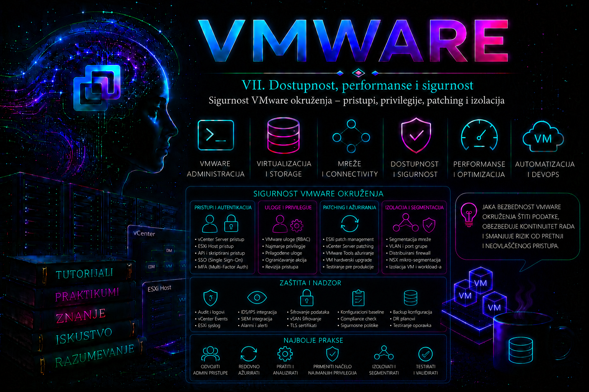

VMware

Napredni tutorijal
Sigurnost VMware okruženja nije jedna funkcija niti jedna opcija koju administrator uključi nakon završene instalacije. Ona predstavlja skup međusobno povezanih mehanizama koji štite hipervizor, upravljačku infrastrukturu, virtuelne mašine, administrativni pristup, mrežnu komunikaciju i podatke. U savremenim vSphere okruženjima upravo kompromitovan vCenter ili ESXi host može postati centralna tačka sa koje napadač dobija pristup stotinama virtuelnih servera. Zbog toga Broadcom u aktuelnoj vSphere Security dokumentaciji i Security Configuration Guide-u bezbednost tretira kao sastavni deo dizajna infrastrukture, a ne kao naknadnu administrativnu aktivnost.
Enterprise administrator zato mora razmišljati u slojevima. Svaki sloj mora ostati bezbedan čak i kada prethodni sloj zakaže.
- fizička bezbednost servera;
- UEFI Secure Boot i TPM;
- ESXi hipervizor;
- vCenter Server Appliance;
- identitet administratora;
- RBAC privilegije;
- mrežna segmentacija;
- upravljanje sertifikatima;
- patch management;
- audit i monitoring;
- backup konfiguracije;
- disaster recovery.
Bezbednosni model vSphere okruženja
Većina napada na VMware infrastrukturu danas ne pokušava da probije VMkernel već koristi pogrešne administratorske navike:
- jedan zajednički root nalog;
- iste lozinke na svim hostovima;
- neisključeni SSH;
- prevelika administratorska prava;
- zastarele verzije ESXi-a;
- neprovereni plugin-i;
- nedostatak MFA za vCenter;
- administracija preko korisničkih računara.
Zbog toga je prvi cilj bezbednog dizajna smanjenje površine napada (Attack Surface).
Administrator treba sebi da postavi nekoliko pitanja:
- koliko servisa zaista mora biti uključeno;
- ko sme da pristupi ESXi hostu;
- ko sme da pristupi vCenter Serveru;
- ko može menjati mrežu;
- ko može menjati storage;
- ko može obrisati VM;
- ko može pokrenuti snapshot;
- ko može eksportovati VMDK.
Svaki odgovor mora biti definisan kroz privilegije, a ne kroz poverenje administratorima.
Identity Management i autentikacija
vCenter koristi sopstveni Identity Provider koji može raditi samostalno ili biti povezan sa spoljnim servisima za autentikaciju.
Najčešći izvori identiteta su:
- lokalni SSO domen;
- Microsoft Active Directory;
- LDAP servisi;
- federacija identiteta (u novijim verzijama vSphere).
Najvažniji princip glasi:
Administratori se autentikuju preko centralnog Identity sistema, a ne lokalnim korisnicima.
Lokalni korisnici ostaju rezervni pristup za slučaj ozbiljnog kvara identitetske infrastrukture.
Role Based Access Control (RBAC)
Jedna od najvećih grešaka u produkciji jeste dodeljivanje Administrator privilegije gotovo svim administratorima.
vSphere koristi Role Based Access Control.
Svaka dozvola sastoji se iz:
- korisnika ili grupe;
- role;
- objekta;
- nasleđivanja privilegija.
Na primer:
| Administrator | Potrebna prava |
|---|---|
| Backup administrator | Backup API + Read konfiguracija |
| Storage administrator | Datastore privilegije |
| Network administrator | Distributed Switch privilegije |
| VM operator | Power operacije nad VM |
| Help Desk | Console + Read Only |
Na ovaj način jedan kompromitovani administratorski nalog ne dobija automatski kontrolu nad kompletnim data centrom.
Nasleđivanje privilegija
Jedna od osobina koju početnici često pogrešno razumeju jeste Inheritance.
Ako se privilegija dodeli na Datacenter objektu sa uključenim propagiranjem:
- Cluster nasleđuje prava;
- Host nasleđuje prava;
- Folder nasleđuje prava;
- VM nasleđuje prava.
Zbog toga se administratorske privilegije ne dodeljuju "odozgo" bez jasnog razloga.
Najčešće se koriste posebni folderi i Resource Pool-ovi sa različitim pravima.
ESXi Lockdown Mode
Jedna od najvažnijih bezbednosnih funkcija ESXi hosta jeste Lockdown Mode.
Njegova svrha nije zaštita od spoljnog napada već sprečavanje zaobilaženja vCenter Servera.
Kada je host u Lockdown režimu:
- direktno logovanje na host postaje ograničeno;
- administracija ide preko vCenter-a;
- audit ostaje centralizovan;
- lokalne administratorske aktivnosti se kontrolišu.
Postoje dva režima:
- Normal Lockdown
- Strict Lockdown
Strict režim dodatno ograničava lokalni pristup i koristi se samo kada postoji dobro planirana procedura za hitne intervencije. Pogrešno uključivanje Strict Lockdown režima bez definisanih Exception korisnika može ozbiljno otežati oporavak hosta tokom incidenta.
Shell i SSH pristup
SSH predstavlja jedan od najčešćih ulaza za napadače.
Preporučena praksa je:
- SSH isključen;
- uključuje se samo privremeno;
- isključuje se odmah po završetku intervencije;
- sve aktivnosti ostaju evidentirane.
Stanje servisa može se proveriti na ESXi hostu.
esxcli network firewall ruleset list
esxcli system service listKomanda se izvršava u ESXi Shell-u ili preko SSH sesije. Ne menja stanje sistema već prikazuje aktivne servise i firewall ruleset-ove. Administrator proverava da li su SSH i druge administrativne usluge uključene samo kada su potrebne.
Za proveru korisničkih naloga:
esxcli system account listKomanda prikazuje lokalne korisnike, stanje naloga i, u novijim verzijama ESXi-a, informacije relevantne za pristup Shell-u. Ne vrši izmene sistema. Rezultat treba redovno proveravati kako bi se otkrili zaboravljeni ili nepotrebni lokalni administrativni nalozi.
ESXi Firewall
Za razliku od klasičnih Linux servera, ESXi koristi unapred definisane firewall ruleset-ove.
Administrator ne otvara proizvoljne portove već omogućava ili zabranjuje određene servise.
Pregled konfiguracije:
esxcli network firewall getPrikazuje trenutno stanje ugrađenog firewall-a. Komanda je informativna i bezbedna za izvršavanje.
Pregled pravila:
esxcli network firewall ruleset listPrikazuje svaki aktivni ruleset, da li je omogućen i da li dozvoljava pristup svim IP adresama ili samo definisanim izvorima. Administrator ovde proverava da li je, na primer, SSH otvoren šire nego što politika dozvoljava.
Secure Boot i TPM
Od vSphere 7 i posebno u vSphere 8 preporučuje se korišćenje:
- UEFI Secure Boot;
- TPM 2.0;
- Host Attestation;
- integriteta boot procesa.
Secure Boot proverava digitalni potpis boot komponenti.
TPM omogućava dokazivanje da host nije modifikovan između restartovanja.
Ako Host Attestation prijavi neuspeh, administrator ne treba odmah da zaključuje da je host kompromitovan. Potrebno je proveriti da li je uzrok legitimna promena firmvera, BIOS-a ili ESXi verzije, a tek zatim analizirati moguće bezbednosne incidente.
Certificate Management
Svaki ESXi host i vCenter koriste sertifikate.
Administrator može koristiti:
- VMCA;
- interni PKI;
- korporativni CA;
- hibridni model.
Problemi sa isteklim sertifikatima često se manifestuju kao:
- nemoguć login;
- host disconnect;
- problemi sa trust odnosima;
- greške prilikom dodavanja hosta.
Zato se sertifikati prate kao deo redovnog održavanja, a njihova obnova planira pre isteka kako bi se izbegli prekidi administracije.
Praktikum – identiteti, najmanje privilegije i zaštita pristupa
Prvi deo praktikuma uspostavlja kontrolisanu bezbednosnu osnovu VMware okruženja. Administrator najpre dokumentuje postojeće stanje, zatim proverava identitete i efektivne privilegije, pravi ograničenu administratorsku rolu, testira nasleđivanje dozvola i na kraju štiti direktan pristup ESXi hostovima kroz lokalne naloge, servisnu politiku, firewall i Lockdown Mode.
Vežbe su projektovane tako da se izvode u laboratoriji koja liči na produkciono okruženje, ali ne sadrži poslovno kritične virtuelne mašine. Posebno treba izbegavati prvo testiranje Lockdown Mode-a, promene administratorskih dozvola ili ograničavanja management pristupa na jedinom produkcionom hostu.
Laboratorijska topologija
| Komponenta | Primer | Namena |
|---|---|---|
| vCenter Server | vcsa01.lab.local | Centralno upravljanje, autentikacija, RBAC, događaji i audit |
| SSO domen | vsphere.local | Interni vCenter Single Sign-On identiteti |
| Spoljni identitetski domen | lab.local | Administrativne grupe i korisnički nalozi |
| ESXi host 1 | esxi01.lab.local | Primarni host za proveru konfiguracije |
| ESXi host 2 | esxi02.lab.local | Rezervni host i provera doslednosti |
| Klaster | CL-PROD-LAB | Objekat za testiranje nasleđivanja privilegija |
| Folder virtuelnih mašina | LAB-APP | Ograničeni administrativni domen |
| Test VM | vm-sec-test01 | Provera efektivnih prava |
| Administratorska stanica | admin01.lab.local | vSphere Client, PowerShell i PowerCLI |
| Test korisnik | LAB\vm-operator01 | Provera ograničene role |
U manjoj laboratoriji dovoljan je jedan ESXi host, ali se Lockdown Mode ne uključuje dok administrator ne potvrdi da može da upravlja hostom preko vCenter Servera i da ima pristup DCUI konzoli. Kod nested ESXi laboratorije potrebno je obezbediti pristup konzoli nested VM-a kroz nadređeni hipervizor.
Opšti preduslovi
- vCenter Server i ESXi hostovi moraju imati ispravnu DNS rezoluciju unapred i unazad;
- vCenter, ESXi hostovi, identitetski sistemi i administratorska stanica moraju imati usklađeno vreme;
- hostovi moraju biti povezani sa vCenter Serverom i u stanju Connected;
- administrator mora imati rezervni nalog kojim može vratiti pogrešno dodeljene privilegije;
- potrebno je obezbediti pristup fizičkoj ili udaljenoj konzoli hosta, kao što su iLO, iDRAC ili drugi BMC;
- PowerCLI se izvršava sa zaštićene administratorske stanice, a ne sa svakodnevnog korisničkog računara;
- pre promena treba sačuvati izvoz dozvola, servisa, firewall pravila i naprednih bezbednosnih podešavanja;
- u laboratoriji mora postojati najmanje jedna virtuelna mašina nad kojom je dozvoljeno testiranje Power operacija.
Važna verzijska napomena
GUI putanje mogu se neznatno razlikovati između vSphere 7, vSphere 8 i novijih VCF/vSphere izdanja. U vSphere 8 i kasnijim izdanjima postoje dodatne mogućnosti za ograničavanje Shell pristupa non-root ESXi korisnicima. Nazivi PowerCLI paketa takođe se menjaju: u novijim izdanjima Broadcom koristi naziv VCF PowerCLI, ali su osnovni vSphere cmdlet-i, uključujući Get-VIPermission, New-VIPermission, Get-VIRole i Get-VMHostService, i dalje deo odgovarajućih PowerCLI modula. Pre primene skripte treba proveriti verziju modula i sintaksu dostupnu u konkretnom okruženju.
Vežba 1 – Izrada bezbednosnog inventara i baznog stanja
Cilj vežbe
Cilj je da administrator pre prve promene napravi dokazivo bazno stanje bezbednosti vCenter Servera i ESXi hostova. Bez baznog stanja nije moguće pouzdano utvrditi šta je promenjeno, da li je konfiguracija odstupala i pre incidenta i da li je korektivna akcija zaista vratila očekivano stanje.
Početno stanje
- administrator može da se prijavi u vSphere Client;
- PowerCLI je instaliran na administratorskoj stanici;
- SSH nije potreban za početni PowerCLI inventar;
- nijedna konfiguracija se u ovoj vežbi ne menja.
Upozorenje o riziku
Izvezeni bezbednosni inventar sadrži nazive naloga, grupa, hostova, uloga, mrežnih servisa i interne organizacije infrastrukture. Fajlove ne treba čuvati u javnom repozitorijumu, korisničkom Desktop folderu ili nezaštićenom mrežnom deljenju. Izvoz se čuva u administratorskom repozitorijumu sa kontrolom pristupa i evidencijom verzija.
Korak 1 – Provera verzija kroz vSphere Client
- Prijaviti se u vSphere Client.
- Otvoriti Menu > Administration > System Configuration.
- Zabeležiti verziju i build vCenter Servera.
- Otvoriti svaki ESXi host.
- Izabrati Summary.
- Zabeležiti ESXi verziju, build, model servera, stanje hosta i vreme poslednjeg pokretanja.
- Na kartici Configure proveriti da li postoje upozorenja vezana za Secure Boot, TPM, attestation, sertifikate ili bezbednosni profil.
Verzija proizvoda sama po sebi nije dovoljna. Bezbednosna procena koristi tačan build broj jer se više build-ova može predstavljati istim marketinškim nazivom, na primer „vSphere 8.0 Update 3”, ali imati različit nivo zakrpa.
Korak 2 – Povezivanje PowerCLI-ja
$vCenter = "vcsa01.lab.local"
Connect-VIServer -Server $vCenterKomanda se izvršava u PowerShell-u na administratorskoj stanici. Uspostavlja API sesiju prema vCenter Serveru i zato ne menja konfiguraciju inventara. Očekivani rezultat je objekat koji prikazuje naziv servera, port, korisnika i stanje veze.
U produkciji ne treba unositi lozinku direktno u skriptu. Koriste se interaktivna autentikacija, odgovarajući credential store, federativni identitet ili drugo odobreno rešenje za upravljanje tajnama. Zvanična PowerCLI referenca definiše Connect-VIServer kao cmdlet za uspostavljanje veze sa vCenter sistemom.
Korak 3 – Kreiranje direktorijuma za izvoz
$Timestamp = Get-Date -Format "yyyyMMdd-HHmmss"
$ExportRoot = "C:\VMware-Security-Baseline\$Timestamp"
New-Item -ItemType Directory -Path $ExportRoot -Force |
Out-NullKomanda menja samo lokalni sistem administratorske stanice. Kreira direktorijum sa vremenskom oznakom kako se novi inventar ne bi pomešao sa prethodnim stanjem.
Korak 4 – Izvoz vCenter i ESXi verzija
Get-View ServiceInstance |
Select-Object @{
Name = "vCenterName"
Expression = { $_.Client.ServiceUrl }
}, @{
Name = "ApiVersion"
Expression = { $_.Content.About.ApiVersion }
}, @{
Name = "Version"
Expression = { $_.Content.About.Version }
}, @{
Name = "Build"
Expression = { $_.Content.About.Build }
}, @{
Name = "FullName"
Expression = { $_.Content.About.FullName }
} |
Export-Csv "$ExportRoot\vcenter-version.csv" -NoTypeInformation -Encoding UTF8
Get-VMHost |
Select-Object Name,
Manufacturer,
Model,
Version,
Build,
ConnectionState,
PowerState |
Sort-Object Name |
Export-Csv "$ExportRoot\esxi-versions.csv" -NoTypeInformation -Encoding UTF8Komande su read-only. Prvi blok čita podatke iz vCenter ServiceInstance objekta, dok drugi prikuplja verzije i build-ove svih hostova dostupnih kroz aktivnu sesiju.
Očekivani rezultat je po jedan red za vCenter i po jedan red za svaki ESXi host. Ako host nema prikazan build ili je u stanju Disconnected, to se evidentira kao odstupanje i ne pokušava se patching dok se ne utvrdi razlog.
Korak 5 – Izvoz rola
Get-VIRole |
Sort-Object Name |
Select-Object Name,
IsSystem,
@{
Name = "PrivilegeCount"
Expression = { $_.PrivilegeList.Count }
},
@{
Name = "Privileges"
Expression = { $_.PrivilegeList -join ";" }
} |
Export-Csv "$ExportRoot\roles.csv" -NoTypeInformation -Encoding UTF8Get-VIRole čita ugrađene i prilagođene role. Polje IsSystem pomaže da se razlikuju sistemske role od rola koje je napravila organizacija. Spisak privilegija je važniji od naziva role: naziv „VM Operator” ne dokazuje da rola nema privilegiju za brisanje virtuelne mašine.
Korak 6 – Izvoz svih eksplicitnih dozvola
Get-VIPermission |
Select-Object @{
Name = "Entity"
Expression = { $_.Entity.Name }
},
@{
Name = "EntityType"
Expression = { $_.Entity.GetType().Name }
},
Principal,
Role,
Propagate,
IsGroup |
Sort-Object EntityType, Entity, Principal |
Export-Csv "$ExportRoot\permissions.csv" -NoTypeInformation -Encoding UTF8Get-VIPermission vraća eksplicitno definisane dozvole na vSphere inventarskim objektima. Ne prikazuje nužno kompletnu logiku efektivnih prava u jednoj jednostavnoj koloni, jer se konačan pristup može formirati kombinovanjem eksplicitnih dozvola, nasleđivanja, članstva u grupama i sistemskih privilegija.
Administrator u izvozu traži:
- direktne dozvole dodeljene pojedinačnim korisnicima umesto grupama;
- više različitih administratorskih grupa sa punom Administrator rolom;
- dozvole na root objektu sa uključenim propagiranjem;
- privremene servisne naloge koji su ostali aktivni;
- dozvole dodeljene napuštenim ili nepostojećim domenima;
- neočekivane dozvole na folderima, datastore-ovima ili mrežama;
- role čiji naziv ne odgovara stvarnim privilegijama.
Korak 7 – Izvoz stanja ESXi servisa
Get-VMHost |
ForEach-Object {
$CurrentHost = $_
Get-VMHostService -VMHost $CurrentHost |
Select-Object @{
Name = "VMHost"
Expression = { $CurrentHost.Name }
},
Key,
Label,
Policy,
Running,
Required
} |
Sort-Object VMHost, Key |
Export-Csv "$ExportRoot\host-services.csv" -NoTypeInformation -Encoding UTF8Komanda je read-only. Posebnu pažnju treba posvetiti servisima čiji su ključevi najčešće:
TSM– lokalni ESXi Shell;TSM-SSH– SSH servis;DCUI– Direct Console User Interface;ntpdili odgovarajući servis za sinhronizaciju vremena;vpxa– vCenter agent na hostu.
Tačan prikaz zavisi od ESXi verzije. Administrator ne pretpostavlja da je servis bezbedan samo zato što trenutno nije pokrenut. Proverava i njegovu startnu politiku: servis sa politikom on može se ponovo aktivirati nakon restartovanja hosta.
Korak 8 – Izvoz firewall izuzetaka
Get-VMHost |
ForEach-Object {
$CurrentHost = $_
Get-VMHostFirewallException -VMHost $CurrentHost |
Select-Object @{
Name = "VMHost"
Expression = { $CurrentHost.Name }
},
Name,
Enabled,
IncomingPorts,
OutgoingPorts,
Protocols,
ServiceRunning
} |
Sort-Object VMHost, Name |
Export-Csv "$ExportRoot\firewall-exceptions.csv" -NoTypeInformation -Encoding UTF8Komanda čita definisane ESXi firewall izuzetke. Ne menja ruleset-ove. Očekivani rezultat je pregled servisa, portova i trenutnog stanja. Potrebno je izdvojiti omogućene izuzetke za servise koji se ne koriste, ali ne isključivati ih nasumično: pojedini ruleset može pripadati backup, monitoring, hardware management, vMotion, vSAN ili drugom zavisnom sistemu.
Korak 9 – Izvoz naprednih bezbednosnih podešavanja
$SecuritySettings = @(
"Security.AccountLockFailures",
"Security.AccountUnlockTime",
"Security.PasswordHistory",
"UserVars.ESXiShellInteractiveTimeOut",
"UserVars.ESXiShellTimeOut",
"UserVars.SuppressShellWarning"
)
Get-VMHost |
ForEach-Object {
$CurrentHost = $_
foreach ($SettingName in $SecuritySettings) {
$Setting = Get-AdvancedSetting `
-Entity $CurrentHost `
-Name $SettingName `
-ErrorAction SilentlyContinue
if ($null -ne $Setting) {
[PSCustomObject]@{
VMHost = $CurrentHost.Name
Name = $Setting.Name
Value = $Setting.Value
}
}
}
} |
Export-Csv "$ExportRoot\advanced-security-settings.csv" `
-NoTypeInformation `
-Encoding UTF8Get-AdvancedSetting samo čita konfiguraciju. Spisak podešavanja treba prilagoditi verziji ESXi-a i kontrolama koje organizacija koristi. Ne treba slepo primenjivati vrednosti sa starog hardening spiska na novu verziju proizvoda, jer se naziv, dostupnost, podrazumevana vrednost ili smisao kontrole mogu promeniti.
Korak 10 – Generisanje hash vrednosti izvoza
Get-ChildItem $ExportRoot -File |
Get-FileHash -Algorithm SHA256 |
Export-Csv "$ExportRoot\SHA256SUMS.csv" `
-NoTypeInformation `
-Encoding UTF8Hash ne šifruje sadržaj, ali omogućava kasniju proveru da li je inventar promenjen. Fajl sa hash vrednostima treba čuvati zajedno sa izvozom, a kod ozbiljnijeg audit procesa i u odvojenom, kontrolisanom sistemu.
Očekivani rezultat
- napravljen je vremenski označen direktorijum;
- evidentirane su verzije i build-ovi;
- izvezene su role i eksplicitne dozvole;
- izvezeni su servisi i firewall izuzeci;
- izvezena su odabrana napredna podešavanja;
- generisane su SHA-256 vrednosti fajlova;
- nijedno stanje vCenter Servera ili ESXi hosta nije promenjeno.
Provera uspeha
Get-ChildItem $ExportRoot |
Select-Object Name, Length, LastWriteTime
Import-Csv "$ExportRoot\permissions.csv" |
Group-Object Role |
Sort-Object Count -Descending |
Select-Object Count, Name
Import-Csv "$ExportRoot\host-services.csv" |
Where-Object {
$_.Key -in @("TSM", "TSM-SSH")
} |
Format-Table -AutoSizeAko su CSV fajlovi prazni, prvo treba proveriti da li je PowerCLI sesija povezana sa odgovarajućim vCenter Serverom i da li prijavljeni nalog ima pravo čitanja relevantnih objekata. Prazan rezultat nije automatski dokaz da nema dozvola ili servisa.
Moguće greške i troubleshooting
| Simptom | Verovatan uzrok | Bezbedna provera |
|---|---|---|
Connect-VIServer prijavljuje problem sa sertifikatom |
Administratorska stanica ne veruje vCenter sertifikatu ili se koristi pogrešan FQDN | Proveriti DNS, SAN/CN sertifikata i korporativni trust store; ne isključivati trajno proveru sertifikata samo da bi skripta radila |
Get-VIPermission vraća nepotpun rezultat |
Nalog nema pregled svih inventarskih objekata | Uporediti GUI inventar i obim dodeljene read-only dozvole |
| Jedan host nedostaje u izvozu | Host je disconnected, u drugom vCenter-u ili nije vidljiv nalogu | Proveriti Get-VMHost bez dodatnog filtriranja i vSphere Client događaje |
| Napredno podešavanje nije pronađeno | Podešavanje nije dostupno ili je preimenovano u toj ESXi verziji | Ne kreirati ga nasumično; proveriti Security Configuration Guide za konkretan build |
Vraćanje laboratorije u početno stanje
Vežba nije menjala VMware konfiguraciju. Lokalni izvoz se ne briše ako predstavlja početno audit stanje. Ukoliko sadrži podatke koji više nisu potrebni, uklanja se u skladu sa pravilima čuvanja bezbednosne dokumentacije, a ne običnim nekontrolisanim brisanjem.
Vežba 2 – Projektovanje i testiranje minimalne VM Operator role
Cilj vežbe
Cilj je kreiranje role koja operateru dozvoljava ograničen svakodnevni rad nad virtuelnim mašinama u jednom folderu, bez prava da menja hostove, mrežu, storage, dozvole ili konfiguraciju drugih virtuelnih mašina.
Vežba razvija najvažniji RBAC princip: rola se ne projektuje prema nazivu radnog mesta, već prema precizno definisanim administrativnim operacijama.
Zahtev role
Korisnik treba da može:
- da vidi virtuelne mašine u folderu
LAB-APP; - da otvori konzolu test VM-a;
- da uključi virtuelnu mašinu;
- da izvrši uredno gašenje gostujućeg sistema kada VMware Tools i gost to omogućavaju;
- da resetuje VM samo kada je to eksplicitno odobreno za laboratoriju;
- da odgovori na uobičajena runtime pitanja VM-a, samo ako je ta mogućnost deo lokalne procedure.
Korisnik ne treba da može:
- da obriše VM;
- da promeni CPU, memoriju, disk ili mrežnu karticu;
- da kreira snapshot;
- da promeni anotacije i tagove, osim ako je to zasebno zahtevano;
- da menja dozvole;
- da pregleda ili upravlja drugim folderima;
- da pristupa ESXi hostu direktno.
Upozorenje o riziku
Privilegije vezane za konzolu imaju veći bezbednosni značaj nego što naziv sugeriše. Korisnik sa pristupom konzoli vidi ekran VM-a i može komunicirati sa gostujućim operativnim sistemom kao da sedi ispred fizičkog servera. Ako gost ima automatski prijavljen nalog, nezaštićen boot meni, montiran instalacioni ISO ili slabu lokalnu autentikaciju, konzola može postati put ka privilegovanom pristupu unutar VM-a.
Korak 1 – Kreiranje bezbednosne grupe
U identitetskom sistemu kreirati grupu:
GG-VMWARE-LAB-VM-OPERATORSU grupu dodati test korisnika:
LAB\vm-operator01U produkciji se pravo dodeljuje grupi, a ne neposredno pojedinačnom korisniku. To omogućava da se pristup ukloni promenom članstva, da vlasnik grupe periodično potvrđuje članove i da audit jasno razlikuje identitet od definicije dozvole.
Korak 2 – Kreiranje foldera i premeštanje test VM-a
- U vSphere Client-u otvoriti VMs and Templates.
- Desnim tasterom izabrati odgovarajući Datacenter.
- Izabrati New Folder > New VM and Template Folder.
- Uneti naziv
LAB-APP. - Premestiti
vm-sec-test01u novi folder. - Potvrditi da folder ne sadrži produkcione VM-ove.
Premeštanje VM-a između inventarskih foldera ne predstavlja compute ili storage migraciju. Ipak, može promeniti efektivne dozvole jer se menja mesto objekta u hijerarhiji inventara.
Korak 3 – Pregled postojećih privilegija i rola
Get-VIRole |
Sort-Object Name |
Select-Object Name, IsSystem |
Format-Table -AutoSize
Get-VIPrivilege |
Where-Object {
$_.Name -match "Power|Console|Question|Guest"
} |
Sort-Object Name |
Select-Object Name, Description |
Format-Table -AutoSizeKomande se izvršavaju na PowerCLI stanici i ne menjaju konfiguraciju. Administrator prvo proverava stvarne nazive privilegija dostupne u svojoj verziji, umesto da slepo kopira spisak iz drugog izdanja.
Korak 4 – Kreiranje role kroz GUI
- Otvoriti Menu > Administration > Access Control > Roles.
- Kliknuti New.
- Uneti naziv
TASH-LAB-VM-OPERATOR. - Odabrati samo privilegije potrebne za dogovorene Power operacije i konzolu.
- Ne uključivati opštu privilegiju za rekonfiguraciju virtuelne mašine.
- Ne uključivati privilegije za snapshot, uklanjanje iz inventara ili brisanje.
- Sačuvati rolu.
Tačan raspored privilegija u GUI-ju zavisi od verzije. Tipično se traže u granama:
- Virtual machine > Interaction;
- Virtual machine > Guest operations, samo ako je zaista potreban API rad unutar gosta;
- System privilegije, koje se u pojedinim kontekstima podrazumevano dodaju roli.
Ne treba mešati otvaranje VM konzole sa Guest Operations privilegijama. Guest Operations se odnose na operacije koje se kroz VMware Tools/API izvršavaju unutar gostujućeg sistema i mogu zahtevati dodatne privilegije i gostujuće kredencijale.
Korak 5 – Alternativno kreiranje role kroz PowerCLI
Prvo identifikovati potrebne privilegije:
$PrivilegePatterns = @(
"*Power On*",
"*Power Off*",
"*Console*"
)
$SelectedPrivileges = foreach ($Pattern in $PrivilegePatterns) {
Get-VIPrivilege |
Where-Object {
$_.Description -like $Pattern -or
$_.Name -like $Pattern
}
}
$SelectedPrivileges |
Sort-Object Name -Unique |
Select-Object Name, Description |
Format-Table -AutoSizeOvaj korak je samo pregled. Administrator ručno proverava rezultat. Ne prosleđuje automatski široko filtriran rezultat u kreiranje role jer obrasci mogu zahvatiti više privilegija nego što je planirano.
Nakon potvrde tačnih privilegija:
$RoleName = "TASH-LAB-VM-OPERATOR"
$Privileges = Get-VIPrivilege |
Where-Object {
$_.Name -in @(
"VirtualMachine.Interact.PowerOn",
"VirtualMachine.Interact.PowerOff",
"VirtualMachine.Interact.ConsoleInteract"
)
}
New-VIRole -Name $RoleName -Privilege $PrivilegesPrimer naziva privilegija mora se proveriti u aktivnom okruženju. New-VIRole menja vCenter konfiguraciju kreiranjem nove role. Pre izvršavanja treba prikazati sadržaj promenljive $Privileges i potvrditi da ne sadrži neočekivane stavke.
Korak 6 – Dodela role grupi na folderu
GUI putanja:
- Otvoriti VMs and Templates.
- Izabrati folder
LAB-APP. - Otvoriti Permissions.
- Kliknuti Add.
- Izabrati domen
LAB. - Dodati grupu
GG-VMWARE-LAB-VM-OPERATORS. - Izabrati rolu
TASH-LAB-VM-OPERATOR. - Uključiti propagiranje na potomke foldera.
- Sačuvati dozvolu.
PowerCLI alternativa:
$Folder = Get-Folder -Name "LAB-APP"
$Role = Get-VIRole -Name "TASH-LAB-VM-OPERATOR"
New-VIPermission `
-Entity $Folder `
-Principal "LAB\GG-VMWARE-LAB-VM-OPERATORS" `
-Role $Role `
-Propagate:$trueNew-VIPermission menja autorizacionu konfiguraciju. Parametar -Entity definiše objekat na kojem se dozvola postavlja, -Principal identitet ili grupu, -Role skup privilegija, a -Propagate određuje da li se dozvola nasleđuje na potomke.
Nasleđivanje je svojstvo konkretne dozvole. Broadcom dokumentacija naglašava da se propagiranje određuje pri dodeli dozvole i da potomci u inventarskoj hijerarhiji mogu nasleđivati prava sa roditeljskog objekta.
Korak 7 – Potvrda definisane dozvole
Get-VIPermission -Entity $Folder |
Where-Object {
$_.Principal -eq "LAB\GG-VMWARE-LAB-VM-OPERATORS"
} |
Select-Object Principal,
Role,
Propagate,
IsGroup,
@{
Name = "Entity"
Expression = { $_.Entity.Name }
} |
Format-ListOčekuje se:
Principalodgovara grupi;RolejeTASH-LAB-VM-OPERATOR;PropagatejeTrue;IsGroupjeTrue;- objekat je folder
LAB-APP.
Korak 8 – Pozitivno testiranje
- Odjaviti administratorsku sesiju ili koristiti poseban privatni browser prozor.
- Prijaviti se kao
LAB\vm-operator01. - Potvrditi da korisnik vidi folder
LAB-APPi test VM. - Otvoriti Summary stranicu VM-a.
- Otvoriti konzolu.
- Uključiti VM ako je isključena.
- Izvršiti samo unapred odobrenu Power operaciju.
Korak 9 – Negativno testiranje
Negativno testiranje je obavezno. Rola nije potvrđena samo zato što dozvoljena operacija radi.
- Pokušati otvaranje VM-a iz drugog foldera.
- Pokušati Edit Settings.
- Pokušati kreiranje snapshot-a.
- Pokušati uklanjanje VM-a iz inventara.
- Pokušati otvaranje host konfiguracije.
- Pokušati menjanje Permissions kartice.
Očekivani rezultat je da operater nema pristup ili da mu je odgovarajuća akcija nedostupna. Ne treba ići do poslednjeg potvrđujućeg koraka destruktivne akcije ako GUI već pokazuje da je akcija dozvoljena. Sama činjenica da se pojavio dijalog za brisanje znak je da rola zahteva ponovnu analizu.
Događaji i audit
Na objektu test VM-a otvoriti:
Monitor > Tasks and Events > Events
Filtrirati prema test korisniku. Potražiti:
- prijavu korisnika;
- otvaranje konzole kada se evidentira;
- Power On ili Power Off događaje;
- neuspešne pokušaje autorizacije;
- identitet koji je izvršio operaciju;
- vreme i ciljni objekat.
Relevantni vCenter logovi
| Log | Komponenta | Šta se traži |
|---|---|---|
/var/log/vmware/vpxd/vpxd.log |
vCenter vpxd servis | Zadaci, vSphere operacije, autorizacioni kontekst i greške izvršavanja |
/var/log/vmware/sso/ |
vCenter Single Sign-On servisi | Problemi autentikacije, tokena i identitetskog izvora |
/var/log/vmware/vsphere-ui/logs/vsphere_client_virgo.log |
vSphere Client servis | Greške korisničkog interfejsa i komunikacije sa backend servisima |
Na VCSA konzoli ili kroz odobrenu SSH sesiju:
grep -iE "permission|privilege|authorization|denied" \
/var/log/vmware/vpxd/vpxd.log |
tail -n 100Komanda samo čita log. Administrator tumači nalaz u kontekstu korisnika, vremena i objekta. Jedna poruka „permission denied” može predstavljati očekivano negativno testiranje, a ne kvar sistema.
Troubleshooting grane
Grana A – Korisnik ne vidi ni folder ni VM
- Potvrditi da se prijavio u pravi vCenter.
- Potvrditi format identiteta i domen.
- Potvrditi članstvo u grupi.
- Odjaviti korisnika i prijaviti ga ponovo kako bi dobio novi token.
- Proveriti da je dozvola dodeljena pravoj grupi.
- Proveriti da je VM zaista u folderu
LAB-APP. - Proveriti da li je propagiranje uključeno.
Grana B – Korisnik vidi VM, ali ne može da je uključi
- Proveriti da li rola sadrži odgovarajuću Power On privilegiju.
- Proveriti da li je zabrana vezana za neki drugi neophodan objekat.
- Proveriti vCenter događaj i tačnu poruku greške.
- Ne dodavati široku Administrator rolu kao „privremeno rešenje”.
- Dodati samo potvrđenu nedostajuću privilegiju, zatim ponoviti test.
Grana C – Korisnik vidi više VM-ova nego što je planirano
- Pregledati dozvole na Datacenter, root folderu i nadređenim objektima.
- Proveriti članstvo korisnika u drugim grupama.
- Proveriti globalne dozvole.
- Proveriti da li postoji druga rola sa propagiranjem.
- Ukloniti pogrešnu širu dozvolu tek nakon procene uticaja na druge korisnike.
Vraćanje laboratorije u početno stanje
$Permission = Get-VIPermission -Entity $Folder |
Where-Object {
$_.Principal -eq "LAB\GG-VMWARE-LAB-VM-OPERATORS"
}
$Permission |
Remove-VIPermission -Confirm:$trueKomanda uklanja dodeljenu dozvolu i menja stanje autorizacije. Parametar -Confirm:$true namerno zadržava potvrdu. Nakon uklanjanja proveriti da li test korisnik više nema pristup.
Ako rola više nije potrebna:
Get-VIRole -Name "TASH-LAB-VM-OPERATOR" |
Remove-VIRole -Confirm:$trueRola se uklanja tek nakon uklanjanja ili premeštanja svih dozvola koje je koriste. Folder i test VM mogu ostati za kasnije vežbe.
Vežba 3 – Otkrivanje pogrešnog nasleđivanja i preširokih privilegija
Cilj vežbe
Cilj je analizirati realan incident u kojem korisnik ima više prava nego što mu je administrator nameravao dodeliti. Vežba pokazuje da konačan pristup ne određuje samo rola vidljiva na VM-u, već celokupna hijerarhija dozvola i članstvo korisnika u grupama.
Scenario
Help Desk korisnik treba samo da otvara konzolu i uključuje virtuelne mašine u folderu LAB-APP. Tokom provere utvrđeno je da može menjati konfiguraciju VM-a i u drugom folderu. Na samom VM-u nije pronađena direktna Administrator dozvola.
Simulacija pogrešne konfiguracije – isključivo u laboratoriji
Na Datacenter objektu dodeliti test grupi širu rolu sa uključenim propagiranjem. Ne koristiti punu Administrator rolu ako nije neophodna za demonstraciju; može se napraviti privremena laboratorijska rola sa jednom dodatnom privilegijom za rekonfiguraciju VM-a.
Primer:
$Datacenter = Get-Datacenter -Name "DC-LAB"
$BroadRole = Get-VIRole -Name "Virtual Machine Power User"
New-VIPermission `
-Entity $Datacenter `
-Principal "LAB\GG-VMWARE-LAB-VM-OPERATORS" `
-Role $BroadRole `
-Propagate:$trueOvo je namerno pogrešna laboratorijska promena. U produkciji se ne koristi za simulaciju. Pre izvršavanja treba potvrditi da Datacenter ne sadrži produkcione objekte.
Sistematična dijagnostika
1. Potvrda simptoma
Prijaviti se kao test korisnik i potvrditi tačno koju neočekivanu operaciju može da izvrši. Ne oslanjati se na izjavu „ima previše prava” bez konkretnog primera.
2. Određivanje obima
- da li problem pogađa jednu VM ili sve VM-ove;
- da li se javlja u jednom folderu ili celom Datacenter-u;
- da li druga grupa ima isti problem;
- da li pravo postoji samo kroz GUI ili i kroz API.
3. Provera nedavnih promena
Na Datacenter objektu otvoriti Monitor > Tasks and Events > Events i filtrirati promene dozvola. Zabeležiti korisnika, vreme, objekat i rolu.
4. Pregled eksplicitnih dozvola po hijerarhiji
$Principal = "LAB\GG-VMWARE-LAB-VM-OPERATORS"
Get-VIPermission |
Where-Object {
$_.Principal -eq $Principal
} |
Select-Object @{
Name = "Entity"
Expression = { $_.Entity.Name }
},
@{
Name = "EntityType"
Expression = { $_.Entity.GetType().Name }
},
Role,
Propagate,
IsGroup |
Sort-Object EntityType, Entity |
Format-Table -AutoSizeOčekuje se da će se pojaviti najmanje dve dozvole:
- ograničena rola na folderu
LAB-APP; - šira rola na Datacenter objektu sa propagiranjem.
5. Provera članstva u drugim grupama
Čak i kada ista grupa nema širu dozvolu, korisnik je može dobijati kroz drugu grupu. Članstvo se proverava na identitetskom sistemu, a zatim se u vCenter-u traže dozvole za sve relevantne grupe.
6. Potvrda uzroka
Uzrok je potvrđen kada administrator može povezati:
- korisnika sa članstvom u grupi;
- grupu sa eksplicitnom dozvolom;
- dozvolu sa nadređenim objektom;
- uključeno propagiranje sa ciljnim VM-om;
- privilegiju u široj roli sa neočekivanom operacijom.
Bezbedna korektivna akcija
$WrongPermission = Get-VIPermission -Entity $Datacenter |
Where-Object {
$_.Principal -eq $Principal -and
$_.Role -eq "Virtual Machine Power User"
}
$WrongPermission |
Format-List Principal, Role, Propagate, Entity
$WrongPermission |
Remove-VIPermission -Confirm:$truePrvi deo namerno prikazuje dozvolu pre uklanjanja. Administrator mora potvrditi da filtriranje vraća tačno jedan očekivani objekat. Nikada se ne pokreće široko Remove-VIPermission bez pregleda rezultata.
Validacija oporavka
- Odjaviti test korisnika.
- Sačekati završetak promene i ponovo se prijaviti.
- Potvrditi da korisnik i dalje može izvršavati dozvoljene operacije u
LAB-APP. - Potvrditi da ne može rekonfigurisati VM.
- Potvrditi da ne vidi ili ne može menjati VM izvan dozvoljenog foldera.
- Izvesti novi spisak dozvola i uporediti ga sa baznim stanjem.
Dokumentovanje incidenta
Zabeležiti:
- datum i vreme otkrivanja;
- korisnika ili grupu;
- objekte nad kojima je postojao preširok pristup;
- koja privilegija je bila neočekivano dostupna;
- izvor nasleđene dozvole;
- ko je i kada napravio promenu;
- da li je privilegija korišćena;
- korektivnu akciju;
- rezultat pozitivnog i negativnog ponovnog testiranja;
- preventivnu meru, na primer periodični pregled dozvola na najvišim inventarskim nivoima.
Vežba 4 – Revizija lokalnih ESXi naloga i kontrola direktnog pristupa
Cilj vežbe
Cilj je utvrditi koji lokalni nalozi postoje na ESXi hostovima, koji imaju Shell pristup, da li je direktna administracija opravdana i da li je konfiguracija ujednačena u klasteru.
Lokalni ESXi nalozi ne pojavljuju se automatski kao vCenter SSO identiteti. Oni pripadaju konkretnom hostu i zato mogu predstavljati teško uočljivu alternativnu administrativnu putanju.
Upozorenje o riziku
Ne uklanjati nalog samo zato što mu administrator ne prepoznaje naziv. Nalog može pripadati backup sistemu, hardverskom alatu, nadzoru, automatizaciji ili drugom integrisanom proizvodu. Pre uklanjanja treba identifikovati vlasnika, svrhu, poslednju upotrebu i zavisne servise.
Korak 1 – Pregled naloga kroz ESXi Host Client
- Prijaviti se direktno na laboratorijski ESXi Host Client.
- Otvoriti Manage > Security & Users > Users.
- Zabeležiti sve lokalne naloge.
- Za svaki nalog evidentirati opis, svrhu i vlasnika.
- Otvoriti Manage > Security & Users > Roles.
- Proveriti lokalne role i dozvole.
GUI naziv može neznatno varirati po verziji Host Client-a. Ako se hostom upravlja isključivo kroz vCenter, direktan Host Client pristup treba da bude ograničen administrativnom mrežom i politikom pristupa.
Korak 2 – Pregled naloga kroz ESXCLI
Na laboratorijskom hostu privremeno uključiti SSH ili koristiti ESXi Shell kroz konzolu. Zatim izvršiti:
esxcli system account listKomanda se izvršava na ESXi hostu. Ne menja stanje i prikazuje lokalne sistemske naloge dostupne kroz ESXi account interfejs.
U novijim verzijama vSphere 8 moguće je upravljati Shell pristupom za non-root korisnike. Zbog toga administrator proverava dostupna polja i aktuelnu dokumentaciju za konkretan build, a ne pretpostavlja da svaki lokalni nalog automatski ima isti tip pristupa. Broadcom dokumentacija posebno navodi mogućnost deaktiviranja Shell pristupa za non-root ESXi korisnike u vSphere 8 i novijim izdanjima.
Korak 3 – Pregled lokalnih dozvola
esxcli system permission listKomanda je read-only i prikazuje dozvole definisane na hostu. Administrator poredi naloge sa prethodnim spiskom i traži:
- nepoznate korisnike sa Administrator pristupom;
- servisne naloge sa širim pravima nego što integracija zahteva;
- naloge bez dokumentovanog vlasnika;
- razlike između hostova u istom klasteru.
Korak 4 – Poređenje više hostova
Sa administratorske Linux stanice ili kroz odobrenu automatizaciju može se izvršiti pojedinačni pregled svakog hosta. Lozinke se ne ugrađuju u skriptu.
Primer ručnog postupka:
ssh root@esxi01.lab.local "esxcli system account list"
ssh root@esxi02.lab.local "esxcli system account list"Direktan SSH kao root koristi se samo u kontrolisanoj laboratoriji ili odobrenoj hitnoj proceduri. U produkciji je poželjniji centralno kontrolisan metod i vremenski ograničeno uključivanje SSH servisa.
Korak 5 – Provera neuspešnih prijava i zaključavanja naloga
grep -iE "login|authentication|failed|locked" \
/var/log/auth.log |
tail -n 100/var/log/auth.log na ESXi hostu sadrži događaje autentikacije povezane sa Shell/SSH pristupom i drugim relevantnim bezbednosnim operacijama. Administrator traži ponovljene neuspešne pokušaje, neočekivane izvorne adrese, prijave u neuobičajeno vreme i obrasce koji ukazuju na automatizovani pokušaj pristupa.
Jedna neuspešna prijava nije sama po sebi incident. Više uzastopnih neuspeha za isti nalog, naročito sa nepoznate adrese, zahteva korelaciju sa firewall, mrežnim i centralnim SIEM zapisima.
Korak 6 – Provera naprednih parametara zaključavanja
esxcli system settings advanced list \
-o /Security/AccountLockFailures
esxcli system settings advanced list \
-o /Security/AccountUnlockTimeKomande čitaju trenutne vrednosti i ne menjaju sistem. Očekivani rezultat sadrži putanju, tip, trenutnu i podrazumevanu vrednost. Vrednosti treba uporediti sa zvaničnim Security Configuration Guide-om za tačnu verziju i internom politikom organizacije.
Promena se ne vrši bez change zahteva. Primer sintakse, samo za kontrolisanu laboratoriju:
esxcli system settings advanced set \
-o /Security/AccountLockFailures \
-i 5Ova komanda menja konfiguraciju. Broj 5 je samo laboratorijski primer, a ne univerzalna preporuka. Previše niska vrednost može omogućiti namerno zaključavanje administratorskih naloga, dok previsoka vrednost slabi zaštitu od pogađanja lozinke.
Korak 7 – Kreiranje ograničenog laboratorijskog naloga
Isključivo na laboratorijskom hostu:
esxcli system account add \
-i secaudit \
-d "Temporary security audit account" \
-p 'Privremena-Lab-Lozinka' \
-c 'Privremena-Lab-Lozinka'Komanda menja stanje hosta kreiranjem lokalnog naloga. Lozinka prikazana u primeru ne koristi se u stvarnom okruženju. U interaktivnom radu treba koristiti jedinstvenu dugu lozinku i odobren način upravljanja tajnama.
Nalog bez dozvole još nema nameravana administrativna prava. Za laboratorijsku read-only rolu prvo treba proveriti koje su role dostupne:
esxcli system permission listZatim, u skladu sa lokalnim modelom i podržanom sintaksom konkretnog ESXi izdanja, dodeliti minimalnu odgovarajuću rolu. Ne dodeljivati Administrator samo zato što ograničena integracija trenutno ne radi.
Korak 8 – Provera naloga
esxcli system account list |
grep -i secaudit
esxcli system permission list |
grep -i secauditPrva komanda potvrđuje postojanje naloga, a druga njegovu dozvolu. Administrator ne smatra nalog pravilno konfigurisanom servisnom integracijom dok ne potvrdi šta nalog sme da čita ili menja.
Moguće greške
| Simptom | Uzrok | Korektivni pravac |
|---|---|---|
| Kreiranje naloga odbijeno | Lozinka ne ispunjava politiku ili nalog već postoji | Proveriti tačnu poruku i politiku; ne smanjivati politiku lozinke samo radi kreiranja naloga |
| Nalog postoji, ali se ne može prijaviti kroz SSH | SSH nije uključen, nalog nema Shell pristup, Lockdown Mode ga ograničava ili firewall ne dozvoljava izvor | Utvrditi nameravani metod pristupa pre menjanja više kontrola odjednom |
| Nalog radi na jednom hostu, ali ne na drugom | Lokalni nalozi i dozvole nisu centralno ujednačeni | Uporediti oba hosta i proveriti standardizovani deployment postupak |
| Ponovljene neuspešne prijave posle promene lozinke | Servis ili automatizacija još koristi staru tajnu | Identifikovati izvor kroz logove i koordinisano rotirati tajnu |
Vraćanje laboratorije u početno stanje
Prvo ukloniti dozvolu test naloga, zatim nalog. Tačna sintaksa dozvole zavisi od načina na koji je dodeljena i dostupnih ESXCLI opcija u konkretnoj verziji.
esxcli system account remove -i secauditKomanda trajno uklanja lokalni nalog i menja stanje hosta. Pre izvršavanja potvrditi da nijedan servis više ne koristi nalog i da je reč o laboratorijskom identitetu.
Vežba 5 – Kontrola ESXi Shell-a, SSH servisa i vremenskih ograničenja
Cilj vežbe
Cilj je uspostaviti pravilo prema kojem su ESXi Shell i SSH podrazumevano isključeni, uključuju se samo tokom odobrene intervencije i automatski se zaustavljaju ili prekidaju neaktivnu sesiju prema definisanoj politici.
Početno stanje
- host je povezan sa vCenter Serverom;
- administrator ima pristup konzoli hosta;
- postoji otvoren change zapis za laboratorijsku intervenciju;
- provereno je da nijedan backup ili monitoring alat ne zavisi od SSH-a.
Korak 1 – Pregled stanja kroz vSphere Client
- Izabrati ESXi host.
- Otvoriti Configure > System > Services.
- Pronaći SSH i ESXi Shell.
- Zabeležiti da li su pokrenuti.
- Zabeležiti startnu politiku.
- Otvoriti Summary i proveriti da li postoji upozorenje da je Shell ili SSH omogućen.
Korak 2 – PowerCLI pregled svih hostova
Get-VMHost |
ForEach-Object {
$CurrentHost = $_
Get-VMHostService -VMHost $CurrentHost |
Where-Object {
$_.Key -in @("TSM", "TSM-SSH")
} |
Select-Object @{
Name = "VMHost"
Expression = { $CurrentHost.Name }
},
Key,
Label,
Policy,
Running
} |
Format-Table -AutoSizeOvo je read-only pregled. Očekivano bezbedno početno stanje je da su servisi zaustavljeni, osim tokom dokumentovane intervencije.
Korak 3 – Privremeno uključivanje SSH-a
GUI postupak:
- Izabrati host.
- Otvoriti Configure > System > Services.
- Izabrati SSH servis.
- Kliknuti Start.
- Ne menjati startnu politiku na automatsko pokretanje bez opravdanja.
PowerCLI alternativa:
$VMHost = Get-VMHost -Name "esxi01.lab.local"
$SSHService = Get-VMHostService -VMHost $VMHost |
Where-Object {
$_.Key -eq "TSM-SSH"
}
Start-VMHostService -HostService $SSHService -Confirm:$trueStart-VMHostService menja stanje hosta pokretanjem SSH servisa. Parametar za potvrdu treba zadržati u ručnom postupku. Posle pokretanja proveriti da li servis zaista radi:
Get-VMHostService -VMHost $VMHost |
Where-Object {
$_.Key -eq "TSM-SSH"
} |
Select-Object Key, Label, Policy, RunningKorak 4 – Provera konekcije sa odobrene stanice
ssh root@esxi01.lab.localPotvrditi fingerprint host ključa prema prethodno dokumentovanoj vrednosti. Ne prihvatati promenjen SSH fingerprint bez istrage. Promena može biti legitimna nakon reinstalacije hosta, ali može ukazivati i na pogrešan DNS odgovor, pristup drugom uređaju ili presretanje veze.
Korak 5 – Provera Shell timeout podešavanja
esxcli system settings advanced list \
-o /UserVars/ESXiShellTimeOut
esxcli system settings advanced list \
-o /UserVars/ESXiShellInteractiveTimeOutPrvi parametar određuje period nakon kojeg se pokrenut, ali nekorišćen Shell servis može zaustaviti, u skladu sa ponašanjem podržanim u datoj verziji. Drugi kontroliše vreme neaktivnosti interaktivne Shell sesije. Vrednost nula obično znači da odgovarajući timeout nije aktiviran, ali tačno značenje treba potvrditi u dokumentaciji za konkretno izdanje.
Laboratorijska promena:
esxcli system settings advanced set \
-o /UserVars/ESXiShellTimeOut \
-i 900
esxcli system settings advanced set \
-o /UserVars/ESXiShellInteractiveTimeOut \
-i 900Komande menjaju stanje hosta. Vrednost 900 predstavlja 15 minuta i koristi se samo kao jasan laboratorijski primer. Produkciona vrednost mora odgovarati proceduri intervencije i aktuelnom Security Configuration Guide-u.
Korak 6 – Zaustavljanje SSH-a po završetku rada
$SSHService = Get-VMHostService -VMHost $VMHost |
Where-Object {
$_.Key -eq "TSM-SSH"
}
Stop-VMHostService -HostService $SSHService -Confirm:$trueKomanda menja stanje hosta zaustavljanjem SSH servisa. Pre zaustavljanja proveriti da nije u toku druga odobrena administratorska sesija. Aktivna sesija može biti prekinuta.
Korak 7 – Validacija
Get-VMHostService -VMHost $VMHost |
Where-Object {
$_.Key -in @("TSM", "TSM-SSH")
} |
Select-Object Key, Label, Policy, Running |
Format-Table -AutoSizeOčekivano završno stanje:
- SSH je zaustavljen;
- ESXi Shell je zaustavljen;
- startna politika nije promenjena na automatsko pokretanje;
- timeout parametri su dokumentovani;
- u change zapisu je navedeno vreme uključivanja i isključivanja;
- vSphere upozorenje više nije aktivno.
Relevantni logovi
| Lokacija | Komponenta | Namena | Primer pregleda |
|---|---|---|---|
/var/log/auth.log |
ESXi autentikacija | SSH i Shell prijave, neuspešna autentikacija | tail -n 100 /var/log/auth.log |
/var/log/shell.log |
ESXi Shell | Komande izvršene kroz Shell u meri u kojoj ih verzija evidentira | tail -n 100 /var/log/shell.log |
/var/log/hostd.log |
Host management servis | Promene servisa, dozvola i druge host operacije | grep -iE "ssh|shell|service" /var/log/hostd.log | tail |
Administrator povezuje vreme prijave iz auth.log, izvršene komande iz shell.log, promenu stanja servisa iz hostd.log i vCenter događaj. Nijedan pojedinačni log ne treba posmatrati izolovano.
Simulacija propusta
Isključivo u laboratoriji ostaviti SSH pokrenut nakon završene intervencije i zatim pokrenuti kontrolnu PowerCLI proveru:
Get-VMHost |
ForEach-Object {
$HostObject = $_
Get-VMHostService -VMHost $HostObject |
Where-Object {
$_.Key -eq "TSM-SSH" -and $_.Running
} |
Select-Object @{
Name = "VMHost"
Expression = { $HostObject.Name }
},
Label,
Policy,
Running
}Očekuje se da skripta izdvoji host sa pokrenutim SSH servisom. Korektivna akcija je potvrda da nema aktivnog opravdanog rada, zatim bezbedno zaustavljanje servisa i dokumentovanje propusta.
Vežba 6 – Revizija i ograničavanje ESXi firewall ruleset-ova
Cilj vežbe
Cilj je utvrditi koji management servisi prihvataju mrežni saobraćaj, da li su potrebni i da li su ograničeni na odgovarajuće administratorske izvore.
ESXi firewall nije zamena za mrežnu segmentaciju. Management vmkernel interfejs i dalje treba da bude u namenskoj administrativnoj mreži, zaštićen fizičkim ili distribuiranim firewall kontrolama. Host firewall predstavlja dodatni sloj.
Upozorenje o riziku
Pogrešno ograničavanje management ruleset-a može prekinuti vCenter, DNS, NTP, vMotion, vSAN, backup ili drugi neophodan saobraćaj. Promene se prvo testiraju na jednom laboratorijskom hostu uz dostupnu konzolu.
Korak 1 – Pregled kroz GUI
- Izabrati ESXi host.
- Otvoriti Configure > System > Firewall.
- Pregledati omogućene servise.
- Za svaki servis proveriti dolazne i odlazne portove.
- Proveriti da li je pristup dozvoljen sa svih IP adresa ili sa definisanih mreža.
Korak 2 – ESXCLI pregled
esxcli network firewall get
esxcli network firewall ruleset listPrva komanda prikazuje opšte stanje ESXi firewall-a. Druga prikazuje ruleset-ove i da li su omogućeni. Obe su read-only.
Za SSH ruleset:
esxcli network firewall ruleset allowedip list \
-r sshServerKomanda prikazuje dozvoljene izvorne adrese za SSH server ruleset. Naziv ruleset-a treba potvrditi kroz ruleset list, jer se ne pretpostavlja da je identičan u svakom izdanju ili OEM dodatku.
Korak 3 – PowerCLI pregled
$VMHost = Get-VMHost -Name "esxi01.lab.local"
Get-VMHostFirewallException -VMHost $VMHost |
Where-Object {
$_.Enabled
} |
Select-Object Name,
Enabled,
IncomingPorts,
OutgoingPorts,
Protocols,
ServiceRunning |
Sort-Object Name |
Format-Table -AutoSizeGet-VMHostFirewallException čita firewall izuzetke. Broadcom PowerCLI referenca takođe razlikuje cmdlet za pregled izuzetaka od Set-VMHostFirewallException, koji menja njihovo stanje.
Korak 4 – Ograničavanje SSH ruleset-a na administratorsku mrežu
Isključivo u laboratoriji, uz poznatu administratorsku mrežu 10.100.80.0/24:
esxcli network firewall ruleset set \
-r sshServer \
-a false
esxcli network firewall ruleset allowedip add \
-r sshServer \
-i 10.100.80.0/24Prva komanda isključuje dozvolu pristupa sa svih IP adresa za navedeni ruleset. Druga dodaje dozvoljenu mrežu. Ove komande menjaju firewall konfiguraciju i mogu odmah prekinuti pristup sa stanice koja nije u dozvoljenoj mreži.
Pre promene administrator mora:
- potvrditi svoju izvornu IP adresu;
- potvrditi putanju rutiranja;
- imati otvorenu konzolu hosta;
- sačuvati postojeći spisak dozvoljenih IP adresa;
- znati komandu za vraćanje prethodnog stanja.
Korak 5 – Provera rezultata
esxcli network firewall ruleset allowedip list \
-r sshServerOčekuje se da je Allowed All postavljen na false i da spisak sadrži 10.100.80.0/24.
Zatim proveriti:
- SSH sa odobrene administratorske stanice – treba da radi dok je servis uključen;
- SSH sa stanice iz druge laboratorijske mreže – treba da bude odbijen ili timeout-uje;
- vCenter upravljanje hostom – mora ostati funkcionalno;
- DNS i NTP – ne smeju biti pogođeni promenom SSH ruleset-a.
Simulacija pogrešne konfiguracije – samo u laboratoriji
Namerno uneti pogrešan management subnet koji ne obuhvata IP administratorske stanice. Ne zatvarati postojeću SSH sesiju dok se ne potvrdi rezultat i dok je dostupna konzola.
Simptom:
- nova SSH konekcija ne uspeva;
- postojeća sesija može ostati aktivna, ali to nije garantovano za sve promene;
- vCenter ostaje povezan jer nije promenjen njegov ruleset;
- Host Client pristup može zavisiti od drugog ruleset-a.
Sistematičan troubleshooting
- Potvrditi da li je problem samo SSH ili sav management pristup.
- Proveriti da li je SSH servis pokrenut.
- Proveriti
sshServerruleset. - Proveriti dozvoljene IP adrese.
- Potvrditi stvarnu izvornu IP adresu administratorske stanice.
- Proveriti gateway i rutiranje.
- Proveriti spoljne ACL/firewall uređaje.
- Vratiti poslednju poznatu ispravnu allowed-IP konfiguraciju.
- Ponovo testirati sa dozvoljene i nedozvoljene mreže.
- Dokumentovati uzrok: pogrešan subnet, pogrešna maska ili pogrešan ruleset.
Bezbedan oporavak
Sa postojeće sesije ili konzole dodati ispravnu administratorsku mrežu:
esxcli network firewall ruleset allowedip add \
-r sshServer \
-i 10.100.80.0/24Zatim ukloniti pogrešnu adresu:
esxcli network firewall ruleset allowedip remove \
-r sshServer \
-i 10.100.81.0/24Ne treba privremeno uključivati Allow all IP addresses ako se oporavak može izvršiti dodavanjem tačne mreže.
Vraćanje laboratorije u početno stanje
Ako je početno laboratorijsko stanje dozvoljavalo sve IP adrese:
esxcli network firewall ruleset set \
-r sshServer \
-a trueOvo vraća širok pristup i ne predstavlja preporučeno produkciono završno stanje. Bolje je da se laboratorija završi sa ograničenom administratorskom mrežom, pod uslovom da je ona dokumentovana i funkcionalna.
Vežba 7 – Uvođenje Normal Lockdown Mode-a sa kontrolisanim izlazom
Cilj vežbe
Cilj je sprečiti nekontrolisanu direktnu administraciju ESXi hosta i usmeriti redovan rad kroz vCenter Server, uz očuvanje bezbedne procedure za hitni pristup.
Lockdown Mode nije mrežni firewall i ne gasi management interfejs. On menja pravila direktne autentikacije i administrativnog pristupa hostu. Normal i Strict režim imaju različite operativne posledice. U Strict režimu DCUI servis se zaustavlja, pa gubitak vCenter veze bez unapred pripremljenog alternativnog pristupa može ostaviti host praktično nedostupnim. Zato se prvi laboratorijski postupak izvodi isključivo u Normal režimu.
Preduslovi
- host je u stanju Connected;
- vCenter Server je stabilan;
- DNS i NTP rade;
- administrator može upravljati hostom kroz vCenter;
- DCUI konzola je dostupna;
- identifikovani su backup, monitoring i drugi alati koji pristupaju hostu direktno;
- definisana je procedura izlaska iz Lockdown Mode-a;
- postoji odobren laboratorijski exception nalog samo ako je zaista potreban.
Važno o Exception Users listi
Exception Users nisu spisak svih administratora koji žele direktan pristup. Lista služi za precizno definisane servisne naloge ili hitne pristupe koji moraju zaobići uobičajenu vCenter putanju. Nalog na listi i dalje mora imati odgovarajuću lokalnu dozvolu. Samo dodavanje naloga na Exception Users listu ne dodeljuje mu automatski Administrator privilegiju.
Broadcom dokumentacija izričito navodi da nalozi sa Exception Users liste koji imaju administratorska prava mogu koristiti ESXi Shell ili SSH kada su ti servisi aktivirani, dok ostali korisnici bivaju ograničeni.
Korak 1 – Provera zavisnih alata
Napraviti tabelu:
| Alat | Način pristupa | Nalog | Da li pristupa preko vCenter-a | Da li zahteva Exception User |
|---|---|---|---|---|
| Backup platforma | vSphere API | svc-vmbackup | Da | Ne, ako ne pristupa hostu direktno |
| Hardware monitoring | Direktan host API | svc-hwmon | Ne | Proveriti sa proizvođačem i testirati |
| Administrator | vSphere Client | LAB\vmware-admin | Da | Ne za svakodnevni rad |
Lockdown Mode može prekinuti alat koji se direktno autentikuje na host, čak i kada je njegova mrežna konekcija i dalje dozvoljena. U novijim Broadcom KB primerima opisani su i slučajevi u kojima lifecycle ili drugi management sistemi zahtevaju pravilno definisan exception nalog dok je Lockdown Mode aktivan.
Korak 2 – Provera trenutnog stanja kroz GUI
- Izabrati host u vSphere Client-u.
- Otvoriti Configure > System > Security Profile.
- Pronaći odeljak Lockdown Mode.
- Zabeležiti trenutno stanje.
- Otvoriti listu Exception Users.
- Dokumentovati postojeće naloge i razlog njihovog prisustva.
Korak 3 – Provera DCUI pristupa
Pre uključivanja režima otvoriti fizičku ili udaljenu konzolu hosta. Potvrditi da DCUI radi i da administrator zna proceduru za lokalnu prijavu. Ne oslanjati se samo na teorijsku dostupnost iLO/iDRAC uređaja; proveriti da udaljena konzola zaista može da se otvori.
Korak 4 – Dodavanje laboratorijskog exception naloga
Ako vežba koristi lokalni nalog sec-emergency:
- Na Host Client-u otvoriti Manage > Security & Users > Users.
- Kreirati lokalni nalog sa jedinstvenom lozinkom.
- Dodeliti mu samo prava potrebna za laboratorijski scenario.
- U vCenter-u otvoriti Lockdown Mode podešavanja.
- Dodati
sec-emergencyna Exception Users listu. - Dokumentovati rok uklanjanja naloga.
Nalog se ne dodaje ako nema jasan scenario upotrebe. Emergency nalog se čuva u kontrolisanom vault-u i njegovo korišćenje mora generisati bezbednosni događaj i naknadni pregled.
Korak 5 – Uključivanje Normal Lockdown Mode-a
- Na hostu otvoriti Configure > System > Security Profile.
- U delu Lockdown Mode izabrati Edit.
- Izabrati Normal.
- Još jednom proveriti Exception Users listu.
- Potvrditi promenu.
- Ne zatvarati vSphere Client sesiju dok se ne izvrše osnovne provere.
Očekivani rezultat
- host ostaje povezan sa vCenter Serverom;
- redovna administracija kroz vCenter nastavlja da radi;
- direktan Host Client pristup običnog lokalnog ili domen korisnika je ograničen prema pravilima Lockdown Mode-a;
- odobren exception nalog može pristupiti samo ako ima potrebne dozvole i ako je odgovarajući servis aktivan;
- promena je zabeležena u vCenter događajima i host logovima.
Korak 6 – Pozitivno testiranje kroz vCenter
- Otvoriti host Summary.
- Otvoriti Configure karticu.
- Pokrenuti bezbednu read-only proveru, na primer pregled servisa.
- Proveriti stanje VM-ova.
- Proveriti da vCenter agent i host ostaju povezani.
Korak 7 – Negativno testiranje direktnog pristupa
Sa običnim lokalnim nalogom koji nije exception korisnik pokušati direktnu prijavu na Host Client ili SSH, ako je SSH privremeno uključen za test.
Očekuje se odbijanje pristupa u skladu sa Lockdown pravilima. Ne tumačiti odbijanje kao kvar ako je to planirani rezultat.
Korak 8 – Provera exception naloga
Testirati sec-emergency samo ako je u vežbi kreiran i pravilno autorizovan. Nakon testa zatvoriti sesiju i proveriti audit trag.
Korak 9 – Provera događaja
Na hostu otvoriti:
Monitor > Tasks and Events > Events
Filtrirati izrazom:
LockdownZabeležiti:
- prethodno i novo stanje;
- korisnika koji je napravio promenu;
- vreme promene;
- ciljni host;
- event poruku.
Broadcom KB za identifikovanje korisnika ili procesa koji je promenio Lockdown Mode preporučuje upravo proveru događaja na hostu kroz Monitor > Tasks and Events > Events i filtriranje izraza „Lockdown Mode”.
Relevantni logovi
| Lokacija | Komponenta | Šta administrator traži |
|---|---|---|
/var/log/hostd.log |
ESXi hostd | Promenu Lockdown stanja, direktne API pokušaje i autorizacione poruke |
/var/log/auth.log |
ESXi autentikacija | Uspešne i neuspešne direktne prijave |
/var/log/vobd.log |
VMkernel observation servis | Relevantne host događaje i bezbednosna upozorenja kada postoje |
/var/log/vmware/vpxd/vpxd.log na VCSA |
vCenter vpxd | vCenter operaciju kojom je Lockdown promenjen i eventualne greške |
Primer na ESXi hostu:
grep -i "lockdown" /var/log/hostd.log |
tail -n 100
grep -iE "login|authentication|denied" /var/log/auth.log |
tail -n 100Simulacija kvara – gubitak vCenter veze
Ne gasiti vCenter Server i ne prekidati produkcionu mrežu. Bezbednija laboratorijska simulacija je privremeno testiranje situacije u kojoj administrator ne koristi vCenter sesiju, već proverava koje direktne putanje ostaju dostupne.
Administrator treba da potvrdi:
- da li je DCUI dostupan u Normal režimu;
- ko može da se prijavi lokalno;
- da li je emergency procedura dokumentovana;
- da li se Lockdown Mode može bezbedno isključiti kroz DCUI kada je to opravdano;
- da li će isključivanje generisati događaj koji se kasnije može analizirati.
Troubleshooting grana – servisni alat prestaje da radi
- Potvrditi tačan simptom i vreme početka.
- Utvrditi da li alat pristupa vCenter-u ili direktno hostu.
- Proveriti da li problem pogađa samo hostove sa Lockdown Mode-om.
- Proveriti nalog koji alat koristi.
- Proveriti host događaje i
hostd.log. - Proveriti da li proizvođač podržava Lockdown Mode.
- Ne dodavati odmah root ili servisni nalog na exception listu.
- Ako je exception neophodan, dodeliti minimalnu dozvolu i dokumentovati vlasnika.
- Ponovo testirati alat.
- Uvesti periodični pregled exception naloga.
Vraćanje laboratorije u početno stanje
- U vSphere Client-u otvoriti Lockdown Mode podešavanja.
- Izabrati Disabled.
- Potvrditi promenu.
- Ukloniti privremeni exception nalog sa liste.
- Ukloniti lokalnu dozvolu naloga.
- Ukloniti sam privremeni nalog.
- Zaustaviti SSH i ESXi Shell.
- Proveriti događaje i dokumentovati završno stanje.
Lockdown Mode ne treba automatski isključiti samo zato što je vežba završena ako je laboratorijski cilj uspostavljanje trajno bezbednog stanja. U tom slučaju početnim stanjem za nastavak praktikuma postaje potvrđen Normal Lockdown Mode sa dokumentovanim izlazom i bez nepotrebnih exception naloga.
Kontrolna tačka nakon prvog dela praktikuma
Administrator je uspešno završio prvi deo praktikuma ako može samostalno da:
- napravi vremenski označeno bezbednosno bazno stanje pre promene;
- izveze vCenter i ESXi verzije, role, dozvole, servise i firewall izuzetke;
- razlikuje eksplicitnu dozvolu, nasleđenu dozvolu, rolu i privilegiju;
- projektuje ograničenu rolu prema konkretnim operacijama;
- dodeli rolu grupi na odgovarajućem inventarskom objektu;
- izvrši pozitivno i negativno testiranje efektivnih prava;
- otkrije preširoku dozvolu dodeljenu na višem nivou hijerarhije;
- ukloni pogrešnu dozvolu bez narušavanja potrebnog pristupa;
- pregleda lokalne ESXi naloge i lokalne dozvole;
- razlikuje vCenter SSO identitet od lokalnog ESXi naloga;
- privremeno uključi i bezbedno isključi SSH i ESXi Shell;
- proveri i dokumentuje Shell timeout podešavanja;
- pregleda ESXi firewall ruleset-ove i dozvoljene izvore;
- ograniči laboratorijski SSH pristup na administratorsku mrežu;
- oporavi pristup nakon pogrešno definisanog allowed-IP opsega;
- objasni razliku između Normal i Strict Lockdown Mode-a;
- pripremi DCUI i emergency pristup pre uključivanja Lockdown Mode-a;
- utvrdi da li servisni alat zahteva direktan pristup hostu;
- pronađe korisnika koji je promenio Lockdown stanje;
- poveže vCenter događaje sa zapisima u
vpxd.log,hostd.log,auth.logishell.log; - vrati laboratoriju u potvrđeno i dokumentovano bezbedno stanje.
Praktikum – drugi deo, prva celina
Ova celina nastavlja bezbednosni rad započet kontrolom identiteta, privilegija, direktnog pristupa hostovima i mrežne izolacije. Fokus se sada premešta na dve oblasti koje neposredno određuju otpornost VMware infrastrukture na poznate ranjivosti i neovlašćenu izmenu platforme:
- kontrolisano ažuriranje ESXi hostova kroz vSphere Lifecycle Manager;
- provera integriteta pokretanja hosta kroz UEFI Secure Boot, TPM 2.0 i host attestation.
Patchovanje nije samo instaliranje novog ESXi build-a. U produkciji ono predstavlja orkestriranu promenu koja uključuje proveru kompatibilnosti hardvera, firmware-a, drajvera, vendor dodataka, vSAN-a, NSX-a, backup softvera, multipathing komponenti, kapaciteta klastera i mogućnosti bezbedne evakuacije virtuelnih mašina.
vSphere Lifecycle Manager ne instalira deklarisanu image konfiguraciju samim njenim definisanjem. Host ili klaster se najpre proverava prema željenoj slici, a stvarna promena nastaje tek tokom remediation procesa.
Verzijske i operativne napomene
- vSphere Lifecycle Manager uveden je kao naslednik starijeg Update Manager modela, ali se u različitim verzijama i dalje mogu sresti baseline-based i image-based načini upravljanja.
- Za savremene vSphere klastere preporučuje se desired-state pristup zasnovan na jednoj vLCM slici, kada ga podržavaju hardver, dodaci proizvođača i povezani proizvodi.
- Image-based klaster može obuhvatiti ESXi osnovnu verziju, vendor add-on, firmware/driver add-on i dodatne komponente.
- Firmware remediation zahteva odgovarajući vendor hardware support manager ili podržanu integraciju proizvođača.
- vSAN, NSX, DPU i druga specijalizovana okruženja imaju dodatne redoslede i kontrole pre remediation-a.
- Quick Boot nije dostupan ili bezbedan u svakoj kombinaciji hardvera, TPM-a, firmware-a, drajvera i tipa nadogradnje.
- Tačan podržani upgrade put proverava se za početnu i ciljnu verziju; ne pretpostavlja se da se svaki stariji ESXi build može direktno podići na proizvoljno novije izdanje.
Vežba 8 – Bezbednosna procena pre patchovanja ESXi klastera
Cilj vežbe
Cilj je pripremiti dokazivu odluku da li je klaster spreman za patchovanje. Administrator ne započinje remediation samo zato što vSphere Lifecycle Manager prikazuje status Non-Compliant. Najpre potvrđuje da klaster može da podnese evakuaciju jednog hosta, da ciljna slika odgovara hardveru i da postoji plan oporavka ako se host posle restartovanja ne vrati u normalno stanje.
Laboratorijska topologija
| Komponenta | Primer | Uloga u vežbi |
|---|---|---|
| vCenter Server | vcsa01.lab.local | vSphere Lifecycle Manager i orkestracija remediation-a |
| Klaster | CL-PROD-LAB | Ciljni klaster |
| ESXi hostovi | esxi01, esxi02, esxi03 | Najmanje dva hosta, preporučeno tri za realniju simulaciju |
| Shared datastore | DS-ISCSI-01 | Omogućava vMotion i evakuaciju VM-ova |
| Test VM | vm-sec-test01 | Provera dostupnosti tokom planirane promene |
| Out-of-band pristup | iLO, iDRAC ili nested konzola | Oporavak ako host ne završi boot |
Preduslovi
- najmanje jedan drugi host mora imati dovoljno CPU i memorijskog kapaciteta za prihvat VM-ova sa hosta koji se patchuje;
- vMotion mreža mora biti funkcionalna;
- datastore-i moraju biti dostupni hostovima koji preuzimaju VM-ove;
- DRS pravila ne smeju onemogućavati evakuaciju;
- vSphere HA mora biti u poznatom i stabilnom stanju;
- backup vCenter Server Appliance-a mora biti uspešno završen i proverljiv;
- mora postojati backup konfiguracije ESXi hosta ili dokumentovan način ponovne instalacije i pridruživanja hosta;
- administrator mora imati pristup konzoli servera;
- proizvođački compatibility izvori moraju potvrditi podršku ciljne verzije ESXi-a;
- change zahtev mora sadržati početni build, ciljni build, redosled hostova, validacione korake i kriterijume prekida.
Upozorenje o riziku
Snapshot vCenter Server Appliance-a nije zamena za file-based backup. Snapshot se ne koristi kao rutinska zaštita za samostalni VCSA, a u Enhanced Linked Mode okruženju nekonzistentni snapshot-i više vCenter čvorova mogu napraviti ozbiljne probleme sa replikacijom i stanjem servisa. Produkcioni rollback plan mora biti zasnovan na podržanom backup i restore postupku, a ne na pretpostavci da se svaki neuspeh može rešiti vraćanjem snapshot-a.
Korak 1 – Dokumentovanje trenutnog build-a
U vSphere Client-u:
- Otvoriti Hosts and Clusters.
- Izabrati klaster.
- Otvoriti karticu Hosts.
- Zabeležiti verziju i build svakog hosta.
- Proveriti da li je klaster već neujednačen.
PowerCLI pregled:
$ClusterName = "CL-PROD-LAB"
$Cluster = Get-Cluster -Name $ClusterName
Get-VMHost -Location $Cluster |
Select-Object Name,
Version,
Build,
ConnectionState,
PowerState,
@{
Name = "MaintenanceMode"
Expression = { $_.ExtensionData.Runtime.InMaintenanceMode }
} |
Sort-Object Name |
Format-Table -AutoSizeKomanda se izvršava sa PowerCLI stanice i ne menja stanje. Očekuje se da su svi hostovi Connected, uključeni i van Maintenance Mode-a. Različiti build-ovi nisu automatski kvar, ali zahtevaju objašnjenje: prethodni neuspešan remediation, staged rollout ili različita hardverska ograničenja.
Korak 2 – Provera stanja klastera
Get-Cluster -Name $ClusterName |
Select-Object Name,
HAEnabled,
DrsEnabled,
DrsAutomationLevel,
VsanEnabled |
Format-ListKomanda je read-only. Administrator beleži da li su HA, DRS i vSAN uključeni jer menjaju način remediation-a i očekivano ponašanje tokom Maintenance Mode-a.
Za alarmirano stanje hostova:
Get-VMHost -Location $Cluster |
Select-Object Name,
ConnectionState,
@{
Name = "OverallStatus"
Expression = { $_.ExtensionData.OverallStatus }
} |
Format-Table -AutoSizeStatus red ili yellow nije dovoljan opis uzroka. Pre patchovanja administrator otvara aktivne alarme i utvrđuje da li su povezani sa storage-om, mrežom, HA agentom, TPM attestation-om, hardverom ili prethodnim update postupkom.
Korak 3 – Provera kapaciteta za evakuaciju jednog hosta
Get-VMHost -Location $Cluster |
Select-Object Name,
@{
Name = "CpuUsageGHz"
Expression = {
[math]::Round($_.CpuUsageMhz / 1000, 2)
}
},
@{
Name = "CpuTotalGHz"
Expression = {
[math]::Round($_.CpuTotalMhz / 1000, 2)
}
},
@{
Name = "MemoryUsageGB"
Expression = {
[math]::Round($_.MemoryUsageGB, 2)
}
},
@{
Name = "MemoryTotalGB"
Expression = {
[math]::Round($_.MemoryTotalGB, 2)
}
} |
Format-Table -AutoSizeOvaj pregled je početna procena, a ne potpuni kapacitetni model. Administrator mora proveriti i reservations, limits, HA Admission Control, DRS pravila, NUMA zahteve velikih VM-ova i aplikacione potrebe.
Najvažnije pitanje nije „ima li klaster trenutno slobodne memorije”, već „može li klaster da radi unutar dozvoljenih granica dok je jedan host van upotrebe i dok se na preostalim hostovima odvija normalno dnevno opterećenje”.
Korak 4 – Provera VM-ova koje nije lako evakuisati
Get-VM -Location $Cluster |
Select-Object Name,
PowerState,
VMHost,
@{
Name = "ConnectedISO"
Expression = {
(Get-CDDrive -VM $_ |
Where-Object {
$_.ConnectionState.Connected
}).Count -gt 0
}
},
@{
Name = "Snapshots"
Expression = {
(Get-Snapshot -VM $_ -ErrorAction SilentlyContinue).Count
}
} |
Format-Table -AutoSizeKomanda ne menja stanje, ali na velikom inventaru može biti spora zato što za svaki VM izvršava dodatne upite. Koristi se ograničeno na ciljni klaster i u periodu kada dodatno API opterećenje nije problem.
Administrator posebno proverava:
- VM-ove sa montiranim lokalnim ISO fajlovima;
- VM-ove povezane sa host-local uređajima;
- USB ili PCI passthrough uređaje;
- SR-IOV ili DirectPath I/O konfiguracije;
- VM-ove sa latency sensitivity zahtevima;
- FT virtuelne mašine;
- VM-ove koje sprečavaju DRS affinity pravila;
- velike VM-ove koje fizički ne mogu stati na preostale hostove;
- vCenter Server ako radi unutar istog klastera;
- DNS, NTP, Active Directory, KMS i druge zavisne servise.
Korak 5 – Provera DRS pravila
Get-DrsRule -Cluster $Cluster |
Select-Object Name, Type, Enabled |
Format-Table -AutoSizeKomanda prikazuje DRS pravila i ne menja stanje. Administrator posebno traži obavezna pravila koja mogu sprečiti prelazak hosta u Maintenance Mode.
Pravilo se ne isključuje samo zato što remediation ne može da počne. Najpre se procenjuje zašto postoji. Anti-affinity pravilo može razdvajati dva domen kontrolera, dva čvora baze ili redundantne mrežne appliance VM-ove. Njegovo privremeno narušavanje mora biti odobreno kao zaseban rizik.
Korak 6 – Provera storage stanja
Get-Datastore -RelatedObject $Cluster |
Select-Object Name,
Type,
State,
CapacityGB,
FreeSpaceGB |
Format-Table -AutoSizeOčekuje se stanje Available i dovoljno slobodnog prostora. Kod vSAN klastera nije dovoljno proveriti samo datastore free space. Potrebno je proveriti resync operacije, object health, policy compliance i kapacitet potreban za maintenance režim.
Korak 7 – Provera host profila, vendor komponenti i acceptance level-a
Na ESXi hostu:
esxcli software acceptance get
esxcli software vib listPrva komanda prikazuje acceptance level hosta. Druga prikazuje instalirane VIB pakete. Obe su read-only.
Administrator traži:
- community-supported ili nepoznate VIB-ove;
- stare storage i network drajvere;
- vendor agente koji možda nisu uključeni u ciljnu sliku;
- VIB pakete koji nisu kompatibilni sa ciljnom verzijom;
- NSX ili backup filter drajvere;
- asimetriju između hostova istog modela.
Primer izvoza:
esxcli software vib list > \
/tmp/esxi01-vib-list-before-patch.txtKomanda kreira lokalni fajl na hostu, ali ne menja instalirane VIB-ove. Fajl treba kopirati u kontrolisani administratorski repozitorijum jer sadržaj /tmp nije trajni backup.
Korak 8 – Provera bootbank profila
esxcli software profile getKomanda prikazuje aktivni image profil i instalirane komponente. Očekivani rezultat treba sačuvati pre patchovanja kako bi se posle remediation-a moglo potvrditi šta je stvarno instalirano.
Korak 9 – Provera vCenter backup-a
U VCSA Management Interface-u:
- Otvoriti
https://vcsa01.lab.local:5480. - Prijaviti se kao ovlašćeni appliance administrator.
- Otvoriti Backup.
- Proveriti vreme poslednjeg uspešnog backup-a.
- Proveriti ciljnu lokaciju i retention politiku.
- Proveriti da backup nije samo uspešno pokrenut, već uspešno završen.
- Potvrditi da je procedura restore-a dokumentovana i ranije testirana.
Korak 10 – Definisanje kriterijuma prekida
Patchovanje se ne započinje bez unapred definisanih razloga za prekid:
- host ne ulazi u Maintenance Mode u predviđenom periodu;
- vMotion više VM-ova otkazuje iz istog razloga;
- pojavljuje se storage path degradation;
- vSAN resync ili health stanje prelazi dogovorenu granicu;
- host posle restartovanja nije dostupan kroz management mrežu;
- host se vraća bez ključnih uplink-ova ili datastore-a;
- TPM attestation prelazi u neočekivano Failed stanje;
- HA agent ne može da se konfiguriše;
- kritična aplikaciona provera ne uspeva;
- prvi host ostaje Non-Compliant nakon naizgled završenog remediation-a.
Očekivani rezultat vežbe
Administrator na kraju ima dokument koji jasno odgovara na sledeća pitanja:
- koji build se trenutno koristi;
- koji build i image sastav se planira;
- da li hardver i integracije podržavaju ciljnu verziju;
- da li klaster može izgubiti jedan host bez nedostatka resursa;
- koje VM ili DRS zavisnosti mogu zaustaviti Maintenance Mode;
- koji VIB-ovi i drajveri zahtevaju posebnu proveru;
- koji host se patchuje prvi;
- koji testovi se izvršavaju pre prelaska na sledeći host;
- kada se postupak prekida;
- kako se pristupa hostu koji se ne vrati posle restartovanja.
Vraćanje laboratorije u početno stanje
Vežba je prvenstveno read-only. Ukloniti samo privremeno kreirane izvozne fajlove sa ESXi hosta nakon što su bezbedno kopirani:
rm /tmp/esxi01-vib-list-before-patch.txtKomanda briše lokalni fajl i menja samo sadržaj privremenog direktorijuma. Pre brisanja potvrditi da je fajl sačuvan u kontrolisanom repozitorijumu.
Vežba 9 – Kreiranje i validacija vSphere Lifecycle Manager slike
Cilj vežbe
Cilj je definisati željeno softversko stanje klastera, izvršiti compatibility i compliance proveru i utvrditi razliku između trenutnog host stanja i deklarisane slike pre bilo kakve instalacije.
Početno stanje
- klaster je stabilan;
- bezbednosna procena iz prethodne vežbe je završena;
- ciljna ESXi verzija i build su odobreni;
- poznat je vendor add-on potreban za hardver;
- poznate su dodatne komponente koje moraju ostati instalirane;
- administrator ima pravo da menja željenu klastersku sliku.
Upozorenje o riziku
Definisanje ili izmena slike ne patchuje odmah hostove, ali menja željeno stanje klastera. Pogrešan izbor vendor add-on-a, uklanjanje dodatne komponente ili izbor nekompatibilne verzije može kasnije dovesti do masovne neispravne remediation operacije. Svaka izmena slike tretira se kao produkciona promena čak i pre samog patchovanja.
Korak 1 – Otvaranje Lifecycle Manager prikaza
- U vSphere Client-u otvoriti Hosts and Clusters.
- Izabrati klaster
CL-PROD-LAB. - Otvoriti Updates.
- Proveriti da li klaster koristi Image ili stariji baseline model.
- Ako koristi image, otvoriti Image prikaz.
Klaster kojim se upravlja jednom vLCM slikom koristi desired-state model. Odstupanje hosta od slike prikazuje se kroz compliance status, a remediation pokušava da uskladi host sa definisanim sadržajem slike.
Korak 2 – Pregled elemenata slike
| Element | Opis | Administratorska provera |
|---|---|---|
| ESXi Version | Osnovna ESXi verzija i build | Da li je odobrena i podržana za vCenter i hardver |
| Vendor Add-on | Paket proizvođača servera | Da li odgovara modelu i ciljnoj ESXi verziji |
| Firmware and Drivers Add-on | Firmware i drajverska specifikacija | Da li je dostupan hardware support manager |
| Components | Dodatne komponente, agenti i drajveri | Da li su neophodni, podržani i bezbednosno odobreni |
Korak 3 – Izmena slike
- Kliknuti Edit.
- Izabrati ciljnu ESXi verziju.
- Izabrati odgovarajući vendor add-on, ako je potreban.
- Dodati firmware/driver add-on samo ako postoji podržana integracija.
- Pregledati dodatne komponente.
- Ne uklanjati komponentu samo zato što njen naziv nije poznat.
- Sačuvati predlog slike tek nakon provere svih elemenata.
Korak 4 – Pokretanje Check Compliance
- Na kartici Updates > Image kliknuti Check Compliance.
- Sačekati završetak provere za sve hostove.
- Otvoriti detalje svakog Non-Compliant hosta.
- Razdvojiti odstupanja po kategorijama.
Mogući rezultati:
- Compliant – host odgovara slici;
- Non-Compliant – host se razlikuje od slike;
- Incompatible – slika ili komponenta nije primenljiva;
- Unknown – compliance nije mogao biti pouzdano utvrđen;
- Not Applicable – stavka se ne odnosi na dati host.
Korak 5 – Pokretanje remediation pre-check-a
Izabrati Run Pre-Check ili odgovarajuću pre-check akciju dostupnu u konkretnoj verziji vSphere Client-a.
Pre-check tipično analizira:
- mogućnost ulaska hosta u Maintenance Mode;
- DRS i migracione prepreke;
- HA konfiguraciju;
- vSAN zahteve;
- kompatibilnost slike;
- stanje hosta;
- potrebu za restartovanjem;
- potencijalni uticaj na VM-ove.
Pre-check koji prođe nije garancija da će remediation uspeti. On predstavlja proveru poznatih uslova u trenutku pokretanja. Storage path može degradirati nekoliko minuta kasnije, VM može dobiti montiran lokalni uređaj, a klaster može izgubiti dodatni host.
Korak 6 – Dokumentovanje compliance razlike
Napraviti tabelu:
| Host | Trenutni build | Ciljni build | Razlika | Restart potreban | Pre-check rezultat |
|---|---|---|---|---|---|
| esxi01.lab.local | početni build | ciljni build | ESXi + vendor add-on | Da | Passed |
| esxi02.lab.local | početni build | ciljni build | Samo ESXi | Da | Warning – DRS rule |
Scenario pogrešne konfiguracije – neodgovarajući vendor add-on
Isključivo u laboratoriji izabrati vendor add-on koji ne odgovara modelu servera ili ciljnoj slici, ali ne pokretati remediation.
Očekivano je da compatibility ili compliance provera prijavi problem. Administrator treba da:
- otvori detalje greške;
- identifikuje konkretnu komponentu;
- proveri proizvođačku dokumentaciju;
- vrati odgovarajući add-on;
- ponovo pokrene compatibility i compliance proveru;
- dokumentuje kako je greška otkrivena pre instalacije.
Scenario – Remediate dugme je nedostupno
Remediate akcija može biti onemogućena ako compliance stanje nije ispravno izračunato, ako image konfiguracija nije validna, ako korisnik nema potrebne privilegije ili ako postoji problem u vLCM stanju. Broadcom KB opisuje i slučajeve u kojima je Remediate dugme zasivljeno nakon oporavka VCSA i zahteva analizu stvarnog compliance stanja, a ne nasumično ponovno pokretanje hostova.
Sistematičan pristup:
- potvrditi da je izabran pravi klaster;
- proveriti da li je slika sačuvana;
- pokrenuti novu compliance proveru;
- proveriti korisničke privilegije;
- proveriti stanje vSphere Lifecycle Manager servisa;
- pregledati vCenter događaje;
- pregledati vLCM logove;
- ne resetovati Update Manager bazu bez potvrđenog razloga i backup-a.
Relevantni vCenter logovi
| Lokacija | Komponenta | Šta se traži |
|---|---|---|
/var/log/vmware/vmware-updatemgr/vum-server/ |
vSphere Lifecycle Manager / Update Manager | Compliance, depot, staging i remediation greške |
/var/log/vmware/vpxd/vpxd.log |
vCenter vpxd | Orkestracija zadataka, Maintenance Mode i host operacije |
/var/log/vmware/vapi/endpoint/endpoint.log |
vAPI endpoint | API greške između servisa kada su relevantne |
Primer pregleda na VCSA:
grep -iE "compliance|remediat|image|depot|error" \
/var/log/vmware/vmware-updatemgr/vum-server/vmware-vum-server.log |
tail -n 200Putanja ili naziv aktivnog log fajla može se razlikovati između build-ova, pa administrator prvo pregleda sadržaj direktorijuma:
ls -lh /var/log/vmware/vmware-updatemgr/vum-server/Komande samo čitaju VCSA fajlove. Jedna poruka error nije dovoljan dokaz uzroka; potrebno je povezati vreme, task ID, host i tačan remediation zahtev.
Vraćanje laboratorije u početno stanje
Ako je slika namerno promenjena pogrešnim add-on-om:
- otvoriti Updates > Image > Edit;
- vratiti prethodnu dokumentovanu komponentu;
- sačuvati sliku;
- pokrenuti novu compatibility proveru;
- pokrenuti novu compliance proveru;
- potvrditi da pogrešna komponenta više nije deo desired state-a.
Vežba 10 – Kontrolisana remediation jednog ESXi hosta
Cilj vežbe
Cilj je bezbedno patchovati prvi host kao kontrolni ili canary host, potvrditi ceo operativni tok i tek nakon potpune validacije smatrati da je slika kandidat za ostatak klastera.
Zašto se prvi host tretira kao canary
Compatibility provera ne može potvrditi ponašanje svih aplikacija i integracija. Prvi host služi da se u realnom okruženju potvrde:
- boot i management dostupnost;
- učitavanje mrežnih drajvera;
- dostupnost svih datastore-a;
- vMotion;
- vSphere HA agent;
- hardware monitoring;
- backup integracija;
- NSX ili drugi host moduli;
- TPM attestation;
- aplikaciono ponašanje VM-a vraćenog na host.
Preduslovi
- pre-check je završen;
- ciljna slika je validna;
- host ima out-of-band konzolu;
- VM-ovi mogu biti evakuisani;
- nema aktivnog storage incidenta;
- nema neplaniranog klasterskog opterećenja;
- postoji jasno definisan vlasnik aplikacione validacije;
- sledeći host se ne patchuje automatski pre završetka provere prvog.
Korak 1 – Izbor prvog hosta
Prvi host ne treba da bude:
- jedini host koji ima pristup određenom datastore-u;
- host sa aktivnim hardverskim upozorenjem;
- host koji drži jedinu instancu kritične infrastrukturne VM;
- host sa jedinstvenim mrežnim ili storage adapterom;
- host čiji out-of-band pristup nije proveren;
- host na kojem je već primećeno odstupanje od standardne konfiguracije.
Korak 2 – Snimanje početnog host stanja
$TargetHost = Get-VMHost -Name "esxi01.lab.local"
$TargetHost |
Select-Object Name,
Version,
Build,
ConnectionState,
PowerState |
Export-Csv "C:\VMware-Security-Baseline\esxi01-before.csv" `
-NoTypeInformation `
-Encoding UTF8
Get-VMHostNetworkAdapter -VMHost $TargetHost |
Select-Object Name,
Type,
IP,
SubnetMask,
Mac,
VsanTrafficEnabled,
VMotionEnabled,
ManagementTrafficEnabled |
Export-Csv "C:\VMware-Security-Baseline\esxi01-vmk-before.csv" `
-NoTypeInformation `
-Encoding UTF8
Get-ScsiLun -VMHost $TargetHost |
Select-Object CanonicalName,
Vendor,
Model,
MultipathPolicy,
OperationalState |
Export-Csv "C:\VMware-Security-Baseline\esxi01-luns-before.csv" `
-NoTypeInformation `
-Encoding UTF8Komande su read-only i čuvaju početno stanje na administratorskoj stanici. Očekivani rezultat je dokumentovan build, VMkernel mreža i storage uređaji pre promene.
Korak 3 – Provera VM-ova na ciljnom hostu
Get-VM -Location $TargetHost |
Select-Object Name, PowerState |
Format-Table -AutoSizeAdministrator potvrđuje da nijedna VM ne ostaje slučajno na hostu. Isključene VM takođe mogu sprečiti ulazak u Maintenance Mode ako nisu registrovane na deljenom storage-u ili ako postoje lokalne zavisnosti.
Korak 4 – Ručna evakuacija ili DRS evakuacija
GUI putanja:
- Izabrati host.
- Desni klik i izabrati Maintenance Mode > Enter Maintenance Mode.
- Pregledati opcije migracije i vSAN data migration, ako je vSAN prisutan.
- Potvrditi postupak.
- Pratiti Recent Tasks.
PowerCLI alternativa za običan shared-storage klaster:
Set-VMHost `
-VMHost $TargetHost `
-State Maintenance `
-Evacuate `
-Confirm:$trueKomanda menja stanje hosta. Parametar -Evacuate pokušava da ukloni uključene VM-ove sa hosta. Tačno ponašanje zavisi od DRS-a, licence, klasterske konfiguracije i VM zahteva.
Ne koristiti -Confirm:$false u prvom ručnom izvođenju. Potvrda daje administratoru poslednju priliku da proveri ciljni host.
Očekivani rezultat
- VM-ovi su migrirani;
- host je u Maintenance Mode-u;
- nema aktivnih aplikacionih incidenata;
- preostali hostovi nisu preopterećeni;
- vSAN, ako postoji, prikazuje očekivano stanje prema izabranoj data migration opciji.
Korak 5 – Staging slike
Ako verzija i konfiguracija podržavaju staging:
- Na klasteru otvoriti Updates > Image.
- Izabrati cilj ili host.
- Pokrenuti Stage.
- Sačekati završetak prenosa paketa.
- Potvrditi staging rezultat.
Staging prenosi softver na host, ali ga ne aktivira. Koristan je za odvajanje mrežnog prenosa od maintenance prozora, ali ne uklanja potrebu za compatibility i remediation proverom.
Korak 6 – Pokretanje remediation-a samo na prvom hostu
- Na klasteru otvoriti Updates > Image.
- Izabrati Remediate.
- Ograničiti obim na
esxi01.lab.local, ako GUI omogućava izbor pojedinačnog hosta. - Pregledati remediation settings.
- Proveriti da li se koristi Quick Boot ili puni reboot.
- Potvrditi da paralelna remediation nije uključena za canary fazu.
- Pokrenuti remediation.
Broadcom je dokumentovao slučajeve u kojima paralelna remediation može dovesti do toga da zadatak izgleda završen, a da hostovi nisu očekivano patchovani. U takvom scenariju preporučuje se analiza podešavanja i po potrebi isključivanje parallel remediation-a, a ne automatsko ponavljanje operacije nad celim klasterom.
Korak 7 – Praćenje remediation toka
Administrator prati sledeće faze:
- pre-check;
- preuzimanje ili staging paketa;
- ulazak u Maintenance Mode, ako već nije izvršen;
- instalaciju komponenata;
- restart ili Quick Boot;
- ponovno povezivanje hosta;
- izlazak iz Maintenance Mode-a, ako je automatizovan;
- post-remediation compliance proveru.
Ne treba zaključiti da je host neispravan samo zato što vSphere Client nekoliko minuta prikazuje staro stanje. Broadcom je dokumentovao slučajeve u kojima vLCM UI ostane na reboot statusu iako je fizički host već završio restart, pa se stvarno stanje potvrđuje kroz out-of-band konzolu, ping, Host Client, vCenter događaje i logove.
Korak 8 – Validacija nakon povratka hosta
$TargetHost = Get-VMHost -Name "esxi01.lab.local"
$TargetHost |
Select-Object Name,
Version,
Build,
ConnectionState,
PowerState,
@{
Name = "MaintenanceMode"
Expression = {
$_.ExtensionData.Runtime.InMaintenanceMode
}
} |
Format-ListOčekuje se:
- novi build;
- ConnectionState Connected;
- PowerState PoweredOn;
- host je u očekivanom Maintenance Mode stanju;
- nema crvenog hardverskog ili TPM alarma.
Korak 9 – Provera mrežnih adaptera
Get-VMHostNetworkAdapter -VMHost $TargetHost |
Select-Object Name,
Type,
IP,
SubnetMask,
Mac,
VMotionEnabled,
ManagementTrafficEnabled,
VsanTrafficEnabled |
Format-Table -AutoSizeRezultat se poredi sa fajlom esxi01-vmk-before.csv. Posebno se proveravaju:
- management VMkernel;
- vMotion VMkernel;
- vSAN VMkernel;
- MTU;
- uplink stanje;
- MAC i IP konfiguracija;
- distributed switch članstvo.
Korak 10 – Provera fizičkih NIC-ova
Get-VMHostNetworkAdapter `
-VMHost $TargetHost `
-Physical |
Select-Object Name,
Mac,
BitRatePerSec,
FullDuplex,
LinkSpeed |
Format-Table -AutoSizeAko jedan pNIC nedostaje posle patchovanja, mogući uzroci su:
- nekompatibilan ili uklonjen drajver;
- vendor add-on ne sadrži potreban paket;
- firmware i drajver nisu kompatibilni;
- adapter je hardverski neispravan;
- uređaj nije pravilno inicijalizovan tokom Quick Boot-a.
Korak 11 – Provera storage putanja
Get-ScsiLun -VMHost $TargetHost |
Select-Object CanonicalName,
Vendor,
Model,
MultipathPolicy,
OperationalState |
Format-Table -AutoSize
Get-ScsiLunPath -VMHost $TargetHost |
Group-Object State |
Select-Object Count, Name |
Format-Table -AutoSizeOčekuje se isti broj uređaja i odgovarajući broj aktivnih ili standby putanja kao pre promene. Jedna aktivna putanja nije dovoljna ako je pre patchovanja postojala redundantna multipath konfiguracija.
Korak 12 – Provera vSphere HA agenta
U vSphere Client-u otvoriti:
Cluster > Monitor > vSphere HA
Potvrditi da host nema Agent Unreachable, Uninitialized ili sličan status.
Ako je HA agent neispravan:
- ne prelaziti na sledeći host;
- proveriti management mrežu i DNS;
- proveriti hostd i vpxa;
- proveriti TPM attestation alarm;
- proveriti FDM log;
- tek zatim razmotriti Reconfigure for vSphere HA.
Broadcom je dokumentovao slučajeve u kojima aktivan TPM attestation problem sprečava uspešnu inicijalizaciju ili push HA FDM komponente. Zato HA greška posle patchovanja ne treba automatski tretirati kao izolovan problem HA agenta.
Korak 13 – Izlazak iz Maintenance Mode-a
Set-VMHost `
-VMHost $TargetHost `
-State Connected `
-Confirm:$trueKomanda menja stanje hosta i vraća ga u normalan klasterski rad. Ne izvršava se dok mreža, storage, HA i attestation nisu provereni.
Korak 14 – Kontrolni povratak jedne test VM
Migrirati samo jednu test VM na patchovani host:
$TestVM = Get-VM -Name "vm-sec-test01"
Move-VM `
-VM $TestVM `
-Destination $TargetHost `
-Confirm:$trueKomanda menja lokaciju izvršavanja VM-a. Pre migracije proveriti kompatibilnost CPU-a, mreže i datastore-a.
Nakon migracije izvršiti:
- ping i aplikacioni test;
- proveru VMware Tools statusa;
- proveru sistemskih logova gosta;
- proveru mrežnog protoka;
- proveru backup integracije;
- proveru monitoringa;
- kratak vMotion test sa hosta i nazad, kada je opravdano.
Korak 15 – Ponovna compliance provera
Na Updates > Image pokrenuti Check Compliance.
Očekuje se da prvi host bude Compliant. Ako remediation prikazuje 100% završetka, ali host ponovo postaje Non-Compliant, postupak se zaustavlja. Broadcom KB opisuje upravo scenario u kojem se host nakon naizgled uspešne remediation operacije ponovo označi kao Non-Compliant, pri čemu se uzrok traži u vLCM logovima i stvarnom instaliranom stanju.
Relevantni ESXi logovi
| Log | Komponenta | Šta se traži | Primer pregleda |
|---|---|---|---|
/var/log/esxupdate.log |
ESXi software update | Instalacija VIB-ova, dependency i transaction greške | tail -n 200 /var/log/esxupdate.log |
/var/log/hostd.log |
Host management servis | Maintenance Mode, reconnect i upravljačke operacije | grep -iE "maintenance|update|reboot" /var/log/hostd.log | tail |
/var/log/vpxa.log |
vCenter agent | Ponovno povezivanje sa vCenter Serverom | tail -n 100 /var/log/vpxa.log |
/var/log/vmkernel.log |
VMkernel | Drajveri, NIC, storage adapteri, uređaji i boot problemi | grep -iE "error|failed|nmp|nic|driver" /var/log/vmkernel.log | tail |
/var/log/boot.gz |
ESXi boot proces | Učitavanje modula i startup događaji | zcat /var/log/boot.gz | less |
/var/log/fdm.log |
vSphere HA FDM agent | HA konfiguracija i agent komunikacija | tail -n 100 /var/log/fdm.log |
Broadcom kod generičkog esxupdate error code -1 izričito upućuje na vLCM i esxupdate logove jer sama numerička greška nije dovoljan uzrok.
Vraćanje laboratorije u bezbedno stanje
Posle uspešne validacije:
- host ostaje na novom build-u;
- test VM se može vratiti u prvobitni DRS raspored;
- izveštaj pre i posle patchovanja se čuva;
- sledeći host se ne patchuje dok vlasnici aplikacije i infrastrukture ne potvrde rezultat;
- ako je korišćen SSH, servis se zaustavlja;
- eventualne privremeno izmenjene DRS postavke vraćaju se i proveravaju.
Vežba 11 – Troubleshooting neuspešnog vLCM remediation-a
Cilj vežbe
Cilj je razviti postupak koji razdvaja problem ulaska u Maintenance Mode, problem instalacije paketa, problem restartovanja i problem post-remediation compliance provere. Izraz „patchovanje nije uspelo” nije dovoljno precizna dijagnoza.
Scenario A – Host ne može da uđe u Maintenance Mode
Simptom
- remediation stoji pre instalacije;
- host ostaje u stanju Entering Maintenance Mode;
- jedna ili više VM ne mogu da se migriraju;
- vLCM prijavljuje da pre-check ili host preparation nije uspeo.
Dijagnostika
- Otvoriti Recent Tasks i identifikovati konkretnu VM ili operaciju.
- Proveriti VM sa lokalnim uređajem.
- Proveriti passthrough i SR-IOV konfiguracije.
- Proveriti mandatory DRS pravila.
- Proveriti slobodan kapacitet drugih hostova.
- Proveriti vMotion mrežu.
- Proveriti datastore dostupnost sa ciljnog i odredišnog hosta.
- Proveriti da li isključena VM ili appliance zahteva posebnu obradu.
PowerCLI pregled VM-ova koji su ostali:
Get-VM -Location $TargetHost |
Select-Object Name,
PowerState,
NumCpu,
MemoryGB |
Format-Table -AutoSizeBezbedna korekcija zavisi od uzroka. Ne gasi se VM samo da bi Maintenance Mode uspeo. Za kritičnu VM se dogovara poseban aplikacioni prekid ili se uklanja tehnička prepreka za vMotion.
Scenario B – Remediation prijavljuje esxupdate grešku
Simptom
- host je u Maintenance Mode-u;
- paketi su preneti;
- instalacija se prekida;
- vLCM prikazuje numerički esxupdate kod.
Dijagnostika
tail -n 300 /var/log/esxupdate.log
grep -iE "error|failed|conflict|dependency|vib" \
/var/log/esxupdate.log |
tail -n 200Administrator traži:
- VIB dependency conflict;
- nekompatibilnu vendor komponentu;
- nedovoljno prostora na bootbank-u;
- oštećen ili nedostupan depot paket;
- nepodržani acceptance level;
- OEM VIB koji blokira transakciju;
- problem sa scratch ili locker lokacijom;
- potpis ili trust grešku.
Broadcom je, na primer, dokumentovao remediation neuspeh na ESXi 8.0.3g zbog nekompatibilnog HPE VIB-a u custom image-u. To pokazuje zašto se generički update kod mora povezati sa tačnim paketom u esxupdate.log.
Bezbedna korektivna akcija
- ne uklanjati VIB bez potvrde njegove funkcije;
- proveriti vendor custom image ili noviji add-on;
- proveriti da li proizvođač zahteva prethodni firmware update;
- korigovati desired image;
- ponoviti compatibility proveru;
- ponoviti remediation samo na istom canary hostu.
Scenario C – Host se ne vraća nakon restartovanja
Simptom
- host je Not Responding ili Disconnected;
- ping management adrese ne uspeva;
- vLCM task stoji na reboot fazi;
- out-of-band konzola pokazuje boot, PSOD ili zaustavljen proces.
Postupak
- Ne restartovati host ponovo naslepo.
- Otvoriti iLO/iDRAC ili fizičku konzolu.
- Proveriti da li je host završio POST.
- Proveriti da li je izabran pravi boot uređaj.
- Proveriti Secure Boot ili TPM poruku.
- Proveriti PSOD sadržaj i fotografisati ga.
- Ako je ESXi pokrenut, proveriti management VMkernel.
- Proveriti pNIC stanje i VLAN.
- Proveriti hostd i vpxa servise.
- Tek nakon potvrde uzroka odlučiti o rollback-u, ponovnom boot-u ili recovery instalaciji.
Broadcom je dokumentovao i remediation slučajeve u kojima zadatak prijavi Failed to reboot host zato što se host tokom procesa ne vrati u očekivano connected stanje.
Scenario D – Host je patchovan, ali ostaje Non-Compliant
Dijagnostika
esxcli software profile get
esxcli software vib list
grep -iE "compliance|component|profile|vib" \
/var/log/esxupdate.log |
tail -n 200Uporediti:
- stvarni image profil;
- ciljni image u vCenter-u;
- vendor add-on verziju;
- dodatne komponente;
- host build;
- compliance detalje za tačnu stavku.
Uzrok može biti:
- komponenta nije instalirana;
- stari VIB je ostao na hostu;
- vCenter compliance cache nije osvežen;
- slika je promenjena tokom postupka;
- remediation je završen samo delimično;
- host se vratio na alternativni bootbank.
Scenario E – vLCM servis ili depot nije funkcionalan
Na VCSA:
service-control --status vmware-updatemgrKomanda proverava servis i ne menja stanje.
Ako servis nije pokrenut:
service-control --start vmware-updatemgrKomanda menja stanje VCSA servisa. Pokreće se tek nakon provere zašto je servis zaustavljen i da li VCSA ima dovoljno prostora, ispravnu bazu i zdrave zavisne servise.
Reset Update Manager baze je invazivna korektivna akcija. Broadcom dokumentuje postupak za specifične kvarove, uz zaustavljanje servisa, reset baze i uklanjanje patch-store sadržaja, ali takav postupak može ukloniti prilagođene depot informacije i ne sme se koristiti kao prva generička reakcija.
Validacija oporavka nakon vLCM incidenta
- host je Connected;
- host ima očekivani build;
- management, vMotion i storage mreže rade;
- sve storage putanje su vraćene;
- HA agent je zdrav;
- TPM attestation nema novi alarm;
- host prolazi compliance proveru;
- jedna test VM uspešno radi na hostu;
- backup i monitoring vide host;
- uzrok i korektivna akcija su dokumentovani pre nastavka patchovanja.
Vežba 12 – Provera UEFI Secure Boot stanja pre i posle patchovanja
Cilj vežbe
Cilj je potvrditi da se ESXi host pokreće kroz UEFI i da Secure Boot može da verifikuje potpisane boot komponente. Secure Boot sprečava učitavanje nepotpisanih ili nepoverljivih UEFI komponenti tokom boot procesa i predstavlja važnu kontrolu integriteta hipervizora.
Preduslovi
- server podržava UEFI;
- ESXi je instaliran i pokreće se u UEFI režimu;
- firmware je podržan za ciljnu ESXi verziju;
- svi instalirani VIB-ovi i boot moduli su odgovarajuće potpisani;
- host ima proverenu out-of-band konzolu;
- host je evakuisan i u Maintenance Mode-u pre BIOS/UEFI promene;
- postoji dokumentovano prethodno firmware stanje.
Upozorenje o riziku
Ne menjati host iz legacy BIOS načina u UEFI naslepo. ESXi instalacija napravljena u drugom boot režimu možda neće moći da se pokrene nakon promene. Takođe, Secure Boot može otkriti stare ili nepotpisane module koji su do tada bili učitavani. Promena se izvodi samo uz podržan postupak proizvođača i plan oporavka.
Korak 1 – Provera Secure Boot podrške kroz ESXi Shell
/usr/lib/vmware/secureboot/bin/secureBoot.py -sKomanda se izvršava na ESXi hostu. Ona proverava Secure Boot stanje i podršku bez menjanja sistema.
Mogući rezultat zavisi od verzije, ali administrator traži jasnu potvrdu da je Secure Boot omogućen ili objašnjenje zašto nije.
Korak 2 – Provera da li instalirani VIB-ovi dozvoljavaju Secure Boot
/usr/lib/vmware/secureboot/bin/secureBoot.py -cKomanda proverava da li instalirani softverski sadržaj može proći Secure Boot validaciju. Ne uključuje Secure Boot u firmware-u i ne menja host.
Ako provera ne uspe:
- zabeležiti tačan modul ili VIB;
- identifikovati vlasnika paketa;
- proveriti podržanu noviju verziju;
- ne uklanjati paket pre provere njegove funkcije;
- ne uključivati Secure Boot dok host nije kompatibilan.
Korak 3 – Provera kroz vSphere Client
- Izabrati host.
- Otvoriti Configure ili Monitor > Security, u zavisnosti od verzije.
- Proveriti Secure Boot status.
- Proveriti da li postoji TPM ili attestation alarm.
- Zabeležiti stanje pre patchovanja.
Korak 4 – Provera boot režima kroz system settings
esxcli system settings encryption getNa podržanim verzijama komanda prikazuje informacije povezane sa host encryption režimom, Secure Boot zahtevom i recovery podacima. Komanda je read-only.
Administrator ne uključuje enforcement nasumično. Najpre potvrđuje da host već stabilno radi sa UEFI Secure Boot-om i da su recovery ključevi bezbedno sačuvani.
Korak 5 – Kontrolisano uključivanje Secure Boot-a u firmware-u
Isključivo u laboratoriji i na kompatibilnom hostu:
- Evakuisati sve VM-ove.
- Postaviti host u Maintenance Mode.
- Proveriti out-of-band konzolu.
- Uredno restartovati host.
- Ući u BIOS/UEFI konfiguraciju.
- Potvrditi UEFI boot režim.
- Uključiti Secure Boot.
- Ne menjati TPM clear, ownership ili druge bezbednosne opcije.
- Sačuvati konfiguraciju.
- Pokrenuti host.
- Pratiti boot kroz konzolu.
Korak 6 – Validacija nakon boot-a
/usr/lib/vmware/secureboot/bin/secureBoot.py -s
/usr/lib/vmware/secureboot/bin/secureBoot.py -cOčekuje se potvrda da je Secure Boot aktivan i da provera instaliranih komponenti prolazi.
Zatim proveriti:
- host je povezan sa vCenter-om;
- fizički NIC-ovi su prisutni;
- storage adapteri i putanje rade;
- hostd i vpxa rade;
- nema novih crvenih alarma;
- vSphere HA se uspešno konfiguriše;
- compliance prema vLCM slici je ispravan.
Scenario – Secure Boot provera otkriva nepotpisani VIB
Simptom
secureBoot.py -cne prolazi;- Secure Boot ne može bezbedno da se uključi;
- navodi se konkretan VIB ili modul.
Troubleshooting
- Potvrditi naziv i verziju VIB-a.
- Izvršiti
esxcli software vib get -n naziv-vib-a. - Utvrditi da li pripada hardveru, backup-u, monitoringu ili mrežnoj integraciji.
- Proveriti postoji li potpisana kompatibilna verzija.
- Proveriti da li je paket uključen u vendor add-on.
- Planirati njegov update ili podržano uklanjanje.
- Ponoviti Secure Boot proveru.
- Secure Boot uključiti tek kada provera prolazi.
Primer pregleda pojedinačnog VIB-a:
esxcli software vib get -n naziv-vib-aKomanda samo prikazuje detalje. Administrator proverava acceptance level, vendor, verziju i instalacioni datum.
Vraćanje laboratorije u početno stanje
Ako host ne može da se pokrene nakon uključivanja Secure Boot-a:
- ne ponavljati restart više puta bez analize poruke;
- otvoriti firmware kroz out-of-band konzolu;
- vratiti prethodno dokumentovano Secure Boot stanje;
- pokrenuti host;
- analizirati nekompatibilni modul;
- ne vraćati host u produkcioni klaster dok uzrok nije poznat;
- nakon oporavka ponovo proveriti mrežu, storage, HA i compliance.
Vežba 13 – TPM 2.0 inventar, host attestation i recovery key zaštita
Cilj vežbe
Cilj je potvrditi da vCenter pouzdano vidi TPM 2.0 uređaj, da host attestation stanje odgovara očekivanom stanju i da su recovery informacije za šifrovanu ESXi konfiguraciju bezbedno sačuvane.
TPM nije isto što i Secure Boot. Secure Boot proverava potpisane boot komponente, dok TPM omogućava merenje i dokazivanje stanja boot procesa i zaštitu određenih tajni vezanih za host konfiguraciju.
Od vSphere 7.0 Update 2, hostovi sa aktivnim TPM 2.0 uređajem mogu koristiti TPM za zaštitu šifrovane host konfiguracije, zbog čega vCenter može prikazati upozorenje da recovery key nije bezbedno sačuvan.
Preduslovi
- fizički TPM 2.0 je podržan i pravilno instaliran;
- TPM je omogućen u firmware-u;
- UEFI Secure Boot je pravilno konfigurisan;
- host je dodat u podržani vCenter Server;
- vCenter i ESXi koriste podržane verzije;
- administrator ima pravo pregleda Security stanja;
- postoji bezbedan sistem za čuvanje recovery podataka.
Upozorenje o riziku
Nikada ne koristiti opciju Clear TPM kao generički troubleshooting korak. Brisanje TPM-a može ukloniti ključeve potrebne za pristup zaštićenoj konfiguraciji i dovesti do problema pri boot-u. TPM se ne premešta između servera niti uključuje, isključuje ili resetuje bez dokumentovanog postupka i recovery materijala.
Korak 1 – Provera TPM stanja kroz vSphere Client
- Izabrati ESXi host.
- Otvoriti Monitor > Security ili odgovarajući Security prikaz.
- Proveriti Attestation stanje.
- Proveriti Secure Boot stanje.
- Proveriti da li postoji TPM Encryption Recovery Key alarm.
- Zabeležiti rezultat za svaki host u klasteru.
Broadcom dokumentacija omogućava pregled host attestation stanja kroz vSphere Client, uključujući dodatne trust informacije kada ih hardver podržava.
Korak 2 – ESXCLI pregled encryption stanja
esxcli system settings encryption getKomanda je read-only. Administrator beleži:
- mode;
- require Secure Boot stanje;
- recovery ID ili drugi dostupni identifikator;
- odstupanje između hostova.
Korak 3 – Čuvanje ESXi recovery ključa
Na podržanom ESXi izdanju:
esxcli system settings encryption recovery listKomanda prikazuje recovery informacije i ne menja sistem. Izlaz se smatra tajnim podatkom. Ne kopira se u običan tiket, chat, javni wiki ili nezaštićen CSV.
Bezbedan postupak:
- izvršiti komandu kroz kontrolisanu administrativnu sesiju;
- sačuvati rezultat u odobrenom password vault-u ili tajnom repozitorijumu;
- ograničiti pristup malom broju ovlašćenih administratora;
- zabeležiti host, recovery ID i datum;
- periodično proveriti da zapis i dalje postoji;
- ne prikazivati ključ u snimku ekrana ili nešifrovanom incident izveštaju.
Korak 4 – Provera alarma
Ako je aktivan alarm TPM Encryption Recovery Key Backup:
- potvrditi da je recovery ključ izvezen i bezbedno sačuvan;
- potvrditi da se sačuvani podatak odnosi na pravi host;
- acknowledge ili resetovati alarm prema internoj proceduri;
- ne resetovati alarm bez stvarnog backup-a ključa;
- dokumentovati lokaciju vault zapisa bez unošenja samog ključa.
Korak 5 – Provera vCenter loga za attestation problem
Na VCSA:
grep -iE "attest|TPM|identity key|secure boot" \
/var/log/vmware/vpxd/vpxd.log |
tail -n 200Administrator povezuje poruku sa tačnim hostom i vremenom. Broadcom KB navodi slučaj u kojem se posle dodavanja TPM 2.0 uređaja hostu kojim vCenter već upravlja pojavljuje attestation failure i poruka No cached identity key, loading from DB; u tom konkretnom slučaju podržano rešenje uključuje disconnect i reconnect hosta kako bi vCenter ponovo uspostavio odgovarajući trust podatak.
Scenario – Host TPM attestation alarm posle patchovanja
Potvrda simptoma
- host je povezan;
- novi ESXi build je instaliran;
- Security prikaz pokazuje Failed ili Warning;
- možda je prisutan i HA agent problem;
- Secure Boot stanje mora se posebno proveriti.
Jedan od najčešćih uzroka attestation alarma jeste isključen Secure Boot, ali administrator ne pretpostavlja uzrok bez pregleda statusa, BIOS/UEFI promena i vCenter logova.
Sistematična dijagnostika
- Potvrditi tačan attestation status.
- Proveriti da li je problem na jednom ili svim hostovima.
- Proveriti da li je nedavno menjan BIOS, firmware, TPM ili Secure Boot.
- Proveriti vreme i NTP.
- Proveriti Secure Boot kroz
secureBoot.py -s. - Proveriti
esxcli system settings encryption get. - Pregledati
vpxd.log. - Pregledati host boot i VMkernel logove.
- Proveriti da li nedostaje image profil ili očekivani metadata sadržaj.
- Ne čistiti TPM.
Broadcom je dokumentovao i attestation failure uzrokovan nedostajućim image profilom, što potvrđuje da alarm ne mora uvek značiti fizički kvar TPM čipa.
Relevantni logovi
| Log | Komponenta | Šta se traži | Primer |
|---|---|---|---|
/var/log/vmware/vpxd/vpxd.log |
vCenter vpxd | Attestation, identity key i trust greške | grep -iE "attest|TPM|identity key" /var/log/vmware/vpxd/vpxd.log | tail |
/var/log/vmkernel.log |
VMkernel | TPM uređaj, drajver i boot merenja | grep -i tpm /var/log/vmkernel.log | tail -n 100 |
/var/log/boot.gz |
ESXi boot | Secure Boot i TPM inicijalizacija | zcat /var/log/boot.gz | grep -iE "tpm|secure" |
/var/log/hostd.log |
Host management | Security stanje i komunikacija sa vCenter-om | grep -iE "attest|tpm|secure" /var/log/hostd.log | tail |
Scenario – TPM 2.0 je detektovan, ali veza ne može da se uspostavi
Broadcom KB za ovakav simptom zahteva potvrdu hardverske podrške, ispravne instalacije TPM-a, UEFI Secure Boot-a i firmware podešavanja, uz Maintenance Mode i kontrolisani restart hosta.
Administrator proverava:
- da li je TPM 2.0, a ne TPM 1.2;
- da li je uređaj omogućen;
- da li je UEFI Secure Boot aktivan;
- da li firmware proizvođača podržava kombinaciju;
- da li je TPM ranije korišćen u drugom stanju;
- da li su BIOS i BMC firmware na podržanim verzijama;
- da li je host instaliran u UEFI režimu.
Bezbedna korektivna akcija
Korektivna akcija zavisi od potvrđenog uzroka:
- uključivanje Secure Boot-a kroz kontrolisanu proceduru;
- update podržanog server firmware-a;
- disconnect/reconnect hosta kada Broadcom KB potvrđuje problem sa cached identity key podatkom;
- obnova očekivanog image profila;
- ponovna compliance i attestation provera;
- eskalacija proizvođaču hardvera kod TPM firmware ili endorsement key problema.
Validacija oporavka
- attestation status je Passed ili odgovarajuće zdravo stanje;
- Secure Boot je aktivan;
- recovery key je sačuvan;
- HA agent je zdrav;
- host prolazi vLCM compliance;
- nema novog TPM alarma posle ponovnog restartovanja;
- incident sadrži tačan uzrok, a ne samo opis „alarm resetovan”.
Vraćanje laboratorije u početno stanje
TPM se ne vraća brisanjem ili isključivanjem. Završno bezbedno stanje treba da bude:
- TPM 2.0 uključen;
- Secure Boot uključen;
- host attestation uspešan;
- recovery ključ sačuvan;
- host povezan sa vCenter-om;
- HA i vLCM compliance ispravni;
- privremeni SSH pristup isključen.
Kontrolna tačka nakon prve celine drugog dela praktikuma
Administrator je uspešno završio ovu celinu ako može samostalno da:
- razlikuje pronalaženje zakrpe od odluke da je klaster spreman za patchovanje;
- zabeleži početnu verziju, build, image profil, VIB-ove, mrežu i storage stanje hosta;
- proveri da li klaster može podneti evakuaciju jednog hosta;
- identifikuje VM, DRS, mrežne i storage prepreke za Maintenance Mode;
- objasni razliku između baseline-based i image-based lifecycle upravljanja;
- razume ulogu ESXi verzije, vendor add-on-a, firmware/driver add-on-a i dodatnih komponenti;
- pokrene compatibility, compliance i remediation pre-check;
- ne pokrene remediation kada slika sadrži neodgovarajuću komponentu;
- izabere canary host i ograniči prvu remediation operaciju na njega;
- bezbedno evakuiše host i uvede ga u Maintenance Mode;
- prati staging, instalaciju, restart, reconnect i post-compliance faze;
- uporedi mrežne adaptere i storage putanje pre i posle patchovanja;
- proveri HA agent, vMotion, backup, monitoring i aplikacionu dostupnost;
- zaustavi rollout ako prvi host ostane Non-Compliant;
- razlikuje kvar Maintenance Mode-a, esxupdate transakcije, restartovanja i compliance provere;
- koristi
esxupdate.log,hostd.log,vpxa.log,vmkernel.log,boot.gzi vLCM logove; - prepozna nekompatibilan VIB ili vendor add-on bez nasumičnog uklanjanja paketa;
- proveri da li host podržava UEFI Secure Boot;
- proveri da li instalirani VIB-ovi mogu proći Secure Boot validaciju;
- bezbedno uključi Secure Boot samo na prethodno provereno kompatibilnom hostu;
- objasni razliku između Secure Boot-a, TPM-a i host attestation-a;
- pregleda TPM i encryption stanje hosta;
- sačuva recovery ključ u kontrolisanom tajnom repozitorijumu;
- dijagnostikuje attestation alarm bez korišćenja opasne TPM Clear opcije;
- poveže TPM alarm sa Secure Boot-om, image profilom, identity key podatkom i HA stanjem;
- vrati host u klaster tek nakon potpune tehničke i aplikacione validacije.
Praktikum – drugi deo, druga celina 1A
Vežba 14 – Host Configuration Encryption
Cilj vežbe
Cilj vežbe je da administrator proveri način zaštite ESXi konfiguracije, bezbedno sačuva recovery ključ, napravi podržan backup konfiguracije hosta, izvrši kontrolisanu rotaciju recovery ključa i pripremi proceduru za oporavak posle TPM, matične ploče ili boot uređaja incidenta.
Vežba se ne odnosi na šifrovanje VMDK datoteka virtuelnih mašina. Secure ESXi Configuration štiti osetljive elemente konfiguracije samog hosta, uključujući tajne koje ESXi mora da koristi tokom pokretanja i rada. Kada je TPM 2.0 dostupan i pravilno konfigurisan, može se koristiti za zaštitu ključa kojim je ESXi konfiguracija šifrovana. Recovery ključ ostaje obavezan izlaz za situacije u kojima TPM više ne može da otključa konfiguraciju.
Laboratorijska topologija
| Komponenta | Primer | Namena |
|---|---|---|
| vCenter Server | vcsa01.lab.local | Centralno upravljanje hostom, alarmi i evidencija promena |
| ESXi host | esxi01.lab.local | Host sa UEFI Secure Boot i TPM 2.0 podrškom |
| Klaster | CL-PROD-LAB | Omogućava evakuaciju VM-ova pre rizičnih promena |
| Bezbedni vault | Enterprise password vault | Čuvanje recovery ključa van ESXi hosta |
| Backup lokacija | SFTP ili zaštićeni administrativni repozitorijum | Čuvanje ESXi configuration bundle-a |
| Out-of-band pristup | iLO, iDRAC ili BMC konzola | Pristup hostu kada management mreža ili boot ne rade |
Preduslovi
- host mora biti povezan sa vCenter Serverom i u stabilnom stanju;
- administrator mora imati pristup ESXi Shell-u ili privremeno odobrenom SSH-u;
- UEFI Secure Boot i TPM 2.0 stanje moraju biti prethodno provereni;
- mora postojati bezbedan sistem za čuvanje recovery ključeva;
- mora postojati dokumentovana veza između recovery ključa i konkretnog hosta;
- pre hardverskih promena host mora biti evakuisan i uveden u Maintenance Mode;
- out-of-band konzola mora biti testirana, a ne samo pretpostavljena kao dostupna;
- backup konfiguracije mora se čuvati van boot uređaja ESXi hosta;
- administrator mora znati tačnu ESXi verziju i build jer se dostupne opcije mogu razlikovati.
Upozorenje o riziku
Recovery ključ je poverljiv podatak. Osoba koja raspolaže odgovarajućim recovery ključem i pristupom hostu može ga koristiti u postupku oporavka zaštićene konfiguracije. Ključ se zato ne čuva u običnom tekstualnom dokumentu, nezaštićenom tiketu, elektronskoj pošti, snimku ekrana ili zajedničkom administratorskom folderu.
Opcija Clear TPM nikada se ne koristi kao prvi troubleshooting korak. Ako TPM otkazuje, bude obrisan ili više ne može da dešifruje potrebne podatke, host može zahtevati recovery ključ pre nego što nastavi boot. Ako recovery ključ nije dostupan, posledica može biti potpuna reinstalacija ESXi-a i obnova konfiguracije iz zasebnog backup-a.
Početno stanje
Pre bilo kakve promene zabeležiti:
- naziv i serijski broj servera;
- ESXi verziju i build;
- boot režim;
- Secure Boot stanje;
- TPM stanje;
- encryption mode;
- recovery key ID;
- datum poslednjeg configuration backup-a;
- datum poslednje rotacije recovery ključa;
- lokaciju kopije recovery ključa u vault-u;
- vlasnika i procedure pristupa tom zapisu.
Korak 1 – Provera trenutnog encryption stanja
Na ESXi hostu izvršiti:
esxcli system settings encryption getKomanda se izvršava u ESXi Shell-u ili kroz privremenu SSH sesiju. Ona samo čita trenutno stanje i ne menja konfiguraciju.
Administrator u rezultatu proverava:
- da li je encryption mode povezan sa TPM-om;
- da li je Secure Boot zahtevan;
- da li se stanje razlikuje od drugih hostova istog klastera;
- da li je host ostao u privremenom ili neočekivanom režimu posle prethodnog incidenta;
- da li se rezultat poklapa sa stanjem prikazanim u vSphere Client-u.
Primer očekivanog konceptualnog rezultata:
Mode: TPM
Require Secure Boot: trueTačan format zavisi od ESXi verzije. Administrator ne menja encryption mode samo zato što se izlaz razlikuje od primera, već prvo proverava zvaničnu dokumentaciju za konkretan build.
Korak 2 – Provera recovery ključa
esxcli system settings encryption recovery listKomanda prikazuje recovery podatke za Secure ESXi Configuration. Ona ne menja stanje hosta, ali njen izlaz predstavlja tajnu i ne treba ga ostavljati u terminal history fajlu, session transcript-u ili nešifrovanom log collector-u.
Broadcom dokumentacija i KB preporučuju da se recovery ključ pre hardverskih promena preuzme dok je host zdrav i sačuva na bezbednoj udaljenoj lokaciji.
Bezbedno evidentiranje
U vault zapis uneti:
- FQDN hosta;
- serijski broj servera;
- TPM recovery key;
- recovery key ID, ako je prikazan;
- datum i vreme preuzimanja;
- ESXi build;
- ime administratora koji je izvršio izvoz;
- broj change ili maintenance zahteva;
- datum naredne provere.
Ključ i identifikacioni podaci ne treba da se čuvaju odvojeno na način koji kasnije onemogućava pouzdano povezivanje ključa sa pravim hostom.
Korak 3 – Provera TPM Encryption Recovery Key Backup alarma
- U vSphere Client-u otvoriti Hosts and Clusters.
- Izabrati host.
- Otvoriti Monitor > Issues and Alarms.
- Potražiti alarm TPM Encryption Recovery Key Backup.
- Otvoriti detalje alarma.
- Proveriti kada je alarm aktiviran.
- Potvrditi da li je recovery ključ zaista sačuvan.
- Tek nakon potvrde backup-a acknowledge ili resetovati alarm prema lokalnoj proceduri.
Alarm se ne zatvara samo da bi vSphere prikaz ponovo bio zelen. Njegova svrha je da upozori da recovery podatak možda nije administrativno sačuvan. Broadcom navodi da se alarm javlja na TPM 2.0 hostovima u podržanim vSphere izdanjima kada je potrebno potvrditi backup recovery ključa.
Korak 4 – Sinhronizacija ESXi konfiguracije sa persistent storage-om
vim-cmd hostsvc/firmware/sync_configKomanda prisiljava sinhronizaciju aktuelne konfiguracije sa trajnim skladištem hosta. Ona menja persistent stanje u smislu zapisivanja poslednje konfiguracije, ali ne menja administratorske postavke.
Očekivani rezultat je završetak bez greške. Ako komanda prijavi problem sa bootbank-om, scratch prostorom ili storage uređajem, backup se ne smatra pouzdanim dok se uzrok ne reši.
Korak 5 – Kreiranje backup-a konfiguracije hosta
vim-cmd hostsvc/firmware/backup_configKomanda kreira configuration bundle i vraća URL sa kojeg se paket može preuzeti. Broadcom-ov podržani postupak za backup ESXi konfiguracije koristi prvo sync_config, a zatim backup_config.
Primer konceptualnog rezultata:
Bundle can be downloaded at:
http://*/downloads/52a1c2d3-.../configBundle-esxi01.tgzZvezdica u URL-u zamenjuje se management adresom ili FQDN-om hosta, u skladu sa prikazanim rezultatom i dostupnom mrežnom putanjom.
Backup paket odmah preuzeti na zaštićenu administratorsku lokaciju. Ne ostavljati ga samo na hostu ili u privremenom browser download folderu.
Korak 6 – Provera integriteta backup fajla
Na administratorskoj Linux stanici:
sha256sum configBundle-esxi01.tgzNa PowerShell stanici:
Get-FileHash `
-Path .\configBundle-esxi01.tgz `
-Algorithm SHA256Komande samo čitaju preuzeti fajl i računaju hash. Hash upisati u dokumentaciju promene ili bezbedni repozitorijum kako bi se kasnije proverilo da paket nije izmenjen.
Korak 7 – Provera sadržaja bez menjanja hosta
Na Linux stanici:
tar -tzf configBundle-esxi01.tgz | lessKomanda prikazuje listu sadržaja arhive bez izdvajanja fajlova. Ako se sadržaj raspakuje radi analize, radi se u zaštićenom direktorijumu jer konfiguracioni paket može sadržati osetljive podatke o mreži, servisima i host konfiguraciji.
Korak 8 – PowerCLI inventar encryption stanja više hostova
Standardni PowerCLI cmdlet-i ne izlažu u svim verzijama sve detalje Secure ESXi Configuration stanja. Za centralni inventar može se koristiti ESXCLI V2 interfejs kroz PowerCLI:
$Cluster = Get-Cluster -Name "CL-PROD-LAB"
$Results = foreach ($VMHost in Get-VMHost -Location $Cluster) {
$EsxCli = Get-EsxCli -VMHost $VMHost -V2
try {
$State = $EsxCli.system.settings.encryption.get.Invoke()
[PSCustomObject]@{
VMHost = $VMHost.Name
Mode = $State.Mode
RequireSecureBoot = $State.RequireSecureBoot
Status = "Read successful"
}
}
catch {
[PSCustomObject]@{
VMHost = $VMHost.Name
Mode = $null
RequireSecureBoot = $null
Status = $_.Exception.Message
}
}
}
$Results |
Format-Table -AutoSizeSkripta se izvršava na PowerCLI administratorskoj stanici i samo čita stanje. Nazivi svojstava mogu se razlikovati između verzija, zato administrator prvo proverava rezultat za jedan host pre masovnog izvođenja.
Rezultat se može izvesti:
$Results |
Export-Csv `
-Path "C:\VMware-Security-Baseline\host-encryption-state.csv" `
-NoTypeInformation `
-Encoding UTF8Korak 9 – Provera Secure Boot kompatibilnosti
/usr/lib/vmware/secureboot/bin/secureBoot.py -s
/usr/lib/vmware/secureboot/bin/secureBoot.py -cPrva komanda proverava Secure Boot stanje, a druga proverava da li instalirani moduli i VIB-ovi ispunjavaju uslove za Secure Boot. Obe su read-only.
Host Configuration Encryption, TPM i Secure Boot ne posmatraju se izolovano. Pre uključivanja zahteva da Secure Boot bude aktivan, administrator mora potvrditi da host zaista može bezbedno da se pokrene u tom režimu.
Korak 10 – Rotacija recovery ključa
Recovery ključ se rotira kada:
- postoji sumnja da je prethodni ključ kompromitovan;
- administrator sa pristupom ključu napusti organizaciju;
- politika zahteva periodičnu rotaciju;
- ključ je slučajno unet u nezaštićen sistem;
- izvršena je značajna hardverska ili bezbednosna promena;
- incident response tim zahteva promenu recovery materijala.
Pre rotacije:
- potvrditi da je host zdrav;
- sačuvati aktuelni recovery ključ;
- napraviti novi configuration backup;
- potvrditi out-of-band pristup;
- otvoriti change zapis;
- proveriti sintaksu dostupnu na konkretnom ESXi build-u.
Na ESXi hostu prvo pregledati pomoć:
esxcli system settings encryption recovery rotate --helpZatim, na verziji koja podržava ovu komandu:
esxcli system settings encryption recovery rotateKomanda menja bezbednosno stanje generisanjem novog recovery ključa. Nakon rotacije stari ključ više ne treba smatrati važećim za novo stanje konfiguracije.
Broadcom dokumentacija za Secure ESXi Configuration obuhvata listanje i rotaciju recovery ključa.
Korak 11 – Obavezna provera novog ključa
esxcli system settings encryption recovery listUporediti novi rezultat sa prethodnim zapisom. Potvrditi da se recovery ključ ili njegov identifikator promenio.
Novi ključ odmah sačuvati u vault-u. Stari zapis označiti kao povučen, ali ga ne brisati bez politike retention-a i potvrde da više nije potreban za istorijsku ili incident evidenciju.
Korak 12 – Novi backup posle rotacije
vim-cmd hostsvc/firmware/sync_config
vim-cmd hostsvc/firmware/backup_configPosle rotacije obavezno se pravi novi configuration bundle. Backup stariji od rotacije možda neće predstavljati odgovarajući par sa aktuelnim recovery stanjem.
Scenario 1 – Planirana zamena matične ploče ili TPM uređaja
Pre hardverske intervencije:
- potvrditi da se recovery ključ može pročitati;
- sačuvati ključ u vault-u;
- napraviti configuration backup;
- proveriti hash backup-a;
- izvesti mrežnu, storage i vDS konfiguraciju;
- evakuisati VM-ove;
- uvesti host u Maintenance Mode;
- zaustaviti host urednim shutdown postupkom;
- dokumentovati postojeće TPM, Secure Boot i firmware postavke;
- tek tada predati server hardverskom timu.
Broadcom za TPM hostove pre hardverskih promena preporučuje čuvanje recovery ključa van hosta i kreiranje configuration backup-a.
Validacija posle hardverske intervencije
- host završava POST;
- boot uređaj je prepoznat;
- UEFI i Secure Boot imaju očekivano stanje;
- TPM je prepoznat;
- host prihvata recovery ključ ako ga boot zahteva;
- management VMkernel radi;
- host se povezuje sa vCenter-om;
- pNIC i storage adapteri su prisutni;
- datastore-i i sve očekivane putanje su dostupni;
- attestation stanje je provereno;
- HA agent je zdrav;
- napravljen je novi backup posle stabilizacije hosta.
Scenario 2 – Host traži recovery ključ tokom boot-a
Simptom može nastati nakon:
- TPM kvara;
- brisanja TPM-a;
- zamene matične ploče;
- promene TPM uređaja;
- značajne promene Secure Boot ili firmware stanja;
- gubitka veze između postojeće konfiguracije i ključa zaštićenog TPM-om.
Bezbedan postupak
- Ne pokretati reinstalaciju odmah.
- Fotografisati ili zapisati tačnu boot poruku.
- Potvrditi FQDN, serijski broj i identitet hosta.
- Preuzeti recovery ključ isključivo iz odobrenog vault-a.
- Pristupiti boot konzoli kroz fizičku ili out-of-band konzolu.
- Uneti recovery ključ prema podržanoj boot proceduri za konkretnu verziju.
- Pratiti boot do završetka.
- Proveriti encryption stanje.
- Proveriti TPM i attestation stanje.
- Rotirati recovery ključ ako postoji mogućnost da je bio izložen tokom incidenta.
- Napraviti novi configuration backup.
Broadcom dokumentuje recovery postupak za slučaj TPM kvara ili brisanja TPM-a i upozorava da host do oporavka zaštićene konfiguracije može ostati bez mogućnosti normalnog boot-a.
Scenario 3 – Recovery ključ nije dostupan
Ovo je ozbiljan operativni incident, a ne obična administratorska neprijatnost.
Administrator mora:
- pretražiti odobrene vault-ove i CMDB reference;
- proveriti da li je ključ izvezen tokom poslednjeg TPM alarma;
- proveriti change dokumentaciju prethodnih hardverskih radova;
- ne pokušavati nasumične ključeve sa drugih hostova;
- ne brisati bootbank ili datastore sadržaj;
- zaštititi VMFS i druge datastore podatke od nepotrebne reinstalacije;
- pripremiti reinstall i restore host konfiguracije kao poslednju opciju;
- proveriti da li VM-ovi i dalje postoje na shared storage-u i mogu biti registrovani na drugim hostovima.
Ako recovery ključ nije dostupan, Broadcom navodi da može biti potrebna potpuna reinstalacija ESXi-a. Zato se recovery ključ i configuration backup čuvaju kao dve odvojene, ali povezane komponente plana oporavka.
Relevantni logovi
| Lokacija | Komponenta | Šta se traži | Primer komande |
|---|---|---|---|
/var/log/vmkernel.log |
VMkernel | TPM inicijalizacija, uređaj, drajver i security greške | grep -iE "tpm|encrypt|security" /var/log/vmkernel.log | tail -n 150 |
/var/log/boot.gz |
ESXi boot proces | Secure Boot, TPM i encryption događaji tokom boot-a | zcat /var/log/boot.gz | grep -iE "tpm|secure|encrypt" |
/var/log/hostd.log |
ESXi hostd | Promene host konfiguracije, backup zadaci i security stanje | grep -iE "encrypt|recovery|firmware|backup" /var/log/hostd.log | tail |
/var/log/vmware/vpxd/vpxd.log |
vCenter vpxd | TPM alarm, attestation i host trust događaji | grep -iE "tpm|attest|recovery key" /var/log/vmware/vpxd/vpxd.log | tail |
Troubleshooting grana – komanda ne prikazuje recovery ključ
- Potvrditi ESXi verziju i build.
- Proveriti
esxcli system settings encryption get. - Proveriti da li je host u TPM ili drugom režimu.
- Proveriti da li TPM postoji i da li je pravilno omogućen.
- Proveriti Secure Boot stanje.
- Pregledati
vmkernel.logiboot.gz. - Ne menjati mode bez recovery plana.
- Ne kopirati komandu za promenu režima iz KB-a koji se ne odnosi na isti simptom i build.
Troubleshooting grana – configuration backup ne može da se preuzme
- Proveriti da li je
backup_configuspešno završen. - Proveriti management IP i DNS hosta.
- Proveriti administratorsku mrežnu putanju.
- Proveriti ESXi firewall i HTTP/HTTPS pristup.
- Proveriti raspoloživi prostor na hostu.
- Ponovo izvršiti
sync_config. - Kreirati novi bundle.
- Ne proglašavati backup završenim dok fajl nije preuzet i hash proveren.
Očekivani rezultat vežbe
- poznato je aktuelno encryption stanje hosta;
- recovery ključ je sačuvan van hosta;
- ključ je pravilno povezan sa FQDN-om i serijskim brojem;
- configuration backup je preuzet i hash proveren;
- Secure Boot i TPM stanje su dokumentovani;
- recovery ključ je kontrolisano rotiran ili je postupak rotacije validiran u laboratoriji;
- nakon rotacije kreiran je novi backup;
- poznata je procedura za planiranu hardversku zamenu;
- poznata je procedura za boot koji zahteva recovery ključ;
- administrator razume da recovery ključ bez configuration backup-a nije kompletan DR plan.
Vraćanje laboratorije u početno stanje
Recovery ključ se ne vraća na staru vrednost samo zato što je vežba završena. Ako je ključ rotiran, novo stanje postaje važeće početno stanje.
Potrebno je:
- potvrditi da je novi ključ u vault-u;
- označiti stari ključ kao povučen;
- sačuvati novi configuration bundle;
- ukloniti privremene kopije ključa sa administratorske stanice;
- očistiti terminal transcript ako je sadržao tajnu, prema incident proceduri;
- isključiti SSH i ESXi Shell;
- zatvoriti change zapis tek nakon provere recovery dokumentacije.
Vežba 15 – Certificate Management
Cilj vežbe
Cilj je da administrator izradi kompletan inventar vCenter i ESXi sertifikata, razlikuje Machine SSL, VMCA root, solution user, trusted root i ESXi host sertifikate, proveri rokove važenja i lanac poverenja, bezbedno zameni Machine SSL sertifikat i dijagnostikuje tipične kvarove kao što su istek sertifikata, neusklađen privatni ključ, nepotpun certificate chain i prekid poverenja integrisanih sistema.
Laboratorijska topologija
| Komponenta | Primer | Uloga |
|---|---|---|
| vCenter Server Appliance | vcsa01.lab.local | Machine SSL, VMCA, VECS i solution user sertifikati |
| ESXi hostovi | esxi01–esxi03.lab.local | Host sertifikati i trust prema vCenter-u |
| Enterprise CA | ca01.lab.local | Potpisivanje custom Machine SSL sertifikata |
| DNS | lab.local | FQDN rezolucija koja mora odgovarati sertifikatu |
| Integrisani sistemi | Backup, monitoring, NSX, automatizacija | Potrošači vCenter TLS poverenja |
| Bezbedni repozitorijum | PKI vault | Čuvanje privatnih ključeva, CSR-a i odobrenih chain fajlova |
Preduslovi
- vCenter Server mora imati ispravan FQDN i DNS zapise;
- vCenter i CA moraju imati usklađeno vreme;
- administrator mora znati da li se koristi VMCA, enterprise CA ili hibridni model;
- mora postojati aktuelan file-based backup VCSA;
- Enhanced Linked Mode topologija mora biti dokumentovana;
- potrebni su SSO administratorski i appliance root kredencijali;
- mora biti poznat spisak svih sistema koji veruju trenutnom vCenter sertifikatu;
- mora postojati maintenance prozor jer zamena može restartovati vCenter servise;
- privatni ključ mora biti generisan i čuvan prema organizacionoj PKI politici.
Upozorenje o riziku
Zamena vCenter sertifikata može uticati na:
- vSphere Client pristup;
- ESXi host trust;
- backup platformu;
- monitoring;
- NSX ili druge VMware komponente;
- PowerCLI i automatizaciju;
- API klijente;
- LDAP ili identity integracije;
- Enhanced Linked Mode članove;
- proizvode koji proveravaju certificate thumbprint.
Snapshot VCSA nije zamena za file-based backup. U multi-vCenter ili Enhanced Linked Mode okruženju nekoordinisano vraćanje snapshot-a može napraviti nekonzistentno stanje između čvorova. Pre rada sa sertifikatima koristi se podržan VCSA backup i dokumentovan restore postupak.
Modeli upravljanja sertifikatima
| Model | Opis | Prednosti | Operativni rizik |
|---|---|---|---|
| VMCA default | VMCA izdaje vCenter i ESXi sertifikate | Jednostavna automatizacija i obnova | Klijenti moraju verovati VMCA root-u |
| Custom Machine SSL | Machine SSL izdaje enterprise CA, ostalo vodi VMCA | Browser i enterprise trust za vCenter endpoint | Potrebna pravilna CSR, chain i renewal procedura |
| VMCA kao subordinate CA | VMCA root potpisuje enterprise CA | Centralno enterprise poverenje uz VMCA automatizaciju | PKI dizajn, politika CA i veći uticaj kompromitacije |
| Potpuno custom sertifikati | Custom sertifikati za više vCenter identiteta | Potpuna kontrola PKI politike | Najveća operativna složenost i mogućnost greške |
Korak 1 – Inventar sertifikata iz browser-a
- Otvoriti
https://vcsa01.lab.local. - Otvoriti detalje sertifikata u browser-u.
- Zabeležiti Subject.
- Zabeležiti Issuer.
- Zabeležiti Subject Alternative Name vrednosti.
- Zabeležiti Not Before i Not After.
- Zabeležiti serial number i fingerprint.
- Proveriti kompletan certificate chain.
- Potvrditi da FQDN iz URL-a postoji u SAN polju.
Common Name sam po sebi nije dovoljan za savremenu TLS validaciju. FQDN kojim se korisnici i API klijenti povezuju mora biti prisutan u Subject Alternative Name polju.
Korak 2 – OpenSSL provera Machine SSL sertifikata
Sa administratorske Linux stanice:
openssl s_client \
-connect vcsa01.lab.local:443 \
-servername vcsa01.lab.local \
-showcerts </dev/nullKomanda uspostavlja TLS vezu i prikazuje sertifikate koje vCenter endpoint vraća. Ne menja stanje.
Administrator proverava:
- da li server vraća očekivani leaf sertifikat;
- da li se vraća intermediate chain;
- da li se hostname poklapa;
- da li je prikazan verification error;
- da li se endpoint možda još predstavlja starim sertifikatom.
Sažet pregled:
openssl s_client \
-connect vcsa01.lab.local:443 \
-servername vcsa01.lab.local \
</dev/null 2>/dev/null |
openssl x509 \
-noout \
-subject \
-issuer \
-serial \
-dates \
-fingerprint \
-sha256 \
-ext subjectAltNameKorak 3 – Provera preostalih dana važenja
echo |
openssl s_client \
-connect vcsa01.lab.local:443 \
-servername vcsa01.lab.local \
2>/dev/null |
openssl x509 \
-noout \
-checkend 2592000Vrednost 2592000 predstavlja 30 dana u sekundama. Izlazni kod pokazuje da li sertifikat ostaje važeći najmanje još 30 dana.
Primer za skriptu:
if echo |
openssl s_client \
-connect vcsa01.lab.local:443 \
-servername vcsa01.lab.local \
2>/dev/null |
openssl x509 -noout -checkend 2592000
then
echo "Sertifikat važi duže od 30 dana."
else
echo "Sertifikat ističe u narednih 30 dana ili provera nije uspela."
fiKorak 4 – Pregled VECS store-ova
Prijaviti se na VCSA kroz konzolu ili odobrenu SSH sesiju i otvoriti Bash shell:
shellZatim:
/usr/lib/vmware-vmafd/bin/vecs-cli store listKomanda prikazuje VMware Endpoint Certificate Store skladišta i ne menja stanje.
Tipično se proveravaju:
MACHINE_SSL_CERT;TRUSTED_ROOTS;- solution user store-ovi;
- drugi store-ovi prisutni u konkretnoj verziji.
Korak 5 – Pregled Machine SSL sertifikata u VECS-u
/usr/lib/vmware-vmafd/bin/vecs-cli entry list \
--store MACHINE_SSL_CERT \
--textKomanda prikazuje certifikat i metapodatke u Machine SSL store-u. Ne menja stanje.
Za kraći pregled:
/usr/lib/vmware-vmafd/bin/vecs-cli entry list \
--store MACHINE_SSL_CERTAdministrator poredi VECS sertifikat sa sertifikatom koji vraća port 443. Ako se razlikuju, moguće je da servis nije ponovo učitao sertifikat, da se pristupa drugom vCenter čvoru ili da load balancer predstavlja sopstveni sertifikat.
Korak 6 – Pregled Trusted Roots store-a
/usr/lib/vmware-vmafd/bin/vecs-cli entry list \
--store TRUSTED_ROOTS \
--textPotražiti:
- istekle root ili intermediate sertifikate;
- duplikate;
- nepoznate CA sertifikate;
- stare root-ove prethodne infrastrukture;
- sertifikate bez dokumentovanog razloga;
- nepotpun trust chain.
Istekli trusted root ne uklanja se nasumično. Može i dalje biti deo istorijskog lanca, cross-signing modela ili zavisnosti drugog vCenter proizvoda. Broadcom za proveru i korekciju isteklih certifikata u VECS TRUSTED_ROOTS store-u preporučuje podržane alate i ciljanu proceduru, a ne ručno masovno brisanje.
Korak 7 – Provera sertifikata vCert alatom
Na podržanim vCenter Server 7, 8 i 9 izdanjima Broadcom obezbeđuje vCert alat za proveru i podržane postupke zamene isteklih sertifikata.
Posle preuzimanja alata prema Broadcom KB-u, pokrenuti:
python3 vCert.pyIzabrati opciju za proveru trenutnog certificate statusa.
Administrator ne bira opciju zamene dok ne:
- sačuva izlaz provere;
- identifikuje tačno koji sertifikat ističe;
- utvrdi da li je problem Machine SSL, solution user, VMDir ili trusted root;
- napravi VCSA backup;
- proveri Enhanced Linked Mode topologiju;
- izabere odgovarajući model zamene.
Korak 8 – Inventar ESXi host sertifikata kroz vSphere Client
- Otvoriti Hosts and Clusters.
- Izabrati ESXi host.
- Otvoriti Configure > Security & Users > Certificate, odnosno odgovarajući prikaz u konkretnoj verziji.
- Zabeležiti Subject, Issuer i rok važenja.
- Ponoviti za svaki host.
- Uporediti izdavača i trajanje sertifikata.
U novijim Broadcom postupcima, nakon promene VMCA lanca može biti potrebno da se na hostovima izvrši Renew ili Refresh CA Certificates, u zavisnosti od konkretnog scenarija.
Korak 9 – PowerCLI inventar ESXi certificate podataka
PowerCLI može koristiti vSphere API view objekte za pregled dostupnih certificate informacija:
$Cluster = Get-Cluster -Name "CL-PROD-LAB"
$CertificateInventory = foreach ($VMHost in Get-VMHost -Location $Cluster) {
$HostView = Get-View -Id $VMHost.Id
[PSCustomObject]@{
VMHost = $VMHost.Name
ConnectionState = $VMHost.ConnectionState
CertificateInfo = $HostView.Config.Certificate
}
}
$CertificateInventory |
Format-ListTačna svojstva certificate objekta zavise od API i ESXi verzije. Skripta je read-only. Za precizan rok važenja i SAN analizu često je pouzdanija direktna TLS/OpenSSL provera svakog hosta.
Primer direktne provere host endpoint-a:
openssl s_client \
-connect esxi01.lab.local:443 \
-servername esxi01.lab.local \
</dev/null 2>/dev/null |
openssl x509 \
-noout \
-subject \
-issuer \
-dates \
-fingerprint \
-sha256 \
-ext subjectAltNameKorak 10 – Izbor postupka zamene Machine SSL sertifikata
Administrator pre promene bira jedan od sledećih scenarija:
- obnova Machine SSL sertifikata sertifikatom koji izdaje postojeći VMCA;
- zamena Machine SSL sertifikata custom enterprise CA sertifikatom;
- promena VMCA root modela i naknadna zamena povezanih sertifikata;
- oporavak isteklih više vCenter sertifikata korišćenjem podržanog vCert postupka.
Ne koristi se opcija „replace all certificates” kada je problem samo Machine SSL, osim ako je to deo odobrenog PKI redizajna. Širina promene mora odgovarati potvrđenom problemu.
Korak 11 – Priprema backup-a pre zamene
- Napraviti file-based backup VCSA kroz VAMI.
- Potvrditi da je backup uspešno završen.
- Zabeležiti vCenter build.
- Izvesti trenutni certificate inventar.
- Sačuvati listu VECS store-ova.
- Sačuvati trenutni Machine SSL fingerprint.
- Dokumentovati sve povezane sisteme.
- Za Enhanced Linked Mode proveriti status svih čvorova.
- Otvoriti maintenance prozor.
Korak 12 – Generisanje CSR-a za custom Machine SSL sertifikat
Pokrenuti vSphere Certificate Manager:
/usr/lib/vmware-vmca/bin/certificate-managerIzabrati opciju za zamenu Machine SSL sertifikata custom sertifikatom, a zatim opciju za generisanje CSR-a kada je ponuđena.
Broadcom-ova procedura za custom Machine SSL sertifikat koristi vSphere Certificate Manager i zahteva odgovarajući sertifikat, privatni ključ i kompletan CA chain.
CSR mora sadržati:
- tačan vCenter FQDN;
- odgovarajući Subject;
- SAN za vCenter FQDN;
- dodatne DNS nazive samo ako su stvarno potrebni i podržani;
- ključ i algoritam koji podržavaju vCenter verzija i enterprise PKI politika;
- rok važenja koji odgovara organizacionoj politici.
Privatni ključ se ne šalje CA timu. Šalje se samo CSR.
Korak 13 – Provera CA-potpisanog sertifikata pre instalacije
openssl x509 \
-in machine-ssl.crt \
-noout \
-subject \
-issuer \
-serial \
-dates \
-fingerprint \
-sha256 \
-ext subjectAltNameProveriti da li privatni ključ odgovara sertifikatu.
Za RSA ključ:
openssl x509 \
-noout \
-modulus \
-in machine-ssl.crt |
openssl sha256
openssl rsa \
-noout \
-modulus \
-in machine-ssl.key |
openssl sha256Dva hash rezultata moraju biti identična.
Za generičku proveru javnog ključa:
openssl x509 \
-in machine-ssl.crt \
-pubkey \
-noout |
openssl pkey \
-pubin \
-outform pem |
sha256sum
openssl pkey \
-in machine-ssl.key \
-pubout \
-outform pem |
sha256sumAko se javni ključevi ne poklapaju, instalacija se zaustavlja. Broadcom KB za grešku INVALID_KEY navodi upravo neusklađen privatni ključ i sertifikat kao uzrok neuspešne zamene.
Korak 14 – Provera certificate chain-a
Ako postoji root i intermediate CA:
cat intermediate-ca.crt root-ca.crt > ca-chain.crtZatim:
openssl verify \
-CAfile ca-chain.crt \
machine-ssl.crtOčekivani rezultat:
machine-ssl.crt: OKRedosled sertifikata u chain fajlu mora odgovarati proceduri i očekivanjima alata. Nepotpun ili pogrešno složen chain može dovesti do toga da browser, API klijent ili integrisani proizvod ne veruje novom sertifikatu iako leaf sertifikat izgleda ispravno.
Korak 15 – Zamena Machine SSL sertifikata custom sertifikatom
/usr/lib/vmware-vmca/bin/certificate-managerU meniju izabrati opciju za zamenu Machine SSL sertifikata custom sertifikatom.
Uneti:
- putanju do Machine SSL sertifikata;
- putanju do privatnog ključa;
- putanju do CA chain fajla;
- SSO administratorske podatke kada ih alat zatraži.
Ova operacija menja kritično bezbednosno stanje vCenter Servera i može restartovati više servisa. Ne prekidati alat samo zato što napredak neko vreme stoji na istom procentu. Istovremeno pratiti servisno stanje i logove.
Korak 16 – Alternativna obnova Machine SSL sertifikata preko VMCA
Kada enterprise custom sertifikat nije zahtevan i postojeći VMCA model je ispravan, Certificate Manager može zameniti Machine SSL sertifikat novim VMCA-potpisanim sertifikatom.
/usr/lib/vmware-vmca/bin/certificate-managerU odgovarajućoj vSphere 8 proceduri opcija za zamenu Machine SSL sertifikata VMCA sertifikatom koristi se kada je VMCA izdavač za taj endpoint.
Ova mogućnost je operativno jednostavnija, ali browser i eksterni sistemi moraju verovati VMCA root sertifikatu.
Korak 17 – Praćenje servisa tokom zamene
U drugoj VCSA sesiji:
watch -n 10 'service-control --status --all'Komanda samo periodično prikazuje stanje servisa. watch se prekida kombinacijom Ctrl+C.
Posle završetka promene:
service-control --status --allAdministrator proverava da li su ključni servisi pokrenuti. Jedan zaustavljen servis ne pokreće se automatski bez pregleda njegovog loga i zavisnosti.
Korak 18 – Validacija novog Machine SSL sertifikata
Sa administratorske stanice:
openssl s_client \
-connect vcsa01.lab.local:443 \
-servername vcsa01.lab.local \
</dev/null 2>/dev/null |
openssl x509 \
-noout \
-subject \
-issuer \
-serial \
-dates \
-fingerprint \
-sha256 \
-ext subjectAltNamePotvrditi:
- novi serial number;
- novi rok važenja;
- očekivani Issuer;
- tačan SAN;
- novi SHA-256 fingerprint;
- ispravan chain;
- izostanak browser upozorenja na administratorskoj stanici koja veruje CA-u.
Na VCSA proveriti VECS:
/usr/lib/vmware-vmafd/bin/vecs-cli entry list \
--store MACHINE_SSL_CERT \
--textBrowser endpoint i VECS store moraju prikazivati očekivani novi sertifikat.
Korak 19 – Validacija vSphere funkcija
- Prijaviti se u vSphere Client.
- Potvrditi da je inventar dostupan.
- Proveriti da su hostovi Connected.
- Otvoriti jedan host Summary.
- Otvoriti jednu VM konzolu.
- Izvršiti read-only PowerCLI povezivanje.
- Proveriti Recent Tasks i Events.
- Proveriti Lifecycle Manager.
- Proveriti backup platformu.
- Proveriti monitoring.
- Proveriti NSX ili druge povezane sisteme, ako postoje.
PowerCLI test:
Disconnect-VIServer -Server vcsa01.lab.local -Confirm:$false
Connect-VIServer -Server vcsa01.lab.local
Get-VMHost |
Select-Object Name, ConnectionState |
Format-Table -AutoSizeAko PowerCLI prijavi novi certificate thumbprint ili trust problem, ne isključivati trajno proveru sertifikata. Potrebno je uvesti novi CA chain u odgovarajući trust store ili ponovo uspostaviti poverenje prema organizacionoj proceduri.
Korak 20 – Obnova poverenja integrisanih sistema
Za svaki sistem iz inventara zabeležiti:
| Sistem | Tip trust-a | Akcija posle zamene | Rezultat testa |
|---|---|---|---|
| Backup | CA trust ili thumbprint | Import chain-a ili potvrda novog fingerprint-a | Test inventory i backup sesije |
| Monitoring | TLS CA trust | Ažuriranje trust store-a | Uspešno prikupljanje metrika |
| PowerCLI automatizacija | OS trust store | Import enterprise CA chain-a | Uspešan API login |
| NSX ili drugi VMware proizvod | Registracija i certificate trust | Postupak prema dokumentaciji proizvoda | Zdrava integracija |
Broadcom nakon obnove vCenter sertifikata posebno preporučuje proveru i ponovnu autentikaciju povezanih third-party sistema koji moraju prihvatiti novi trust lanac ili sertifikat.
Scenario 1 – Machine SSL sertifikat je istekao i vSphere Client nije dostupan
Simptomi
- vSphere Client se ne otvara;
- autentikacija ne uspeva;
- jedan ili više vCenter servisa ne mogu da se pokrenu;
- browser prikazuje istekao sertifikat;
- servisni logovi sadrže certificate expired poruke.
Broadcom dokumentuje slučajeve u kojima istek jednog ili više potrebnih vCenter sertifikata sprečava pokretanje servisa ili autentikaciju.
Sistematičan postupak
- Potvrditi tačno vreme na VCSA.
- Proveriti Machine SSL sertifikat sa OpenSSL-om.
- Pregledati VECS store-ove.
- Pokrenuti vCert certificate status proveru.
- Utvrditi da li je istekao samo Machine SSL ili više sertifikata.
- Napraviti file-based backup ako servisi i dalje omogućavaju backup.
- Ako nije moguće, dokumentovati podržanu alternativu pre promene.
- Koristiti vCert ili Certificate Manager prema tačno potvrđenom scenariju.
- Ne menjati nasumično samo datum sistema kako bi sertifikat izgledao važeći.
- Posle zamene proveriti sve servise i integracije.
Scenario 2 – INVALID_KEY tokom zamene
Simptom
ERROR:: INVALID_KEY
The private key does not match the certificate.Potvrda uzroka
openssl x509 \
-in machine-ssl.crt \
-pubkey \
-noout |
openssl pkey \
-pubin \
-outform pem |
sha256sum
openssl pkey \
-in machine-ssl.key \
-pubout \
-outform pem |
sha256sumAko hash vrednosti nisu iste, certifikat i ključ nisu par. Ne pokušavati konverzije, preimenovanje fajlova ili forsiranje instalacije. Potrebno je pronaći odgovarajući privatni ključ ili generisati novi CSR i novi sertifikat.
Scenario 3 – Novi sertifikat je instaliran, ali browser i dalje prikazuje stari
Mogući uzroci
- browser cache;
- DNS vodi ka drugom vCenter čvoru;
- load balancer ili reverse proxy predstavlja sopstveni sertifikat;
- VAMI ili određeni servis nije ponovo učitao certifikat;
- servisi nisu potpuno restartovani;
- pristupa se preko IP adrese ili alias-a koji nije deo SAN-a.
Provera
openssl s_client \
-connect vcsa01.lab.local:443 \
-servername vcsa01.lab.local \
</dev/null 2>/dev/null |
openssl x509 \
-noout \
-serial \
-dates \
-fingerprint \
-sha256Zatim uporediti sa VECS rezultatom.
Ako VAMI ne prikazuje novi sertifikat, proveriti appliance management servis i relevantan Broadcom postupak. Broadcom navodi da se u podržanim vCenter 7 i 8 izdanjima lighttpd uobičajeno ponovo učitava u okviru odgovarajućeg appliance management restart toka.
Scenario 4 – Hostovi ostaju povezani, ali backup sistem više ne pristupa vCenter-u
Najverovatniji uzrok je:
- backup sistem veruje starom thumbprint-u;
- enterprise intermediate ili root CA nije u njegovom trust store-u;
- novi certificate chain nije kompletan;
- backup sistem pristupa alias-u koji nije u SAN-u;
- backup appliance ima netačno vreme.
Postupak
- Potvrditi tačnu grešku na backup sistemu.
- Proveriti FQDN koji backup koristi.
- Proveriti sertifikat koji vCenter vraća tom FQDN-u.
- Proveriti CA chain.
- Uvesti odgovarajući root i intermediate CA u backup trust store.
- Ako proizvod koristi pinovani thumbprint, odobriti novi fingerprint.
- Ponoviti inventory refresh.
- Pokrenuti kontrolni backup ili read-only test.
Scenario 5 – Trusted Roots store sadrži istekle ili duplirane sertifikate
Ne uklanjati stavke samo na osnovu datuma isteka.
Administrator mora:
- izvesti kompletnu listu;
- utvrditi koji sertifikat je aktivan u trenutnim chain-ovima;
- proveriti Enhanced Linked Mode partnere;
- proveriti da li sertifikat pripada staroj CA migraciji;
- pokrenuti vCert proveru;
- koristiti podržan postupak uklanjanja samo potvrđeno nepotrebnih sertifikata;
- napraviti backup pre promene;
- posle promene proveriti sve servise.
Relevantni vCenter logovi
| Lokacija | Komponenta | Šta se traži | Primer pregleda |
|---|---|---|---|
/var/log/vmware/vmcad/certificate-manager.log |
vSphere Certificate Manager | Zamena, rollback, key i chain greške | tail -n 200 /var/log/vmware/vmcad/certificate-manager.log |
/var/log/vmware/vpxd/vpxd.log |
vCenter vpxd | TLS trust, host reconnect i servisne greške | grep -iE "certificate|ssl|trust|handshake" /var/log/vmware/vpxd/vpxd.log | tail |
/var/log/vmware/sso/ |
SSO i STS komponente | Token, identity i certificate problemi | grep -RiE "certificate|expired|ssl" /var/log/vmware/sso/ | tail |
/var/log/vmware/vmon/vmon.log |
VMware Service Lifecycle Manager | Neuspešno pokretanje vCenter servisa | grep -iE "fail|error|certificate" /var/log/vmware/vmon/vmon.log | tail |
/var/log/vmware/vsphere-ui/logs/vsphere_client_virgo.log |
vSphere Client | UI i backend TLS greške | grep -iE "ssl|certificate|handshake" /var/log/vmware/vsphere-ui/logs/vsphere_client_virgo.log | tail |
/var/log/vmware/applmgmt/ |
VCSA management | VAMI certificate i service reload problemi | grep -RiE "certificate|ssl|lighttpd" /var/log/vmware/applmgmt/ | tail |
Putanje logova mogu se razlikovati između pojedinih vCenter build-ova. Pre filtriranja administrator proverava sadržaj direktorijuma i vreme poslednje izmene fajla.
Napredni troubleshooting tok
- Potvrda simptoma: utvrditi koji endpoint, servis ili integracija ne radi.
- Određivanje obima: proveriti da li problem pogađa browser, API, ESXi, samo jedan proizvod ili ceo vCenter.
- Provera vremena: uporediti vreme na VCSA, CA, klijentu i integrisanom sistemu.
- Provera DNS-a: potvrditi da FQDN vodi na očekivanu adresu.
- OpenSSL provera: utvrditi koji certifikat endpoint stvarno vraća.
- VECS provera: uporediti store sa mrežnim endpoint-om.
- Chain provera: potvrditi root i intermediate CA.
- Key provera: potvrditi da privatni ključ pripada sertifikatu.
- Servisna provera: utvrditi koji vCenter servis nije pokrenut.
- Analiza logova: povezati tačno vreme, servis i certificate alias.
- Korektivna akcija: menjati samo potvrđeno neispravnu komponentu.
- Validacija: proveriti UI, API, hostove i sve integracije.
- Dokumentovanje: sačuvati stari i novi fingerprint, issuer, rok važenja i izvršene testove.
Rollback postupak
Rollback sertifikata ne treba svoditi na vraćanje VCSA snapshot-a.
Ako Certificate Manager prijavi grešku tokom zamene:
- ne prekidati proces dok alat pokušava ugrađeni rollback;
- sačuvati kompletan izlaz terminala;
- pregledati
certificate-manager.log; - proveriti servisno stanje;
- proveriti da li je stari sertifikat ostao u VECS-u;
- proveriti koji sertifikat endpoint stvarno vraća;
- ne pokretati novu različitu opciju zamene dok prethodno stanje nije poznato;
- ako je potrebno, koristiti podržani vCert recovery postupak;
- VCSA restore iz backup-a koristiti tek kada je potvrđeno da se stanje ne može podržano popraviti i kada je procenjen uticaj na Linked Mode i druge komponente.
Vraćanje laboratorije u bezbedno stanje
- novi sertifikat mora imati ispravan SAN i chain;
- privatni ključ ostaje u zaštićenom repozitorijumu;
- privremeni CSR i key fajlovi uklanjaju se sa nezaštićenih lokacija;
- svi vCenter servisi moraju biti pokrenuti;
- ESXi hostovi moraju ostati Connected;
- backup i monitoring integracije moraju biti ponovo potvrđene;
- novi fingerprint i datum isteka unose se u CMDB;
- monitoring alarma za istek sertifikata podešava se dovoljno rano;
- SSH pristup VCSA-u se vraća na prethodno odobreno stanje;
- change zapis sadrži novi certificate chain, ali ne i privatni ključ.
Očekivani rezultat vežbe
- napravljen je inventar vCenter i ESXi sertifikata;
- poznata je razlika između Machine SSL, VMCA root, solution user i trusted root sertifikata;
- rokovi važenja provereni su iz browser-a, OpenSSL-a i VECS-a;
- potvrđeni su Subject, Issuer, SAN, serial i SHA-256 fingerprint;
- private key i certificate par provereni su pre instalacije;
- certificate chain je validiran;
- Machine SSL sertifikat zamenjen je kontrolisanim postupkom;
- vCenter servisi su validirani nakon promene;
- ESXi hostovi, PowerCLI, backup i monitoring ponovo rade;
- istek sertifikata više nije reaktivan incident već planirana administrativna operacija;
- administrator ume da razlikuje problem sertifikata, privatnog ključa, trust chain-a, DNS-a i servisnog reload-a.
Praktikum – drugi deo, druga celina 1B
Vežba 16 – Integracija sa KMS-om i provera enkripcije
Cilj vežbe
Cilj je da administrator projektuje, uspostavi i proveri vezu između vCenter Servera i sistema za upravljanje kriptografskim ključevima, napravi bezbednosnu kopiju vSphere Native Key Provider-a, potvrdi dostupnost ključeva sa svih ESXi hostova, primeni enkripciju nad kontrolnom virtuelnom mašinom i proveri ponašanje platforme kada Key Provider postane nedostupan.
Vežba obuhvata dva modela:
- vSphere Native Key Provider – ugrađeni Key Provider kojim upravlja vCenter Server;
- Standard Key Provider – spoljni KMS koji vCenter koristi preko KMIP protokola.
vSphere Native Key Provider dostupan je od vSphere 7.0 Update 2 i omogućava korišćenje funkcija kao što su vTPM i enkripcija bez posebnog spoljnog KMS servera. Njegova bezbednost neposredno zavisi od ispravnog VCSA file-based backup-a i posebnog backup-a samog Key Provider-a.
Laboratorijska topologija
| Komponenta | Primer | Namena |
|---|---|---|
| vCenter Server | vcsa01.lab.local | Konfiguracija Key Provider-a, storage politika i upravljanje enkripcijom |
| ESXi klaster | CL-PROD-LAB | Hostovi na kojima se pokreću enkriptovane VM |
| ESXi hostovi | esxi01–esxi03.lab.local | Provera dostupnosti ključeva i mogućnosti vMotion-a |
| Native Key Provider | NKP-LAB | Ugrađeni laboratorijski Key Provider |
| Spoljni KMS klaster | kms01.lab.local, kms02.lab.local | Standard Key Provider i KMIP trust |
| Test VM | vm-encryption-test01 | Primena VM Encryption politike i vTPM-a |
| Vault | Enterprise secrets vault | Čuvanje NKP backup lozinke, KMS sertifikata i operativnih podataka |
Preduslovi
- vCenter Server i ESXi hostovi moraju imati ispravnu DNS rezoluciju i usklađeno vreme;
- hostovi moraju biti povezani sa vCenter Serverom i nalaziti se u odgovarajućem klasteru;
- VCSA file-based backup mora biti uspešno završen i proverljiv;
- administrator mora imati pravo upravljanja Key Provider-ima, storage politikama i VM kriptografskim operacijama;
- za Standard Key Provider mora postojati podržan KMIP KMS proizvod;
- mrežni firewall mora dozvoljavati potrebnu komunikaciju između vCenter Servera i KMS čvorova;
- KMS mora imati redundansu primerenu kritičnosti enkriptovanih workload-a;
- mora postojati procedura za oporavak ključeva i disaster recovery vCenter Servera;
- test VM ne sme sadržati poslovno kritične podatke;
- backup proizvod mora biti proveren za rad sa enkriptovanim VM-ovima i vTPM uređajima.
Upozorenje o riziku
Enkripcija ne sme biti uključena dok administrator ne potvrdi da je Key Provider potpuno konfigurisan, dostupan i bezbedno backup-ovan. Gubitak kriptografskih ključeva može trajno onemogućiti uključivanje enkriptovanih virtuelnih mašina i pristup njihovim podacima.
Brisanje Key Provider-a, ponovno kreiranje drugog provider-a sa istim nazivom ili gubitak NKP backup datoteke ne predstavlja bezazlenu administrativnu grešku. Naziv nije identitet kriptografskog provider-a. Drugi provider sa istim imenom nema iste ključeve. Broadcom upozorava da se naziv ne sme ponovo koristiti osim kada se vraća isti logički Native Key Provider iz njegove originalne backup datoteke.
Razlikovanje ključnih objekata
| Objekat | Uloga | Šta administrator mora zaštititi |
|---|---|---|
| Key Provider | Omogućava vCenter-u da dobija ili izvodi ključeve | Konfiguraciju, trust i backup |
| Key Encryption Key | Štiti druge ključeve ili učestvuje u key hierarchy modelu | Dostupnost i kontrolu u KMS-u |
| Data Encryption Key | Koristi se za šifrovanje podataka ili VM objekta | Mapiranje ključa i enkriptovanog objekta |
| Storage Policy | Određuje da VM ili disk koristi enkripciju | Pravilnu primenu na VM i VMDK |
| vTPM | Virtuelni TPM uređaj gosta | Key Provider, VM home podatke i backup |
| NKP backup | Omogućava obnovu istog Native Key Provider-a | Datoteku, backup lozinku i dostupnost van VCSA |
Deo A – Konfiguracija vSphere Native Key Provider-a
Korak 1 – Provera postojećih Key Provider-a
- U vSphere Client-u izabrati vCenter Server objekat.
- Otvoriti Configure.
- U odeljku Security izabrati Key Providers.
- Zabeležiti sve postojeće Native i Standard Key Provider-e.
- Za svaki proveriti status, trust stanje i da li je postavljen kao podrazumevani.
- Ne kreirati novi provider sa nazivom postojećeg ili ranije uklonjenog provider-a bez analize istorije.
GUI putanja može se neznatno razlikovati između vSphere 7, vSphere 8 i novijih izdanja, ali se Key Providers konfiguracija nalazi na nivou vCenter Server objekta, u njegovim bezbednosnim podešavanjima.
Korak 2 – Kreiranje Native Key Provider-a
- Na stranici Key Providers kliknuti Add.
- Izabrati Add Native Key Provider.
- Uneti jedinstven naziv, na primer
NKP-LAB. - Proceniti opciju kojom se provider ograničava samo na TPM-protected ESXi hostove.
- Potvrditi kreiranje.
Ako se uključi zahtev da se provider koristi samo sa TPM-protected hostovima, svaki host na kojem će se izvršavati zaštićen workload mora zadovoljiti taj uslov. U laboratoriji bez fizičkog TPM-a ili sa nested ESXi hostovima ova opcija može sprečiti korišćenje provider-a. Broadcom KB opisuje slučajeve u kojima NKP operacija prijavljuje runtime grešku zato što TPM uslov nije ispunjen.
Početna provera posle kreiranja
Provider može biti kreiran, ali još nije spreman za produkcionu upotrebu dok nije backup-ovan.
Administrator proverava:
- da li se provider prikazuje na listi;
- da li je status zdrav;
- da li interfejs zahteva backup;
- da li je provider podrazumevani;
- da li svi ciljni hostovi ispunjavaju uslov TPM zaštite, ako je uključen.
Korak 3 – Obavezni backup Native Key Provider-a
- Izabrati
NKP-LAB. - Kliknuti Back Up.
- Izabrati zaštitu backup-a lozinkom.
- Uneti jedinstvenu jaku lozinku.
- Preuzeti generisanu backup datoteku.
- Datoteku odmah premestiti iz browser Downloads direktorijuma u bezbedni repozitorijum.
- Lozinku sačuvati u vault-u, odvojeno od same datoteke.
- Zabeležiti naziv provider-a, vCenter, datum, vlasnika i change broj.
Broadcom dokumentacija zahteva backup Native Key Provider-a pre korišćenja za enkripciju. Backup se pokreće sa Key Providers stranice izborom provider-a i akcije Back Up.
Korak 4 – Provera backup datoteke
Na Linux administratorskoj stanici:
ls -lh NKP-LAB*.p12
sha256sum NKP-LAB*.p12Na PowerShell stanici:
Get-Item .\NKP-LAB*.p12 |
Select-Object Name, Length, LastWriteTime
Get-FileHash `
-Path .\NKP-LAB*.p12 `
-Algorithm SHA256Komande ne otvaraju niti menjaju kriptografski sadržaj. Proveravaju da datoteka postoji, da nije prazna i generišu hash za kontrolu integriteta.
Backup datoteka ne sme se ostaviti:
- na lokalnom Desktop-u administratora;
- u nešifrovanom deljenom folderu;
- u source-code repozitorijumu;
- kao prilog običnom tiketu;
- na istom VCSA uređaju čiji oporavak treba da omogući.
Korak 5 – Provera VCSA file-based backup-a
Native Key Provider zaštita ne završava se izvozom .p12 datoteke. Potrebno je proveriti i file-based backup vCenter Servera, jer on sadrži informacije potrebne za obnovu vCenter i NKP okruženja. Broadcom naglašava da VCSA backup treba čuvati bezbedno jer sadrži podatke povezane sa izvlačenjem ključeva.
- Otvoriti
https://vcsa01.lab.local:5480. - Prijaviti se u VAMI.
- Otvoriti Backup.
- Proveriti poslednji uspešan backup.
- Potvrditi da se backup čuva van VCSA uređaja.
- Potvrditi da je restore procedura testirana.
Korak 6 – Postavljanje provider-a kao podrazumevanog
- Izabrati
NKP-LAB. - Kliknuti Set as Default.
- Potvrditi promenu.
- Proveriti oznaku podrazumevanog provider-a.
Podrazumevani provider je naročito važan kada postoji više provider-a. Broadcom KB navodi da vTPM opcija može izostati dok odgovarajući provider nije označen kao podrazumevani i backup-ovan.
Očekivani rezultat
NKP-LABpostoji i prikazuje zdravo stanje;- provider je backup-ovan;
.p12datoteka i lozinka čuvaju se odvojeno;- provider je postavljen kao podrazumevani;
- ciljni hostovi ga podržavaju;
- vTPM i encryption operacije postaju dostupne u skladu sa licencom i konfiguracijom.
Deo B – Kontrolisani test vraćanja Native Key Provider-a
Upozorenje
Brisanje aktivnog provider-a koji već štiti enkriptovane VM-ove ne izvodi se radi vežbe u produkciji. Restore se testira u izolovanom laboratorijskom vCenter okruženju ili kroz unapred projektovan DR test.
Korak 1 – Priprema testiranja
- potvrditi da laboratorijski provider ne štiti poslovne VM-ove;
- potvrditi da postoji originalna
.p12backup datoteka; - potvrditi backup lozinku;
- zabeležiti tačan naziv provider-a;
- napraviti VCSA file-based backup;
- izvesti listu VM-ova koje provider štiti.
Korak 2 – Restore kroz vSphere Client
- Otvoriti vCenter Configure > Security > Key Providers.
- Izabrati Restore.
- Odabrati originalnu NKP backup datoteku.
- Uneti odgovarajuću backup lozinku.
- Sačuvati provider sa njegovim originalnim identitetom.
- Proveriti status.
- Postaviti ga kao podrazumevani ako je to deo početne konfiguracije.
Broadcom dokumentuje restore Native Key Provider-a kroz vSphere Client izborom Key Providers stranice, akcije Restore i originalne backup datoteke.
Korak 3 – Validacija restore-a
- provider je u zdravom stanju;
- originalni naziv i identitet su vraćeni;
- postojeći vTPM VM može da se uključi;
- enkriptovana VM može da se migrira između podržanih hostova;
- nema greške key provider not found;
- nema zahteva za generisanjem potpuno novog ključa za postojeći objekat.
Deo C – Konfiguracija Standard Key Provider-a sa spoljnim KMS-om
Dizajn pre konfiguracije
Spoljni KMS se ne projektuje kao jedan server bez redundanse. Za enterprise okruženje treba definisati:
- najmanje dva KMS čvora kada proizvod i licenca to podržavaju;
- različite failure domene;
- sinhronizaciju i replikaciju ključeva unutar KMS klastera;
- backup KMS baze i root materijala;
- KMIP verziju koju podržavaju i KMS i vSphere;
- PKI model za međusobni TLS trust;
- mrežne putanje iz vCenter Servera ka svakom KMS čvoru;
- operativni vlasnik KMS-a;
- RTO i RPO za key management servis;
- proceduru za obnovu trust-a posle zamene sertifikata.
Korak 1 – DNS i mrežna provera sa VCSA
Na VCSA:
getent hosts kms01.lab.local
getent hosts kms02.lab.local
ping -c 4 kms01.lab.local
ping -c 4 kms02.lab.localPing može biti blokiran i njegov neuspeh nije konačan dokaz da KMS nije dostupan. Važniji je test konkretnog KMIP TCP porta koji koristi KMS proizvod.
Primer, ako KMS koristi standardni KMIP TLS port 5696:
nc -vz kms01.lab.local 5696
nc -vz kms02.lab.local 5696Komanda ne menja stanje. Proverava da li se TCP veza može uspostaviti. Tačan port proverava se u dokumentaciji konkretnog KMS proizvođača.
Korak 2 – TLS pregled KMS endpoint-a
openssl s_client \
-connect kms01.lab.local:5696 \
-servername kms01.lab.local \
-showcerts </dev/nullAdministrator proverava:
- Subject i SAN KMS sertifikata;
- Issuer;
- rok važenja;
- kompletan chain;
- da li je TLS handshake moguć;
- da li KMS zahteva client certificate.
Korak 3 – Dodavanje Standard Key Provider-a
- Na vCenter objektu otvoriti Configure > Security > Key Providers.
- Kliknuti Add.
- Izabrati Add Standard Key Provider.
- Uneti naziv KMS klastera, na primer
KMS-PROD-LAB. - Uneti adresu prvog KMS čvora i KMIP port.
- Dodati drugi čvor u isti logički KMS klaster.
- Sačuvati konfiguraciju.
Pre korišćenja VM Encryption funkcija vCenter mora biti povezan sa Key Provider-om, a tačan postupak uspostavljanja trust-a zavisi od KMS proizvođača i njegovog podržanog modela.
Korak 4 – Uspostavljanje međusobnog trust-a
Standard Key Provider zahteva obostrano poverenje:
- vCenter mora verovati KMS server sertifikatu;
- KMS mora verovati vCenter KMIP client identitetu;
- sertifikati moraju biti važeći;
- nazivi i chain moraju odgovarati;
- KMS politika mora dozvoliti vCenter klijentu potrebne key operacije.
U vSphere Client-u, u zavisnosti od KMS proizvoda, koristi se jedan od postupaka:
- automatsko preuzimanje i prihvatanje KMS sertifikata;
- upload KMS server sertifikata ili CA chain-a;
- generisanje vCenter client sertifikata i privatnog ključa;
- preuzimanje vCenter client sertifikata i njegovo registrovanje na KMS-u;
- upload KMS-potpisanog client sertifikata u vCenter.
Administrator mora pratiti postupak proizvođača KMS-a. Ne prihvata nepoznati fingerprint samo zato što se hostname poklapa.
Korak 5 – Provera statusa KMS klastera
Na Key Providers stranici očekuje se:
- provider je Connected ili odgovarajuće zdravo stanje;
- trust je uspostavljen;
- svaki KMS čvor je dostupan;
- provider može da izvrši probnu key operaciju;
- nema upozorenja o sertifikatu.
Status samo jednog dostupnog čvora nije dovoljan dokaz redundanse. Potrebno je pojedinačno potvrditi oba KMS čvora.
Korak 6 – Postavljanje Standard Key Provider-a kao podrazumevanog
- Izabrati
KMS-PROD-LAB. - Kliknuti Set as Default.
- Potvrditi promenu.
- Zabeležiti prethodni podrazumevani provider.
Promena podrazumevanog provider-a ne reenkriptuje automatski postojeće VM-ove drugim ključem. Ona utiče na buduće operacije koje traže podrazumevani provider, osim kada administrator eksplicitno izvrši rekey ili migraciju.
Deo D – Kreiranje VM Encryption storage politike
Korak 1 – Pregled postojećih politika
- Otvoriti Menu > Policies and Profiles.
- Izabrati VM Storage Policies.
- Potražiti ugrađenu ili postojeću politiku za VM Encryption.
- Proveriti njen rule set i kompatibilne datastore-ove.
Enkripcija u vSphere-u primenjuje se kroz SPBM storage politiku. Politika može zaštititi VM home, pojedinačne virtuelne diskove ili oba objekta, u zavisnosti od načina primene.
Korak 2 – Kreiranje kontrolne politike
- Kliknuti Create.
- Uneti naziv
TASH-VM-ENCRYPTION-LAB. - Izabrati pravila za host-based data services.
- Omogućiti encryption capability.
- Pregledati kompatibilne datastore-ove.
- Završiti kreiranje.
PowerCLI pregled storage politika
Get-SpbmStoragePolicy |
Select-Object Name,
Description,
AnyOfRuleSets,
AllOfRuleSets |
Format-ListKomanda je read-only. Na velikom okruženju rezultat treba filtrirati:
Get-SpbmStoragePolicy |
Where-Object {
$_.Name -match "Encrypt"
} |
Select-Object Name, Description |
Format-Table -AutoSizeProvera kompatibilnosti VM-a sa politikom
$Policy = Get-SpbmStoragePolicy `
-Name "TASH-VM-ENCRYPTION-LAB"
Get-SpbmEntityConfiguration `
-StoragePolicy $PolicyPre primene na novi objekat rezultat može biti prazan, što nije greška. Komanda prikazuje objekte koji već koriste politiku.
Deo E – Enkripcija kontrolne virtuelne mašine
Početno stanje
- VM je isključena ako konkretna promena to zahteva;
- VM nema postojeći vTPM;
- napravljen je aplikaciono konzistentan backup ako sadrži korisne podatke;
- nema aktivnog snapshot lanca koji bi komplikovao promenu;
- datastore je kompatibilan sa politikom;
- Key Provider je zdrav i backup-ovan.
Upozorenje
Snapshot nije rollback mehanizam za promenu enkripcije. Snapshot objekti takođe postaju deo zaštićenog VM lanca, a gubitak ključa ne može se rešiti vraćanjem snapshot-a.
Korak 1 – Dokumentovanje početnog stanja VM-a
$VM = Get-VM -Name "vm-encryption-test01"
$VM |
Select-Object Name,
PowerState,
VMHost,
Version,
NumCpu,
MemoryGB |
Format-List
Get-HardDisk -VM $VM |
Select-Object Name,
CapacityGB,
Filename,
StorageFormat |
Format-Table -AutoSize
Get-SpbmEntityConfiguration -VM $VM |
Format-ListKomande ne menjaju VM. Čuvaju početno stanje pre primene kriptografske politike.
Korak 2 – Primena politike kroz GUI
- Izabrati test VM.
- Otvoriti Configure > Policies ili Edit VM Storage Policies.
- Izabrati politiku
TASH-VM-ENCRYPTION-LAB. - Odlučiti da li se politika primenjuje na VM home i sve diskove ili samo na odabrane objekte.
- Pregledati ciljnu konfiguraciju.
- Pokrenuti promenu.
- Pratiti Recent Tasks.
Operacija može pokrenuti intenzivan storage rad, naročito kod velikih diskova. Ne izvršava se bez procene kapaciteta, performansi datastore-a i maintenance prozora.
Korak 3 – PowerCLI primena storage politike
Najpre prikazati ciljne objekte:
$VM = Get-VM -Name "vm-encryption-test01"
$Policy = Get-SpbmStoragePolicy `
-Name "TASH-VM-ENCRYPTION-LAB"
Get-HardDisk -VM $VM |
Select-Object Name, CapacityGB, Filename
$Policy |
Select-Object Name, DescriptionZatim, u skladu sa PowerCLI verzijom i podržanom sintaksom, politika se može primeniti kroz SPBM cmdlet-e. Pre masovne operacije obavezno proveriti pomoć:
Get-Help Set-SpbmEntityConfiguration -FullPrimer za kontrolisanu laboratoriju:
Get-SpbmEntityConfiguration -VM $VM |
Set-SpbmEntityConfiguration `
-StoragePolicy $Policy `
-Confirm:$trueKomanda menja storage policy konfiguraciju VM-a. Tačno ponašanje zavisi od trenutnog SPBM stanja i verzije PowerCLI-ja. Administrator prvo izvršava promenu nad jednom laboratorijskom VM i potvrđuje koje objekte je cmdlet obuhvatio.
Korak 4 – Praćenje zadatka
U vSphere Client-u pratiti:
- Reconfigure virtual machine;
- Relocate virtual machine, ako je deo transformacije;
- Apply storage policy;
- Encrypt virtual machine;
- compliance proveru.
Tokom operacije proveravati datastore latency i slobodan prostor. Enkripcija ne sme da se uvodi nad velikim brojem VM-ova bez pilot testa i procene trajanja.
Korak 5 – Provera storage policy usklađenosti
Get-SpbmEntityConfiguration -VM $VM |
Select-Object Entity,
StoragePolicy,
ComplianceStatus,
TimeOfCheck |
Format-ListOčekuje se odgovarajuća encryption politika i compliant stanje.
Korak 6 – Provera kroz vSphere Client
- Otvoriti test VM.
- Otvoriti Configure > Policies.
- Proveriti politiku VM home objekta.
- Proveriti politiku svakog VMDK-a.
- Pokrenuti Check Compliance.
- Potvrditi da nema Out of Date ili Non-Compliant objekata.
Korak 7 – Power-on test
Start-VM -VM $VM -Confirm:$trueKomanda menja Power stanje VM-a. Očekuje se uspešno uključivanje bez greške vezane za Key Provider ili nedostupan ključ.
Posle pokretanja proveriti:
- VMware Tools status;
- aplikacionu dostupnost;
- guest OS logove;
- vCenter Events;
- Key Provider status.
Deo F – Dodavanje vTPM uređaja
Preduslovi
- Key Provider je Enabled i Trusted;
- jedan provider je postavljen kao podrazumevani;
- provider je backup-ovan;
- VM koristi podržanu virtual hardware verziju;
- VM i hostovi podržavaju traženu funkciju;
- VM se nalazi u vCenter-managed klasteru kada se koristi Native Key Provider;
- backup i DR procedure podržavaju vTPM workload.
Broadcom KB navodi da vTPM opcija nedostaje kada Key Provider nije konfigurisan, nije trusted ili nije postavljen kao podrazumevani.
Korak 1 – Provera virtual hardware verzije
Get-VM -Name "vm-encryption-test01" |
Select-Object Name, Version, PowerStateAko je potrebna nadogradnja virtual hardware-a, ona se planira odvojeno jer može promeniti kompatibilnost VM-a sa starijim ESXi hostovima.
Korak 2 – Dodavanje vTPM-a kroz GUI
- Uredno isključiti test VM.
- Otvoriti Edit Settings.
- Izabrati Add New Device.
- Izabrati Trusted Platform Module.
- Pregledati promenu.
- Sačuvati konfiguraciju.
vTPM ne zahteva da fizički TPM bude direktno prosleđen VM-u. vTPM stanje je virtuelizovano i zaštićeno vSphere Key Provider mehanizmom.
Korak 3 – Provera vTPM uređaja kroz PowerCLI
$VM = Get-VM -Name "vm-encryption-test01"
$VMView = Get-View -Id $VM.Id
$VMView.Config.Hardware.Device |
Where-Object {
$_.GetType().Name -match "VirtualTPM"
} |
Select-Object Key,
@{
Name = "DeviceType"
Expression = {
$_.GetType().Name
}
} |
Format-ListKomanda je read-only. Očekuje se uređaj tipa koji sadrži naziv VirtualTPM.
Korak 4 – Guest validacija
U Windows gostu:
Get-TpmOčekuje se:
TpmPresentjeTrue;TpmReadyjeTrueili se može pripremiti;- nema guest greške vezane za TPM uređaj.
Na Windows 11 workload-u vTPM je tipičan preduslov i čuva osetljive kriptografske podatke gosta.
Upozorenje o vTPM uklanjanju
vTPM se ne uklanja sa VM-a bez provere da li guest koristi BitLocker, Windows Hello, Credential Guard ili druge funkcije koje zavise od TPM stanja. Uklanjanje ili zamena TPM identiteta može dovesti do recovery režima ili gubitka pristupa guest tajnama.
Deo G – Migracija enkriptovane VM i provera dostupnosti ključeva
Korak 1 – Provera ciljnih hostova
$Cluster = Get-Cluster -Name "CL-PROD-LAB"
Get-VMHost -Location $Cluster |
Select-Object Name,
ConnectionState,
Version,
Build |
Format-Table -AutoSizeSvi ciljni hostovi moraju biti povezani i sposobni da koriste Key Provider.
Korak 2 – vMotion test
$VM = Get-VM -Name "vm-encryption-test01"
$Destination = Get-VMHost -Name "esxi02.lab.local"
Move-VM `
-VM $VM `
-Destination $Destination `
-Confirm:$trueKomanda menja host na kojem VM radi. Uspešan vMotion potvrđuje da cilj ima odgovarajuću pristupnu putanju i da vCenter može orkestrirati kriptografsku operaciju.
Posle migracije proveriti:
- VM je uključena;
- aplikacija radi;
- vTPM je i dalje prisutan;
- storage politika je compliant;
- nema host encryption alarma;
- nema KMS grešaka u događajima.
Scenario – Cross-vCenter migracija
Cross-vCenter migracija vTPM ili enkriptovane VM zahteva da odredišni vCenter ima odgovarajući Key Provider i podržanu mogućnost da obradi izvorni kriptografski kontekst. Broadcom opisuje greške kao što su Key provider not found, Cannot apply encryption policy i You must set the default key provider kada odredišna strana nije pravilno pripremljena.
Deo H – Kontrolisana simulacija nedostupnosti KMS čvora
Upozorenje
Simulacija se izvodi isključivo u laboratoriji. Ne gasiti jedini produkcioni KMS server, ne blokirati ceo KMS klaster i ne brisati key objekte. Bezbedna simulacija je izolovanje jednog redundantnog KMS čvora ili blokiranje njegove mrežne putanje dok drugi čvor ostaje dostupan.
Cilj simulacije
Potvrditi da:
- KMS klaster nastavlja rad preko drugog čvora;
- postojeće uključene VM ne prestaju trenutno da rade;
- nove key operacije uspevaju dok je najmanje jedan podržani KMS čvor dostupan;
- alarmi i događaji jasno ukazuju na degradaciju;
- administrator može razlikovati degradaciju jednog čvora od potpunog gubitka provider-a.
Korak 1 – Početno stanje
- Potvrditi da su
kms01ikms02Connected. - Uključiti test enkriptovanu VM.
- Potvrditi vMotion.
- Zabeležiti Key Provider status.
- Zabeležiti KMS sertifikate i portove.
Korak 2 – Izolovanje jednog čvora
Na laboratorijskom mrežnom firewall-u blokirati samo komunikaciju VCSA prema kms01.lab.local na KMIP portu. Ne menjati KMS konfiguraciju i ne brisati server iz provider klastera.
Korak 3 – Provera statusa
- Osvežiti Key Providers prikaz.
- Potvrditi da je
kms01nedostupan. - Potvrditi da
kms02ostaje dostupan. - Proveriti ukupni provider status.
- Pregledati vCenter Events i alarme.
Korak 4 – Kontrolna key operacija
Na novoj maloj laboratorijskoj VM primeniti encryption politiku ili dodati mali enkriptovani disk, pod uslovom da KMS klaster ostaje zdrav preko drugog čvora.
Primer kreiranja novog diska kroz PowerCLI:
$VM = Get-VM -Name "vm-encryption-test01"
$Policy = Get-SpbmStoragePolicy `
-Name "TASH-VM-ENCRYPTION-LAB"
New-HardDisk `
-VM $VM `
-CapacityGB 1 `
-StoragePolicy $Policy `
-Confirm:$trueNew-HardDisk menja VM kreiranjem novog virtuelnog diska. Kada je izabrana encryption-capable storage politika, novi disk se kreira kao zaštićen objekat. PowerCLI referenca dokumentuje korišćenje storage politike za kreiranje enkriptovanog diska.
Očekivani rezultat
- provider radi preko preostalog KMS čvora;
- nova key operacija uspeva;
- degradirani čvor je vidljiv u alarmima;
- test VM ostaje dostupna.
Korak 5 – Vraćanje mrežne putanje
- Ukloniti laboratorijsko firewall pravilo.
- Ponovo proveriti TCP port.
- Osvežiti Key Provider status.
- Potvrditi da se oba čvora prikazuju kao zdrava.
- Zabeležiti vreme oporavka.
Napredni troubleshooting
Standardni tok dijagnostike
- Potvrditi tačan simptom i operaciju koja ne uspeva.
- Odrediti da li problem pogađa jedan VM, jedan host, jedan KMS čvor ili sve enkriptovane objekte.
- Proveriti nedavne promene sertifikata, mreže, KMS politike, vCenter-a i ESXi build-a.
- Proveriti DNS, vreme i KMIP port.
- Proveriti Key Provider status u vSphere Client-u.
- Proveriti trust i rok važenja sertifikata.
- Proveriti vCenter događaje i KMS audit log.
- Proveriti vCenter i ESXi kriptografske logove.
- Potvrditi konkretan uzrok pre promene.
- Primeniti najmanju bezbednu korektivnu akciju.
- Ponoviti originalnu operaciju.
- Proveriti sve postojeće enkriptovane workload-e.
- Dokumentovati incident bez unošenja kriptografskih tajni u tiket.
Scenario 1 – Key Provider postoji, ali vTPM opcija nije dostupna
Mogući uzroci
- provider nije postavljen kao podrazumevani;
- Native Key Provider nije backup-ovan;
- provider nije Enabled ili Trusted;
- VM koristi nepodržanu virtual hardware verziju;
- VM nije isključena;
- host nije u klasteru potrebnom za NKP;
- TPM-only NKP opcija ne odgovara hostovima;
- korisnik nema potrebne Cryptographic operations privilegije.
Postupak
- Proveriti status provider-a.
- Potvrditi NKP backup.
- Postaviti provider kao podrazumevani.
- Proveriti da je VM isključena.
- Proveriti virtual hardware verziju.
- Proveriti smeštaj hosta u klasteru.
- Proveriti RBAC privilegije.
- Ponovo otvoriti Edit Settings.
Standalone host ne može koristiti Native Key Provider za vTPM ili VM enkripciju u scenariju koji Broadcom opisuje; host treba dodati u odgovarajući vCenter klaster.
Scenario 2 – KMS je Disconnected posle zamene vCenter sertifikata
Simptom
- Standard Key Provider je crven ili Disconnected;
- postojeće uključene VM mogu nastaviti da rade;
- nove encryption operacije ne uspevaju;
- uključivanje VM koja zahteva key retrieval može biti neuspešno;
- KMS prijavljuje nepoznat ili nepoverljiv client sertifikat.
Uzrok
Zamena vCenter sertifikata može promeniti sertifikat koji se koristi za poverenje prema KMS-u. Trust zato mora biti ponovo uspostavljen. Broadcom je dokumentovao i host encryption alarme nastale zato što vCenter i ESXi nisu mogli da uspostave trusted vezu sa spoljnim KMS-om nakon certificate promene.
Korektivni postupak
- Ne brisati KMS provider.
- Proveriti trenutni KMS server sertifikat.
- Proveriti vCenter KMIP client sertifikat.
- Ponovo izvršiti certificate exchange prema postupku KMS proizvođača.
- Registrovati novi vCenter client sertifikat na KMS-u.
- Potvrditi KMS server chain u vCenter-u.
- Osvežiti provider status.
- Izvršiti kontrolnu key operaciju.
Scenario 3 – CreateKey failed on key provider
Simptom
CreateKey failed on key provider
Failed to create key
Invalid operationMogući uzroci
- KMS klijentu nisu dozvoljene potrebne KMIP operacije;
- KMS politika zabranjuje kreiranje ili izvoz odgovarajućeg key objekta;
- KMS tenant ili partition nije pravilno izabran;
- licenca ili kvota KMS-a je dostignuta;
- vCenter client sertifikat je autentifikovan, ali nema autorizaciju.
Broadcom KB za ovu grešku navodi da KMS politika može odbiti operaciju i da je u opisanom slučaju bilo potrebno omogućiti odgovarajuću EXPORT operaciju na KMS-u. To se ne primenjuje naslepo na svaki proizvod; KMS administrator proverava minimalni skup KMIP operacija potreban za vSphere.
Postupak
- Pronaći tačno vreme greške.
- Pronaći request u vCenter crypto logu.
- Pronaći isti request ili client u KMS audit logu.
- Proveriti odbijenu KMIP operaciju.
- Proveriti KMS rolu vCenter klijenta.
- Promeniti samo potrebnu KMS dozvolu.
- Ponoviti kreiranje jednog laboratorijskog ključa.
- Ne dodeljivati vCenter klijentu punu KMS administraciju.
Scenario 4 – Native Key Provider je vraćen, ali host encryption mode ne radi
Simptom
- host prijavljuje da ne može da aktivira encryption mode;
- provider istog naziva postoji, ali ključevi nisu dostupni;
- problem se javio posle upgrade-a ili rekreiranja provider-a.
Uzrok
Moguće je da je kreiran novi provider sa istim nazivom umesto vraćanja originalnog logičkog provider-a. Naziv nije dovoljan za povezivanje sa postojećim ključevima.
Korektivni postupak
- Zaustaviti dalje encryption promene.
- Identifikovati originalnu NKP backup datoteku.
- Potvrditi njenu backup lozinku.
- U kontrolisanom postupku vratiti originalni provider.
- Ne kreirati treći provider istog naziva.
- Proveriti host encryption mode.
- Proveriti postojeće vTPM i enkriptovane VM-ove.
Broadcom za neuspeh uključivanja host encryption režima nakon upgrade-a navodi restore Native Key Provider-a iz originalne backup datoteke i upozorava na ponovno korišćenje naziva za drugi logički provider.
Scenario 5 – Enkriptovana VM ne može da se uključi
Tipične poruke
- Key provider not found;
- Failed to unwrap key;
- Cannot retrieve key;
- Key required for this operation is not available;
- Cannot apply encryption policy.
Postupak
- Ne uklanjati encryption politiku naslepo.
- Ne brisati vTPM.
- Proveriti koji provider i key ID VM očekuje.
- Proveriti da li provider postoji.
- Proveriti da li je provider Connected, Enabled i Trusted.
- Proveriti KMS čvorove.
- Proveriti trust sertifikate.
- Proveriti KMS audit log za traženi key ID.
- Proveriti da li je key object obrisan, deaktiviran ili arhiviran.
- Vratiti originalni key object ili originalni NKP backup.
- Ponoviti Power On tek kada je key dostupnost potvrđena.
Scenario 6 – Enkriptovana VM radi, ali nova encryption operacija ne uspeva
Ovaj simptom je važan jer već uključena VM može nastaviti da koristi ključ ili kriptografski kontekst koji je već dostupan hostu, dok nova operacija zahteva komunikaciju sa Key Provider-om.
Administrator proverava:
- da li KMS trenutno radi;
- da li je problem nastao posle poslednjeg Power On-a;
- da li novi disk ili novi VM traži novi ključ;
- da li KMS dozvoljava Create/Activate/Get operacije;
- da li je podrazumevani provider promenjen;
- da li je provider dostupan svim hostovima.
Scenario 7 – NKP backup lozinka je izgubljena
Ako je provider još zdrav:
- ne brisati postojeći backup;
- napraviti novi NKP backup sa novom dokumentovanom lozinkom;
- sačuvati novi fajl u dva odvojena bezbedna repozitorijuma;
- proveriti hash;
- ažurirati DR dokumentaciju;
- stari backup označiti kao neupotrebljiv ako lozinka zaista nije dostupna.
Ako su i provider i VCSA izgubljeni, a postoji samo NKP datoteka bez lozinke, ona se ne može smatrati upotrebljivom kopijom za oporavak.
Scenario 8 – Migracija sa Standard KMS-a na Native Key Provider
Migracija se ne vrši prostim brisanjem starog KMS-a i postavljanjem NKP-a kao default provider-a. Postojeće VM moraju biti kontrolisano rekey-ovane ili migrirane tako da koriste ključeve novog provider-a.
Redosled:
- Kreirati i backup-ovati NKP.
- Postaviti NKP kao podrazumevani kada je to deo plana.
- Zadržati Standard KMS potpuno funkcionalnim.
- Napraviti inventar svih VM i diskova koji koriste stari provider.
- Rekey-ovati jednu laboratorijsku VM.
- Potvrditi Power On, vMotion, backup i restore.
- Nastaviti u talasima.
- Potvrditi da nijedan objekat više ne zahteva stari provider.
- Tek tada planirati dekomisiju Standard KMS-a.
Broadcom je objavio postupak za prelazak sa Standard KMS-a na Native Key Provider uz očuvanje vTPM i enkriptovanih VM-ova.
Relevantni logovi
| Lokacija | Komponenta | Šta se traži | Primer komande |
|---|---|---|---|
/var/log/vmware/vpxd/vpxd.log |
vCenter vpxd | VM power, policy, key provider i host encryption greške | grep -iE "kms|key provider|crypto|encrypt|unwrap" /var/log/vmware/vpxd/vpxd.log | tail -n 200 |
/var/log/vmware/vpxd-svcs/vpxd-svcs.log |
vCenter services | Key Provider servisne i API greške | grep -iE "kms|keyprovider|crypto|kmip" /var/log/vmware/vpxd-svcs/vpxd-svcs.log | tail |
/var/log/vmware/sps/sps.log |
Storage Policy Service | SPBM policy, compliance i encryption policy problemi | grep -iE "encrypt|compliance|policy|key" /var/log/vmware/sps/sps.log | tail -n 200 |
/var/log/vmware/vapi/endpoint/endpoint.log |
vAPI endpoint | API greške pri Key Provider konfiguraciji | grep -iE "key provider|crypto|kms|error" /var/log/vmware/vapi/endpoint/endpoint.log | tail |
/var/log/hostd.log |
ESXi hostd | VM power-on, key retrieval i reconfigure zahtevi | grep -iE "crypto|encrypt|key|tpm" /var/log/hostd.log | tail -n 200 |
/var/log/vmkernel.log |
VMkernel | Host crypto mode, TPM i uređajni problemi | grep -iE "crypto|encrypt|tpm|key" /var/log/vmkernel.log | tail -n 200 |
/var/log/vpxa.log |
vCenter agent na ESXi hostu | vCenter-host zadaci povezani sa enkripcijom | grep -iE "crypto|encrypt|key|error" /var/log/vpxa.log | tail |
vmware.log u direktorijumu VM-a |
VMX proces virtuelne mašine | Power-on i vTPM/key greške konkretne VM | grep -iE "crypto|encrypt|key|tpm" /vmfs/volumes/DATASTORE/VM-NAME/vmware.log | tail |
| KMS audit log | Spoljni KMS proizvod | KMIP client, key ID, operacija i razlog odbijanja | Komanda ili GUI postupak zavisi od proizvođača |
Napomena o logovima
Tačne putanje i nazivi fajlova mogu se razlikovati između vCenter i ESXi build-ova. Pre analize treba proveriti vreme poslednje izmene fajla i rotirane kopije, kao što su .1, .gz ili vremenski označene arhive.
Filtriranje prema VM nazivu
Na VCSA:
grep -iE "vm-encryption-test01|crypto|key provider|kms" \
/var/log/vmware/vpxd/vpxd.log |
tail -n 300Na ESXi hostu na kojem VM pokušava Power On:
grep -iE "vm-encryption-test01|crypto|encrypt|key|tpm" \
/var/log/hostd.log |
tail -n 300Filtriranje prema tačnom vremenskom intervalu
Administrator prvo beleži vreme neuspele operacije, a zatim koristi kontekst oko pronađene poruke:
grep -n -i "Failed to retrieve key" \
/var/log/hostd.logNakon dobijanja broja linije:
sed -n '12500,12650p' /var/log/hostd.logBrojevi linija su primer. Cilj je čitanje događaja pre i posle greške, a ne samo jedne izdvojene poruke.
Korelacija sa KMS audit logom
Iz vCenter ili ESXi loga izdvojiti:
- vreme zahteva;
- ime vCenter client-a;
- Key Provider naziv;
- key ID ili UUID;
- traženu operaciju;
- status ili kod greške.
Iste podatke pronaći u KMS audit zapisu. Tek kada KMS audit pokaže da je konkretna operacija odbijena, može se zaključiti da je uzrok KMS autorizacija, a ne mreža ili vCenter servis.
Rollback i bezbedan oporavak laboratorije
Uklanjanje test diska
Najpre identifikovati tačno kreirani disk:
$VM = Get-VM -Name "vm-encryption-test01"
Get-HardDisk -VM $VM |
Select-Object Name,
CapacityGB,
Filename |
Format-Table -AutoSizeZatim ukloniti samo laboratorijski disk:
$TestDisk = Get-HardDisk -VM $VM |
Where-Object {
$_.CapacityGB -eq 1
}
$TestDisk |
Remove-HardDisk `
-DeletePermanently `
-Confirm:$true-DeletePermanently trajno briše VMDK i koristi se isključivo kada je nedvosmisleno potvrđeno da je reč o praznom laboratorijskom disku. Ako filter vraća više diskova, komanda se ne izvršava.
Vraćanje storage politike
Enkripcija se ne uklanja samo promenom naziva politike. Za dekripciju mora postojati zdrava key putanja i odgovarajuća ne-encryption storage politika.
- Potvrditi da VM nema guest funkciju koja zavisi od vTPM-a.
- Deaktivirati BitLocker ili drugu guest zaštitu prema postupku operativnog sistema.
- Ukloniti vTPM samo kada je bezbedno.
- Izabrati odgovarajuću ne-encryption storage politiku.
- Primeniti je na VM home i diskove.
- Pratiti decryption zadatak.
- Proveriti SPBM compliance.
- Potvrditi Power On i aplikacioni rad.
Uklanjanje Key Provider-a
Provider se ne uklanja dok bilo koji VM, VMDK, vTPM, host ili drugi objekat zavisi od njegovih ključeva.
Pre uklanjanja napraviti inventar:
Get-VM |
ForEach-Object {
$VM = $_
$Config = Get-SpbmEntityConfiguration `
-VM $VM `
-ErrorAction SilentlyContinue
if ($Config.StoragePolicy.Name -match "Encrypt") {
[PSCustomObject]@{
VM = $VM.Name
StoragePolicy = $Config.StoragePolicy.Name
Compliance = $Config.ComplianceStatus
}
}
} |
Format-Table -AutoSizeSkripta je početna provera i ne dokazuje sama da nijedan objekat više ne koristi provider. Potrebno je proveriti i vTPM, enkriptovane diskove, host encryption stanje, backup kopije i DR workload-e.
Završno očekivano stanje
- izabrani Key Provider je zdrav, backup-ovan i dokumentovan;
- NKP
.p12datoteka i lozinka čuvaju se odvojeno; - VCSA file-based backup je uspešan;
- Standard KMS ima najmanje jednu potvrđenu redundantnu putanju;
- međusobni TLS trust je validan;
- storage encryption politika je dokumentovana;
- test VM može da se uključi, migrira i prođe compliance proveru;
- vTPM je vidljiv gostujućem operativnom sistemu;
- backup i restore proizvoda provereni su sa enkriptovanom VM;
- privremene mrežne blokade su uklonjene;
- oba KMS čvora su dostupna;
- nijedan test key, disk ili provider nije ostavljen bez dokumentovanog vlasnika;
- incident i change evidencija ne sadrže privatne ključeve, NKP lozinke ili druge kriptografske tajne.
Praktikum – drugi deo, druga celina 2
Vežba 17 – Centralizovani audit, udaljeni syslog i dokazivanje administratorskih aktivnosti
Cilj vežbe
Cilj je uspostaviti audit trag koji ostaje dostupan i kada je ESXi host kompromitovan, ponovo instaliran, nedostupan ili kada su lokalni logovi rotirani. Administrator treba da poveže vCenter zadatke i događaje, ESXi audit zapise, sistemske logove, identitet korisnika, izvor pristupa i tačno vreme izvršene promene.
Vežba ne završava prostim unosom adrese udaljenog syslog servera. Potrebno je potvrditi:
- da svaki ESXi host šalje zapise;
- da vCenter Server prosleđuje svoje logove;
- da se audit zapisi mogu razlikovati od običnih operativnih poruka;
- da je transport zaštićen kada infrastruktura to podržava;
- da SIEM ili log platforma pravilno čuva vreme, hostname i izvorni identitet;
- da se događaj može pronaći i posle rotacije lokalnog loga;
- da pristup logovima imaju samo ovlašćene osobe;
- da retention period odgovara bezbednosnoj, pravnoj i operativnoj politici organizacije.
ESXi audit zapisi deo su syslog toka, ali se lokalno čuvanje audit podataka i njihovo prosleđivanje udaljenom sistemu mogu kontrolisati zasebnim podešavanjima. Broadcom Security Configuration Guide posebno izdvaja parametre za udaljeno slanje audit zapisa.
Laboratorijska topologija
| Komponenta | Primer | Namena |
|---|---|---|
| vCenter Server | vcsa01.lab.local | Tasks, Events, autentikacija i centralni servisni logovi |
| ESXi hostovi | esxi01–esxi03.lab.local | Syslog, audit, Shell i management događaji |
| Centralni log server | logs01.lab.local | Udaljeno čuvanje i pretraga logova |
| SIEM | siem01.lab.local | Korelacija događaja, alerting i retention |
| NTP izvori | ntp01, ntp02.lab.local | Vremenska korelacija dokaza |
| Test korisnik | LAB\sec-audit01 | Generisanje kontrolisanih administratorskih događaja |
Preduslovi
- vCenter Server, ESXi hostovi, log server i identitetski sistemi moraju imati usklađeno vreme;
- DNS mora pravilno razrešavati log server;
- mrežna pravila moraju dozvoljavati izabrani syslog protokol i port;
- udaljeni log server mora imati dovoljno kapaciteta i definisan retention;
- administrator mora znati da li se koristi UDP, TCP ili TLS transport;
- sertifikati moraju biti pravilno distribuirani ako se koristi TLS;
- pre promene treba izvesti aktuelnu syslog konfiguraciju svih hostova;
- mora postojati test događaj kojim se dokazuje kraj do kraja prenos zapisa.
Upozorenje o riziku
Pogrešno konfigurisanje syslog cilja obično ne prekida rad virtuelnih mašina, ali može ostaviti infrastrukturu bez forenzičkog traga upravo tokom incidenta. UDP ne potvrđuje isporuku i ne štiti sadržaj. TCP poboljšava pouzdanost prenosa, ali bez TLS-a ne pruža kriptografsku zaštitu. Izbor mora biti zasnovan na mogućnostima platforme, mrežnom dizajnu i bezbednosnoj politici.
Korak 1 – Snimanje početne ESXi syslog konfiguracije
Na jednom ESXi hostu:
esxcli system syslog config getKomanda je read-only. Administrator beleži:
- udaljene log ciljeve;
- lokalnu log putanju;
- veličinu i broj rotiranih fajlova;
- jedinstveni hostname ili log identifikator;
- eventualna specifična podešavanja protokola.
Centralni PowerCLI inventar:
$Cluster = Get-Cluster -Name "CL-PROD-LAB"
$SyslogInventory = foreach ($VMHost in Get-VMHost -Location $Cluster) {
$Settings = Get-AdvancedSetting `
-Entity $VMHost `
-Name "Syslog.global.*"
foreach ($Setting in $Settings) {
[PSCustomObject]@{
VMHost = $VMHost.Name
Name = $Setting.Name
Value = $Setting.Value
}
}
}
$SyslogInventory |
Sort-Object VMHost, Name |
Format-Table -AutoSizeKomanda ne menja hostove. Rezultat se čuva pre promene:
$SyslogInventory |
Export-Csv `
-Path "C:\VMware-Security-Baseline\syslog-before.csv" `
-NoTypeInformation `
-Encoding UTF8Korak 2 – Provera vremena
Na ESXi hostu:
esxcli system time get
esxcli hardware clock getNa VCSA:
date -u
timedatectl statusNa log serveru proveriti UTC i NTP stanje odgovarajućim komandama operativnog sistema.
Forenzički zapis bez tačnog vremena može dovesti do pogrešnog redosleda događaja. Razlika od nekoliko minuta može učiniti da administratorska promena izgleda kao posledica incidenta, iako mu je prethodila.
Korak 3 – Konfiguracija udaljenog syslog cilja na ESXi hostu
Primer sa TCP transportom:
esxcli system syslog config set \
--loghost='tcp://logs01.lab.local:514'Primer sa TLS transportom, kada ga log platforma i konkretno ESXi izdanje podržavaju i kada je trust pravilno pripremljen:
esxcli system syslog config set \
--loghost='ssl://logs01.lab.local:6514'Komanda menja stanje hosta. Pre izvršavanja administrator mora potvrditi tačan protokol, port, format adrese i sertifikacioni model za svoju verziju.
Broadcom dokumentacija preporučuje pažljivo podešavanje ESXi syslog parametara kako bi zapisi bili dostupni za preventivno praćenje i dijagnostiku.
Korak 4 – Otvaranje potrebnog firewall ruleset-a
esxcli network firewall ruleset set \
--ruleset-id=syslog \
--enabled=trueKomanda menja firewall stanje hosta. Očekuje se da je izlazni syslog saobraćaj dozvoljen. Ne treba otvarati nepotrebne dolazne portove.
Provera:
esxcli network firewall ruleset list |
grep -i syslogKorak 5 – Ponovno učitavanje syslog konfiguracije
esxcli system syslog reloadKomanda primenjuje novu konfiguraciju. Ne restartuje ESXi host, ali može uticati na trenutni tok logova. Posle nje odmah se proverava udaljeni prijem.
Korak 6 – Provera konfiguracije
esxcli system syslog config getAdministrator potvrđuje da je prikazan očekivani udaljeni cilj. Sama vidljivost cilja ne dokazuje da log server prima poruke.
Korak 7 – Generisanje kontrolisanog test događaja
Na ESXi hostu:
esxcli system syslog mark \
--message="TASH-SECURITY-AUDIT-TEST esxi01 $(date -u)"Komanda generiše jasno prepoznatljiv syslog zapis. Ne menja infrastrukturnu konfiguraciju.
Na log serveru pretražiti:
TASH-SECURITY-AUDIT-TESTUspešna provera mora potvrditi:
- tačan ESXi hostname;
- vreme događaja;
- tekst test poruke;
- izvorni IP;
- pravilno parsiran program ili facility kada ga platforma koristi;
- da poruka ostaje dostupna i nakon lokalne rotacije loga.
Korak 8 – Konfiguracija udaljenog audit prenosa
Najpre proveriti dostupna podešavanja:
esxcli system settings advanced list \
-o /Syslog/global/auditRecord/remoteEnableNa verziji koja koristi odgovarajući advanced setting:
esxcli system settings advanced set \
-o /Syslog/global/auditRecord/remoteEnable \
-i 1Komanda menja bezbednosno audit stanje. Tačna putanja i vrednost proveravaju se za konkretan ESXi build. Broadcom ESXi Security Controls Reference mapira kontrolu Syslog.global.auditRecord.remoteEnable na prosleđivanje audit zapisa udaljenom hostu.
Korak 9 – PowerCLI standardizacija više hostova
$Cluster = Get-Cluster -Name "CL-PROD-LAB"
$LogHost = "tcp://logs01.lab.local:514"
foreach ($VMHost in Get-VMHost -Location $Cluster) {
$Setting = Get-AdvancedSetting `
-Entity $VMHost `
-Name "Syslog.global.logHost"
Set-AdvancedSetting `
-AdvancedSetting $Setting `
-Value $LogHost `
-Confirm:$true
$EsxCli = Get-EsxCli -VMHost $VMHost -V2
$FirewallArgs = $EsxCli.network.firewall.ruleset.set.CreateArgs()
$FirewallArgs.enabled = $true
$FirewallArgs.rulesetid = "syslog"
$EsxCli.network.firewall.ruleset.set.Invoke($FirewallArgs)
$EsxCli.system.syslog.reload.Invoke()
}Skripta menja sve hostove u ciljanom klasteru. U produkciji se prvo izvršava nad jednim canary hostom, zatim se potvrđuje prijem logova, pa tek onda nad ostatkom klastera.
Korak 10 – Konfiguracija vCenter udaljenog syslog-a
GUI putanja:
- Otvoriti VCSA Management Interface na portu 5480.
- Prijaviti se kao ovlašćeni appliance administrator.
- Otvoriti Syslog.
- Dodati udaljeni syslog server.
- Izabrati protokol i port.
- Sačuvati konfiguraciju.
- Pokrenuti test poruku ako interfejs nudi tu mogućnost.
Broadcom dokumentacija podržava prosleđivanje vCenter Server logova udaljenom syslog serveru radi centralne analize.
Korak 11 – Generisanje kontrolisanih audit događaja
Prijaviti se kao test korisnik i izvršiti sledeće bezbedne operacije:
- otvoriti konzolu test VM-a;
- uključiti ili isključiti laboratorijsku VM;
- pokušati nedozvoljenu promenu konfiguracije;
- administrator neka privremeno pokrene pa zaustavi SSH servis;
- administrator neka promeni opis test VM-a i vrati prethodnu vrednost;
- administrator neka potvrdi jedan alarm bez njegovog brisanja.
Korak 12 – Korelacija vCenter događaja
U vSphere Client-u otvoriti:
Monitor > Tasks and Events
Za svaki test događaj zabeležiti:
- korisnički identitet;
- ciljni objekat;
- tip operacije;
- status;
- vreme početka i završetka;
- event ili task ID kada je dostupan;
- tekst greške kod odbijene operacije.
PowerCLI pregled događaja za poslednjih 30 minuta:
$StartTime = (Get-Date).AddMinutes(-30)
Get-VIEvent `
-Start $StartTime `
-MaxSamples 5000 |
Select-Object CreatedTime,
UserName,
FullFormattedMessage,
ObjectName |
Sort-Object CreatedTime |
Format-Table -WrapKomanda je read-only. -MaxSamples se prilagođava veličini okruženja i periodu. Preširok upit može opteretiti vCenter.
Filtriranje prema korisniku:
Get-VIEvent `
-Start $StartTime `
-MaxSamples 5000 |
Where-Object {
$_.UserName -match "sec-audit01"
} |
Select-Object CreatedTime,
UserName,
FullFormattedMessage |
Sort-Object CreatedTimeKorak 13 – Provera lokalnih ESXi audit tragova
grep -iE "login|authentication|permission|denied" \
/var/log/auth.log |
tail -n 200
tail -n 200 /var/log/shell.log
grep -iE "service|permission|account|lockdown" \
/var/log/hostd.log |
tail -n 200Administrator traži isti identitet, vreme i operaciju koju je već pronašao u vCenter događajima.
Korak 14 – Dokazivanje udaljenog retention-a
- Pronaći kontrolni test zapis na centralnom log serveru.
- Zabeležiti njegov jedinstveni ID.
- Proveriti retention politiku indeksa ili storage-a.
- Potvrditi da obični VMware administrator ne može menjati ili brisati centralne logove.
- Potvrditi da log platforma beleži pristup i eksport podataka.
- Izvesti mali rezultat pretrage sa hash vrednošću.
Scenario – jedan host ne šalje logove
Sistematična dijagnostika
- Proveriti
esxcli system syslog config get. - Proveriti syslog firewall ruleset.
- Proveriti DNS rezoluciju log servera.
- Proveriti management vmkernel routing.
- Generisati
syslog markdogađaj. - Proveriti
/var/log/syslog.log. - Proveriti mrežni firewall između hosta i log servera.
- Proveriti da log server prihvata izvorni IP i protokol.
- Ponovo učitati syslog konfiguraciju.
- Ne restartovati host samo zbog syslog problema.
Scenario – centralni log prikazuje IP umesto hostname-a
Proveriti:
- DNS zapise;
- ESXi hostname i domain name;
- syslog unique hostname opciju;
- parser log platforme;
- NAT uređaj između hosta i log servera;
- da li više hostova šalje sa iste NAT adrese.
Scenario – log server nema dovoljno kapaciteta
Administrator ne rešava nedostatak prostora skraćivanjem retention-a bez odobrenja. Potrebno je:
- izmeriti dnevni volumen po ESXi hostu i VCSA;
- identifikovati debug ili previše detaljan logging;
- proveriti duplirane izvore;
- proveriti kompresiju;
- proširiti kapacitet ili tiering;
- zadržati bezbednosno relevantne zapise prema politici;
- dokumentovati svaki period u kojem logovi nisu bili potpuno sačuvani.
Rollback
Prethodna konfiguracija vraća se iz baznog izvoza. Za jedan host:
esxcli system syslog config set \
--loghost='PRETHODNA_VREDNOST'
esxcli system syslog reloadFirewall ruleset se ne isključuje ako ga koristi drugi aktivni syslog cilj.
Očekivani rezultat vežbe
- svi ESXi hostovi šalju syslog zapise;
- vCenter prosleđuje servisne logove;
- audit događaj se može povezati sa korisnikom i ciljnim objektom;
- udaljeni log ostaje dostupan nezavisno od lokalne rotacije;
- vremenske oznake su uporedive;
- nedozvoljena operacija ostavlja dokaziv trag;
- retention i kontrola pristupa su provereni;
- postoji dokumentovana procedura za host koji prestane da šalje logove.
Vežba 18 – Forenzičko prikupljanje dokaza nakon sumnjive administratorske aktivnosti
Cilj vežbe
Cilj je da administrator sačuva relevantne dokaze bez nepotrebnog menjanja stanja sistema, odredi obim incidenta i napravi vremensku liniju događaja. Vežba ne pokušava da od VMware administratora napravi specijalistu digitalne forenzike; razvija disciplinu potrebnu da se dokazi ne unište pre dolaska incident response ili forenzičkog tima.
Enterprise scenario
SIEM je prijavio sledeći sled događaja:
- uspešna prijava privilegovanog naloga van odobrenog vremena;
- pokretanje SSH servisa na dva ESXi hosta;
- kreiranje novog lokalnog ESXi korisnika;
- promena firewall ruleset-a;
- otvaranje konzole kritične VM;
- neuspešan pokušaj promene Key Provider konfiguracije.
Osnovno pravilo
Prvo se čuva dokaz, zatim se menja stanje. Izuzetak postoji kada aktivna kompromitacija neposredno ugrožava veliki broj sistema; tada se containment izvodi uz istovremeno dokumentovanje svake promene.
Upozorenje o riziku
Ne izvršavati sledeće bez naloga incident response tima:
- brisanje sumnjivog naloga pre izvoza dokaza;
- brisanje Shell history ili logova;
- restartovanje hosta radi „osvežavanja” stanja;
- gašenje kompromitovanih VM-ova bez procene gubitka memorijskih dokaza;
- pokretanje antivirusnog skeniranja nad ESXi bootbank-om;
- nekontrolisano kopiranje support bundle-a na privatni računar;
- objavljivanje logova ili bundle-a u nezaštićenom tiketu.
Broadcom upozorava da support bundle može sadržati osetljive informacije. ESXi bundle obuhvata host identitet, logove, VM konfiguracione opise, stanje sistema i eventualne core dump podatke, ali ne i sadržaj virtuelnih diskova ili snapshot fajlova.
Korak 1 – Otvaranje incident evidencije
Zabeležiti:
- incident ID;
- tačno vreme prijave;
- osobu koja je prijavila incident;
- početni simptom;
- pogođene objekte;
- vremensku zonu koja se koristi;
- imena osoba koje imaju pristup dokazima;
- svaku narednu administratorsku akciju.
Korak 2 – Potvrda simptoma bez menjanja sistema
PowerCLI pregled događaja:
$IncidentStart = Get-Date "2026-07-22 01:00:00"
$IncidentEnd = Get-Date "2026-07-22 04:00:00"
$Events = Get-VIEvent `
-Start $IncidentStart `
-Finish $IncidentEnd `
-MaxSamples 20000
$Events |
Select-Object CreatedTime,
UserName,
ObjectName,
FullFormattedMessage |
Sort-Object CreatedTime |
Export-Csv `
-Path "C:\IR\INC-2026-0722\vcenter-events.csv" `
-NoTypeInformation `
-Encoding UTF8Komanda je read-only. Vremenski interval se ograničava na relevantan period uz dodatni buffer pre i posle prvog alarma.
Korak 3 – Izvoz aktuelnih dozvola i naloga
Get-VIPermission |
Select-Object @{
Name = "Entity"
Expression = { $_.Entity.Name }
},
Principal,
Role,
Propagate,
IsGroup |
Export-Csv `
-Path "C:\IR\INC-2026-0722\vcenter-permissions.csv" `
-NoTypeInformation `
-Encoding UTF8
Get-VMHost |
ForEach-Object {
$VMHost = $_
$EsxCli = Get-EsxCli -VMHost $VMHost -V2
$EsxCli.system.account.list.Invoke() |
Select-Object @{
Name = "VMHost"
Expression = { $VMHost.Name }
}, *
} |
Export-Csv `
-Path "C:\IR\INC-2026-0722\esxi-accounts.csv" `
-NoTypeInformation `
-Encoding UTF8Skripta čita trenutno stanje. Ne dokazuje kada je nalog nastao, pa se povezuje sa događajima i logovima.
Korak 4 – Izvoz servisa i firewall stanja
Get-VMHost |
ForEach-Object {
$VMHost = $_
Get-VMHostService -VMHost $VMHost |
Select-Object @{
Name = "VMHost"
Expression = { $VMHost.Name }
},
Key,
Label,
Policy,
Running
} |
Export-Csv `
-Path "C:\IR\INC-2026-0722\host-services.csv" `
-NoTypeInformation `
-Encoding UTF8
Get-VMHost |
ForEach-Object {
$VMHost = $_
Get-VMHostFirewallException -VMHost $VMHost |
Select-Object @{
Name = "VMHost"
Expression = { $VMHost.Name }
},
Name,
Enabled,
IncomingPorts,
OutgoingPorts,
ServiceRunning
} |
Export-Csv `
-Path "C:\IR\INC-2026-0722\firewall-state.csv" `
-NoTypeInformation `
-Encoding UTF8Korak 5 – Prikupljanje ESXi support bundle-a
GUI putanja:
- Izabrati host.
- Otvoriti Actions.
- Izabrati izvoz sistemskih logova ili generisanje support bundle-a.
- Izabrati samo potrebne komponente kada je to moguće.
- Preuzeti bundle u kontrolisani incident repozitorijum.
CLI postupak na ESXi hostu:
vm-supportZa čuvanje na određenom shared datastore-u:
vm-support \
-w /vmfs/volumes/DS-IR-EVIDENCEBroadcom podržava vm-support kao standardni način prikupljanja ESXi dijagnostičkih podataka, dok se vm-support -h koristi za pregled opcija dostupnih u konkretnoj verziji.
Važno
Support bundle se ne ostavlja trajno na produkcionom datastore-u. Nakon bezbednog prenosa, hash provere i potvrde incident tima, privremena kopija se uklanja.
Korak 6 – Prikupljanje vCenter support bundle-a
Kroz vSphere Client ili VAMI koristiti opciju za export support bundle-a. Broadcom dokumentuje prikupljanje dijagnostičkih informacija za vCenter Server i upozorava na osetljivost prikupljenih podataka.
Ako GUI nije dostupan, koristiti podržani VCSA CLI alat za konkretno izdanje, na primer:
vc-support -lPre korišćenja proveriti:
vc-support --helpTačna sintaksa može se razlikovati između izdanja.
Korak 7 – Hash i chain of custody
Na Linux stanici:
sha256sum *.tgz *.zip *.csv > SHA256SUMS.txtNa PowerShell stanici:
Get-ChildItem `
-Path "C:\IR\INC-2026-0722" `
-File |
Get-FileHash `
-Algorithm SHA256 |
Export-Csv `
-Path "C:\IR\INC-2026-0722\SHA256SUMS.csv" `
-NoTypeInformation `
-Encoding UTF8Za svaki dokaz evidentirati:
- ko ga je prikupio;
- kada je prikupljen;
- sa kog sistema;
- kojom komandom ili GUI postupkom;
- originalni naziv fajla;
- veličinu;
- SHA-256 vrednost;
- ko ga je preuzeo ili kopirao;
- gde se čuva original;
- gde se analizira radna kopija.
Korak 8 – Ciljano čuvanje ključnih logova
Na ESXi hostu kopirati relevantne logove u evidence direktorijum na kontrolisanom datastore-u, kada incident procedura to dozvoljava:
mkdir -p /vmfs/volumes/DS-IR-EVIDENCE/INC-2026-0722/esxi01
cp /var/log/auth.log \
/var/log/shell.log \
/var/log/hostd.log \
/var/log/vpxa.log \
/var/log/vmkernel.log \
/vmfs/volumes/DS-IR-EVIDENCE/INC-2026-0722/esxi01/Kopiranje menja samo evidence storage, ali može ažurirati access metadata izvornog fajla u meri koju filesystem podržava. Primarni dokaz ostaje originalni support bundle i centralni syslog.
Korak 9 – Izrada vremenske linije
| Vreme UTC | Izvor | Korisnik ili proces | Događaj | Objekat | Dokaz |
|---|---|---|---|---|---|
| 01:52:10 | vCenter Event | LAB\admin-x | Uspešna prijava | vcsa01 | Event ID / CSV red |
| 01:54:31 | hostd.log | LAB\admin-x | Pokrenut SSH | esxi01 | Log linija i hash bundle-a |
| 01:56:02 | auth.log | root | SSH login sa 10.100.80.55 | esxi01 | Log linija |
| 02:01:14 | shell.log | root | Kreiran lokalni nalog | esxi01 | Komanda u Shell logu |
Korak 10 – Analiza sumnjivog naloga
Ne uklanjati nalog pre prikupljanja:
esxcli system account list
esxcli system permission listPretražiti:
grep -i "sumnjivi_nalog" \
/var/log/auth.log \
/var/log/shell.log \
/var/log/hostd.logAdministrator utvrđuje:
- kada je nalog prvi put pomenut;
- ko ga je kreirao;
- koje dozvole je dobio;
- da li se uspešno prijavio;
- sa koje IP adrese;
- koje komande je izvršio;
- da li isti nalog postoji na drugim hostovima.
Korak 11 – Analiza VM pristupa
Za kritičnu VM izvesti događaje:
$VM = Get-VM -Name "critical-app01"
Get-VIEvent `
-Entity $VM `
-Start $IncidentStart `
-Finish $IncidentEnd `
-MaxSamples 5000 |
Select-Object CreatedTime,
UserName,
FullFormattedMessage |
Sort-Object CreatedTime |
Export-Csv `
-Path "C:\IR\INC-2026-0722\critical-app01-events.csv" `
-NoTypeInformation `
-Encoding UTF8Proveriti:
- console ticket ili console pristup;
- Power operacije;
- snapshot;
- Edit Settings;
- montiranje ISO-a;
- promenu mreže;
- Guest Operations;
- migraciju;
- eksport ili kloniranje.
Scenario – support bundle generisanje kroz vCenter timeout-uje
Broadcom dokumentuje slučajeve u kojima izvoz host bundle-a iz vCenter-a timeout-uje, dok CLI vm-support na hostu uspeva. U tom slučaju koristi se direktan host postupak bez nepotrebnog restartovanja vCenter servisa.
Scenario – host je kompromitovan i više mu se ne veruje
Posle prikupljanja dokaza, host se ne „čisti” ručno i vraća u produkciju. Bezbedan oporavak obično podrazumeva:
- evakuaciju pouzdanih VM-ova kada je bezbedno;
- izolaciju management pristupa;
- čuvanje boot i support dokaza;
- brisanje ili ponovnu inicijalizaciju boot uređaja prema odobrenoj proceduri;
- ponovnu instalaciju sa verifikovanog image-a;
- ponovnu primenu desired-state konfiguracije;
- rotaciju kredencijala i recovery materijala;
- proveru svih workload-a koji su se izvršavali na hostu;
- ponovnu validaciju pre prijema u klaster.
Očekivani rezultat vežbe
- dokazi su prikupljeni pre destruktivnih promena;
- support bundle-i imaju SHA-256 hash;
- poznat je lanac čuvanja dokaza;
- napravljena je vremenska linija;
- sumnjivi nalog povezan je sa konkretnim događajima;
- poznati su pogođeni hostovi i VM-ovi;
- odvojeni su potvrđeni nalazi od pretpostavki;
- incident response tim može nastaviti analizu bez ponovnog prikupljanja osnovnih podataka.
Vežba 19 – Incident response, containment i kontrolisani oporavak VMware upravljačke ravni
Cilj vežbe
Cilj je odgovoriti na incident u kojem je kompromitovan privilegovani identitet ili postoji osnovana sumnja da su vCenter Server i ESXi management ravni korišćeni za neovlašćene promene.
Vežba obuhvata:
- potvrdu i klasifikaciju incidenta;
- ograničavanje pristupa;
- rotaciju identiteta i tajni;
- proveru integriteta vCenter i ESXi konfiguracije;
- obnovu sa pouzdane tačke;
- kontrolisani povratak u produkciju.
Incident scenario
Potvrđeno je da je privilegovani vCenter nalog korišćen sa neodobrene administratorske stanice. Napadač je mogao da:
- pregleda inventar;
- otvara VM konzole;
- menja dozvole;
- uključuje SSH;
- pristupa datastore browser-u;
- pokušava izmenu Key Provider-a;
- kreira snapshot ili klon VM-a;
- menja mrežne port grupe.
Prioriteti incident response-a
- zaštititi ljude i kritične poslovne funkcije;
- sprečiti dalje neovlašćene promene;
- sačuvati dokaze;
- utvrditi obim;
- iskoreniti pristup napadača;
- obnoviti pouzdano stanje;
- pratiti mogući povratak napadača.
Faza 1 – Potvrda incidenta
Incident se smatra potvrđenim kada postoji najmanje jedan pouzdan dokaz:
- uspešna prijava sa neodobrene lokacije;
- promena koju vlasnik naloga nije izvršio;
- novi administratorski principal;
- neodobren lokalni ESXi nalog;
- neodobrena promena Lockdown Mode-a;
- uključivanje SSH-a bez change zapisa;
- neodobrena promena Key Provider-a ili sertifikata;
- eksport VM-a ili preuzimanje datastore sadržaja;
- dokaz iz endpoint, identity ili SIEM sistema.
Faza 2 – Određivanje obima
Napraviti matricu:
| Oblast | Pitanje | Izvor dokaza |
|---|---|---|
| Identitet | Koji nalozi i tokeni su kompromitovani? | SSO, AD, MFA i SIEM logovi |
| vCenter | Da li su menjane role, sertifikati ili provider-i? | Events, vpxd, VECS i Key Provider stanje |
| ESXi | Da li postoji direktan Shell pristup ili lokalni nalog? | auth.log, shell.log, hostd.log |
| VM | Koje VM su otvorene, menjane, klonirane ili eksportovane? | VM Events, tasks i datastore logovi |
| Mreža | Da li su menjani VLAN, port group ili uplink parametri? | vCenter Events i vDS backup |
| Storage | Da li su pristupani VMDK, snapshot ili ISO fajlovi? | hostd, vpxd, storage i backup logovi |
| Kriptografija | Da li su menjani KMS, NKP, sertifikati ili recovery ključevi? | vCenter, KMS audit i vault evidencija |
Faza 3 – Containment identiteta
Ne briše se odmah korisnik ako bi to uklonilo važan identitetski trag. Uobičajen redosled je:
- onemogućiti kompromitovani nalog u centralnom identity sistemu;
- ukinuti aktivne privilegovane sesije kada je moguće;
- rotirati lozinku naloga;
- ukinuti app password, API token ili sertifikat naloga;
- proveriti članstvo u grupama;
- proveriti da li je napadač dodao alternativni nalog;
- rotirati povezane servisne naloge ako je mogao pristupiti njihovim tajnama;
- sačuvati audit dokaz promene.
Pregled svih dozvola kompromitovanog principal-a:
$Principal = "LAB\compromised-admin"
Get-VIPermission |
Where-Object {
$_.Principal -eq $Principal
} |
Select-Object @{
Name = "Entity"
Expression = { $_.Entity.Name }
},
Role,
Propagate,
IsGroup |
Format-Table -AutoSizeFaza 4 – Containment ESXi direktnog pristupa
Posle čuvanja dokaza:
- zaustaviti neodobren SSH;
- zaustaviti ESXi Shell;
- ukloniti neodobreni firewall allowed-IP opseg;
- ukloniti kompromitovani lokalni nalog;
- promeniti root lozinku na pogođenim hostovima;
- proveriti Exception Users listu;
- vratiti Normal Lockdown Mode kada je vCenter pouzdan;
- ograničiti management mrežu samo na odobrene administratorske stanice.
Zaustavljanje SSH-a:
$VMHost = Get-VMHost -Name "esxi01.lab.local"
$SSH = Get-VMHostService -VMHost $VMHost |
Where-Object {
$_.Key -eq "TSM-SSH"
}
Stop-VMHostService `
-HostService $SSH `
-Confirm:$trueUklanjanje laboratorijskog neodobrenog naloga, tek nakon čuvanja dokaza:
esxcli system account remove \
-i unauthorized-userFaza 5 – Containment mrežne upravljačke ravni
U zavisnosti od obima incidenta:
- management VLAN privremeno dozvoljava samo jump host i recovery stanice;
- direktan pristup ESXi Host Client-u blokira se sa korisničkih mreža;
- KMS komunikacija dozvoljava se samo sa vCenter/odobrenih izvora;
- VCSA SSH se ograničava ili isključuje;
- backup i monitoring integracije ostaju dostupne samo ako su provereno pouzdane;
- DNS, NTP, PKI i identity sistemi tretiraju se kao kritične zavisnosti.
Faza 6 – Provera integriteta vCenter konfiguracije
Izvesti i uporediti sa poslednjim poznatim ispravnim stanjem:
- role i privilegije;
- permissions;
- global permissions;
- identity sources;
- SSO administratorske grupe;
- VECS sertifikate;
- Key Provider-e;
- trusted roots;
- vCenter ekstenzije;
- alarm definicije;
- scheduled tasks;
- vLCM desired images;
- vDS konfiguraciju;
- datastore mount stanje.
Ekstenzije:
$ExtensionManager = Get-View ExtensionManager
$ExtensionManager.ExtensionList |
Select-Object Key,
Version,
Company,
Description |
Format-Table -WrapNepoznata ekstenzija nije automatski maliciozna. Potrebno je povezati je sa proizvodom, vlasnikom i datumom registracije.
Faza 7 – Provera ESXi integriteta
Na svakom pogođenom hostu:
esxcli software profile get
esxcli software vib list
esxcli system account list
esxcli system permission list
esxcli network firewall ruleset list
esxcli system syslog config getUporediti sa baznim stanjem:
- ESXi build;
- image profil;
- VIB pakete;
- acceptance level;
- lokalne naloge;
- firewall pravila;
- servise;
- syslog cilj;
- Lockdown stanje;
- Secure Boot i attestation;
- host configuration encryption.
Ako nije moguće dokazati integritet hosta, ponovna instalacija sa verifikovane vLCM slike sigurnija je od pokušaja ručnog uklanjanja nepoznatih izmena.
Faza 8 – Rotacija tajni
U zavisnosti od obima kompromitacije rotirati:
- vCenter SSO administratorske naloge;
- ESXi root lozinke;
- lokalne emergency naloge;
- backup servisne naloge;
- monitoring naloge;
- PowerCLI automation tajne;
- KMS client sertifikate kada su mogli biti kompromitovani;
- NKP backup lozinku kreiranjem nove backup kopije;
- ESXi configuration recovery ključ kada je bio izložen;
- Machine SSL i druga vCenter uverenja kada je privatni ključ mogao biti preuzet.
Rotacija se izvodi kontrolisanim redosledom da se ne prekine sposobnost oporavka. Stari ključ ili sertifikat se ne uklanja dok nije potvrđeno da novi funkcioniše na svim zavisnim sistemima.
Faza 9 – Odluka: popravka ili obnova vCenter Servera
Popravka postojećeg VCSA prihvatljiva je kada:
- kompromitovan je samo jedan identitet;
- nema dokaza o izmeni appliance OS-a;
- sertifikati, ekstenzije i servisi odgovaraju poznatom stanju;
- support i centralni logovi pokrivaju incident period;
- incident response tim potvrđuje da je containment dovoljan.
Restore ili redeployment razmatra se kada:
- postoji root pristup VCSA appliance-u;
- nepoznati fajlovi ili servisi postoje na appliance-u;
- logovi su brisani ili audit period nedostaje;
- VMCA, VECS ili KMS konfiguracija je nepoznato promenjena;
- nije moguće dokazati integritet baze i servisa;
- incident traje duže od retention perioda;
- bezbednosni tim zahteva clean rebuild.
Faza 10 – VCSA recovery scenario
Podržan oporavak zasniva se na VCSA file-based backup-u:
- identifikovati poslednju pouzdanu backup tačku pre incidenta;
- utvrditi koje legitimne promene nastale posle backup-a moraju biti ponovo primenjene;
- proveriti Enhanced Linked Mode i zavisne vCenter instance;
- izvesti restore prema podržanom installer/VCSA postupku;
- izolovati obnovljeni vCenter dok se ne izvrši bezbednosna validacija;
- rotirati sve privilegovane kredencijale;
- proveriti Machine SSL, VMCA i trusted roots;
- vratiti ili proveriti Native Key Provider;
- ponovo uspostaviti Standard KMS trust;
- povezati hostove;
- uporediti inventar sa CMDB-om;
- proveriti backup, monitoring, NSX i druge integracije.
Faza 11 – ESXi clean recovery scenario
- Prikupiti support bundle i potrebne dokaze.
- Evakuisati VM-ove ako se njihovom stanju veruje.
- Uvesti host u Maintenance Mode.
- Zabeležiti mrežu, storage i hardware identitet.
- Sačuvati configuration backup samo kao referencu, ne nužno kao izvor za slepo vraćanje.
- Ponovo instalirati host sa odobrenog image-a.
- Primiti host u vCenter.
- Primeniti vLCM desired image.
- Primeniti Host Profile ili Configuration Profile, ako se koristi.
- Vratiti samo potvrđene i nekompromitovane konfiguracione elemente.
- Proveriti Secure Boot, TPM, attestation i recovery key.
- Proveriti syslog i audit forwarding.
- Proveriti Lockdown Mode.
- Proveriti mrežne uplink-ove i storage putanje.
- Vratiti jednu test VM.
- Tek nakon validacije vratiti host u normalan DRS rad.
Faza 12 – Validacija oporavka
| Kontrola | Validacija |
|---|---|
| Identitet | Kompromitovani nalozi deaktivirani; MFA i grupe provereni |
| RBAC | Dozvole odgovaraju odobrenoj matrici |
| ESXi pristup | SSH/Shell isključeni; Lockdown potvrđen |
| Patch nivo | Hostovi compliant prema odobrenoj slici |
| Secure Boot | Aktivan i validiran |
| TPM | Attestation zdrav; recovery ključ sačuvan |
| Sertifikati | Chain, SAN, rok i trust provereni |
| KMS/NKP | Provider zdrav; backup proverljiv; test VM se uključuje |
| Syslog | Svi sistemi šalju centralne logove |
| Backup | Kontrolni backup i restore uspešni |
| Aplikacije | Vlasnici potvrdili funkcionalnost |
Faza 13 – Pojačani monitoring nakon incidenta
Najmanje tokom definisanog perioda pojačano pratiti:
- prijave privilegovanih naloga;
- promene grupa i rola;
- pokretanje SSH i Shell servisa;
- kreiranje lokalnih ESXi naloga;
- promene Lockdown Mode-a;
- promene sertifikata i trusted roots;
- promene Key Provider-a;
- VM eksport, kloniranje i snapshot;
- datastore browser preuzimanja;
- promene vDS i port grupa;
- syslog prekid sa bilo kog hosta;
- neuspešne autentikacije sa prethodno sumnjivih izvora.
Očekivani rezultat vežbe
- incident je potvrđen ili odbačen na osnovu dokaza;
- kompromitovani pristup je zaustavljen;
- dokazi su sačuvani;
- obim je dokumentovan;
- tajne su kontrolisano rotirane;
- vCenter i ESXi integritet su provereni ili sistemi ponovo izgrađeni;
- KMS, NKP i sertifikati su obnovljeni bez gubitka ključeva;
- aplikacije i backup su provereni;
- pojačani monitoring je aktiviran;
- incident je zatvoren tek nakon tehničke i poslovne validacije.
Administratorske prakse
Projektovanje pristupa
- Administrativni pristup vCenter-u i ESXi hostovima dozvoljavati samo sa namenskim jump hostova ili privilegovanih administratorskih stanica. Korisničke mreže ne treba da imaju direktnu putanju do management interfejsa.
- Odvojiti administratorske, servisne i emergency identitete. Jedan isti nalog ne koristi se za svakodnevni rad, automatizaciju i incident oporavak.
- Privilegije dodeljivati grupama na najnižem inventarskom nivou koji ispunjava operativni zahtev. Svaka dozvola na root ili Datacenter nivou sa propagiranjem zahteva posebno obrazloženje.
- Direktni ESXi pristup tretirati kao izuzetak. Redovan rad obavljati kroz vCenter, uz Normal Lockdown Mode i dokumentovan DCUI izlaz.
Redundansa i zavisnosti
- DNS, NTP, PKI, identity sistem, KMS, backup i centralni log server projektovati kao kritične zavisnosti VMware upravljačke ravni.
- Spoljni KMS ne projektovati kao jedan server. Testirati rad kada je jedan čvor nedostupan i potvrditi da ključni objekti ostaju dostupni.
- Centralni syslog treba da koristi redundantno skladište i monitoring prekida prijema sa svakog hosta.
- Out-of-band pristup svakom fizičkom hostu proveravati periodično, uključujući prijavu, konzolu i audit naloga.
Kapacitet
- Pre patchovanja potvrditi da klaster može podneti najmanje jedan host van rada, uz reservations, HA politiku, DRS pravila i realno vršno opterećenje.
- Kapacitet centralnog log sistema planirati prema stvarnom dnevnom volumenu, retention-u, kompresiji i incident pretragama. Proveravati rast indeksa, ne samo slobodan disk.
- Enkripciju velikih VMDK-ova uvoditi u talasima jer operacija može povećati storage I/O, trajanje migracije i backup prozore.
Bezbednost
- SSH i ESXi Shell držati isključenim. Alarmirati svako pokretanje i zahtevati da događaj bude povezan sa aktivnim change zapisom.
- Recovery ključeve, NKP backup, privatne ključeve sertifikata i KMS klijentske materijale čuvati u odobrenom vault-u, sa odvojenim pravima pristupa.
- TPM Clear, brisanje Key Provider-a, uklanjanje vTPM-a i masovnu zamenu sertifikata označiti kao visoko rizične operacije koje zahtevaju dodatnu proveru.
- Secure Boot, TPM attestation i vLCM compliance posmatrati zajedno. Zeleno stanje jedne kontrole ne dokazuje integritet cele platforme.
Standardizacija
- Za klaster definisati odobrenu vLCM sliku sa dokumentovanim ESXi build-om, vendor add-on-om, firmware/driver paketom i dodatnim komponentama.
- Održavati standardnu RBAC matricu: rola, privilegije, objekat, grupa, vlasnik i datum recertifikacije.
- Standardizovati syslog cilj, protokol, jedinstveni hostname, audit prosleđivanje, timeout Shell sesije i Lockdown Mode.
- Koristiti kontrolisane PowerCLI skripte za read-only inventar i drift detekciju, ali ne primenjivati masovne korekcije bez canary testa.
Monitoring
- Alarmirati neuspešne privilegovane prijave, promene dozvola, lokalne naloge, Lockdown promene, SSH/Shell pokretanje, certificate expiry, KMS degradaciju, TPM attestation i vLCM non-compliance.
- Pratiti da li svaki ESXi host i VCSA nastavljaju da šalju logove. Odsustvo logova mora biti događaj, ne neprimetna praznina.
- Sertifikate pratiti najmanje 90, 60 i 30 dana pre isteka, uz vlasnika i odobren renewal postupak.
- Pratiti NKP backup stanje i postojanje upotrebljive VCSA file-based kopije.
Dokumentovanje
- Za svaki host čuvati build, serijski broj, TPM stanje, Secure Boot, recovery key ID, vault referencu, image profil i datum poslednje validacije.
- Za svaki sertifikat čuvati Subject, SAN, Issuer, serial, SHA-256 fingerprint, datum isteka, vlasnika i plan obnove. Privatni ključ se ne stavlja u CMDB.
- Za svaki Key Provider dokumentovati tip, identitet, backup lokaciju, KMS čvorove, trust model, vlasnika i poslednji restore test.
- Incident izveštaj mora razlikovati potvrđene činjenice, tehničke pretpostavke i otvorena pitanja.
Kontrola promena
- Patching, Lockdown, firewall, sertifikati, KMS, NKP, TPM i recovery key promene moraju imati početno stanje, korake, očekivani rezultat, kriterijum prekida i rollback.
- Prvi host ili prva VM u svakoj promeni služi kao canary. Sledeći talas se ne pokreće dok tehnička i aplikaciona provera nisu završene.
- Ne spajati više velikih bezbednosnih promena u isti prozor ako bi neuspeh onemogućio određivanje uzroka.
Testiranje
- Najmanje periodično testirati restore VCSA file-based backup-a u izolovanom okruženju.
- Testirati vraćanje Native Key Provider-a iz originalnog backup-a i potvrditi uključivanje vTPM VM-a.
- Testirati KMS failover, certificate renewal, ESXi configuration restore i pristup kroz emergency proceduru.
- Izvršavati tabletop incident vežbe u kojima je kompromitovan vCenter administrator, KMS je nedostupan ili je host izgubio TPM trust.
Održavanje
- Pratiti Broadcom security advisories, podržane build-ove, vendor firmware i driver matrice.
- Ne ostavljati ESXi host na starom build-u zato što „radi stabilno”. Poznata ranjivost u upravljačkoj ravni može imati mnogo veći uticaj od kratkog kontrolisanog maintenance prozora.
- Posle svakog patch ciklusa proveriti mrežu, storage, HA, vMotion, TPM, Secure Boot, syslog, backup i aplikacionu dostupnost.
Backup i disaster recovery
- VCSA file-based backup čuvati van vSphere infrastrukture čiji oporavak omogućava.
- ESXi configuration bundle čuvati zajedno sa build informacijom, ali ga ne koristiti slepo nakon bezbednosnog incidenta.
- NKP backup i njegova lozinka čuvaju se odvojeno. Obe komponente moraju biti dostupne tokom DR testa.
- KMS backup i restore odgovornost mora biti formalno dogovorena sa timom koji upravlja KMS-om.
- Recovery procedure moraju obuhvatiti redosled vraćanja DNS-a, NTP-a, identity sistema, PKI-ja, KMS-a, vCenter-a, ESXi hostova i tek zatim aplikacionih VM-ova.
Završna kontrolna tačka
Administrator je uspešno završio kompletan praktikum ako može samostalno da:
- napravi bezbednosni inventar pre promene;
- projektuje i testira least-privilege RBAC model;
- otkrije preširoku nasleđenu dozvolu;
- kontroliše lokalne ESXi naloge;
- bezbedno upravlja SSH, Shell, firewall i Lockdown Mode-om;
- pripremi klaster za bezbednosni patch ciklus;
- definiše i proveri vLCM desired image;
- patchuje canary host i zaustavi rollout pri prvom ozbiljnom odstupanju;
- dijagnostikuje Maintenance Mode, esxupdate, reboot i compliance kvarove;
- proveri UEFI Secure Boot i kompatibilnost instaliranih VIB-ova;
- proveri TPM 2.0, attestation i host encryption stanje;
- sačuva i rotira ESXi configuration recovery ključ;
- napravi i proveri ESXi configuration backup;
- napravi inventar vCenter i ESXi sertifikata;
- proveri SAN, chain, private key i rok važenja pre zamene sertifikata;
- zameni Machine SSL sertifikat uz validaciju svih integracija;
- konfiguriše i backup-uje Native Key Provider;
- uspostavi obostrani trust sa spoljnim KMS-om;
- primeni VM Encryption storage politiku;
- doda i validira vTPM;
- testira KMS redundansu bez gubitka ključeva;
- prepozna razliku između dostupne pokrenute VM i mogućnosti nove key operacije;
- konfiguriše udaljeni ESXi i vCenter syslog;
- dokaže da audit zapis stiže do centralnog sistema;
- poveže vCenter događaj sa ESXi i SIEM logovima;
- prikupi support bundle bez uništavanja dokaza;
- izračuna hash i održava chain of custody;
- napravi vremensku liniju incidenta;
- ograniči kompromitovani identitet i direktan pristup;
- odluči kada je sistem moguće popraviti, a kada je potreban clean rebuild;
- obnovi vCenter, ESXi, sertifikate i Key Provider-e kontrolisanim redosledom;
- validira tehničko, bezbednosno i aplikaciono stanje pre povratka u produkciju.
Zaključak
Sigurnost VMware okruženja nije stanje koje se postiže jednom instalacijom zakrpe, uključivanjem Lockdown Mode-a ili dodelom administratorske role. Ona zavisi od sposobnosti administratora da upravlja celim lancem poverenja: identitetom, privilegijom, vCenter Serverom, ESXi hostom, firmware-om, sertifikatom, kriptografskim ključem, mrežnom putanjom, logom i backup-om.
Najveći rizik nije uvek tehnički nedostatak hipervizora. Često je to privilegovani nalog bez MFA zaštite, zaboravljen SSH servis, široka dozvola dodeljena na vrhu inventara, Key Provider bez proverljivog backup-a ili incident za koji lokalni logovi više ne postoje.
Odgovoran administrator zato svaku promenu započinje baznim stanjem, utvrđuje zavisnosti, menja najmanji mogući obim i završava proverom. Patching nije završen kada se host restartuje, već kada su build, mreža, storage, HA, attestation, backup i aplikacija potvrđeni. Sertifikat nije uspešno zamenjen kada ga prihvati Certificate Manager, već kada vCenter, hostovi, backup i svi API klijenti ponovo uspostave poverenje. Enkripcija nije bezbedna samo zato što je aktivna, već tek kada su ključevi redundantni, backup-ovani i testirano obnovljivi.
Posle ove lekcije administrator treba da bude sposoban da ograniči pristup prema principu najmanjih privilegija, održi ESXi i vCenter na podržanom bezbednosnom nivou, zaštiti upravljačke interfejse, upravlja sertifikatima i ključevima, centralizuje audit trag i odgovori na incident bez uništavanja dokaza.
Suština produkcione VMware sigurnosti nije samo sprečavanje incidenta. Jednako je važna sposobnost da se incident brzo otkrije, pouzdano rekonstruiše, ograniči i da se infrastruktura vrati u dokazivo pouzdano stanje.